Instagram arkiv Det Kgl. Biblioteks Kønsforskningsservice

Drop ind og vær med til et åbent værksted.
Vi er i lounge området i stueetage på Universitetsbiblioteket, Søndre Campus torsdag den 20. nov. 10-12 (og igen fredag den 5. dec. 13-15 til en særlig juleudgave).
Her kan du eksperimentere med kreative måder at formidle historien om de første kvindelige akademikere i Danmark. Vi arbejder både fysisk og digitalt med billeder, tekst og data, og du får mulighed for at afprøve forskellige formater og metoder til at fortælle og dele historier.
Ved forskellige stationer kan du fx:
- formidle en akademikers liv på Wikipedia og Wikidata
- designe memes og klistermærker med historisk billedmateriale
- kombinere fysisk og digital kreativitet i små formidlingsopgaver
Værkstedet gentages flere gange i løbet af semestret og kræver ingen forberedelse – kom forbi og få inspiration, kompetencer og værktøjer til at arbejde eksperimenterende og kreativt med formidling.
Det er gratis og kræver igen tilmelding - og du kan få en kop kaffe og lidt godt til ganen.
Læs mere gennem link i bio.

Drop ind og vær med til et åbent værksted, hvor du kan eksperimentere med kreative måder at formidle historien om de første kvindelige akademikere i Danmark. Her arbejder vi både fysisk og digitalt med billeder, tekst og data, og du får mulighed for at afprøve forskellige formater og metoder til at fortælle og dele historier.
Ved forskellige stationer kan du fx:
▪️ formidle en akademikers liv på Wikipedia og Wikidata
▪️ designe memes, GIFs og klistermærker med historisk billedmateriale
▪️ kombinere fysisk og digital kreativitet i små formidlingsopgaver
Værkstedet gentages flere gange i løbet af semestret og kræver ingen forberedelse – kom forbi og få inspiration, kompetencer og værktøjer til at arbejde eksperimenterende og kreativt med formidling.
Der afholdes værksted på følgende datoer:
▪️ onsdag 22. okt. 2025 11-13.
▪️ torsdag 20. nov. 2025 10-12.
▪️ fredag 5. dec. 2025 13-15.
Værkstederne foregår på Københavns Universitetsbibliotek, Søndre Campus, Karen Blixens Plads 7 og er gratis at deltage i.
Værkstederne er arrangeret af @henrietteroued og Det Kgl. Biblioteks Kønsforskningsservice i anledning af 150året for kvinder på Universitetet.

I krige og voldelige konflikter bliver mænd ofte set som voldsudøvere, mens kvinder ses som ofre eller fredsskabere. Men det er ifølge professor i antropologi Atreyee Sen, der har skrevet forskningsartiklen ”Krise, krig og kvinder som udøvere af seksuel vold”, en noget forsimplet fremstilling.
Her åbnes nye perspektiver på kvinders rolle i konfliktsituationer hvor de kønnede forventninger og antagelser er langt mere komplekse ved at kigge på de interne dynamikker i oprør, krig og voldelige bevægelser.
En central problematik i krig er brugen af voldtægt som et strategisk våben.
Dette fænomen er ofte forbundet med mænd, men det skyldes, at der stadigvæk er meget lidt forskning, der fokuserer på kvinder som aktive deltagere i vold, herunder kvinder der udøver seksuel vold eller opildner mænd til at gøre det.
Sen anvender to cases til at vise, hvordan kvinder kan udøve seksuelle overgreb på andre kvinder, enten ved direkte handling eller ved at manipulere mænd til at udføre volden. Hun peger dels på egen forskning i slumområder i Indien, der viser, hvordan hindukvinder opildner mænd – også deres egne ægtefæller – til at begå seksuel vold mod muslimske kvinder og på politologen Dara Cohens forskning om kvinder, der organiserer voldtægt af andre kvinder under borgerkrigen i Sierra Leone.
I begge forskningsprojekter udfordres de gængse kønsstereotyper, der placerer kvinder i en offerrolle. I stedet indtager kvinderne en aktiv rolle, hvilket gør det muligt for dem at navigere i og ikke mindst overleve i det maskuliniserede rum, som krig og konflikt udgør. Sen argumenterer for, at kvinder under krig kan opretholde og endda øge deres sociale status gennem brutal mobilisering af seksuel vold.
Ved at anerkende kvinders aktive rolle som udøvere af vold i krig og konflikt, åbnes der for en mere nuanceret forståelse af kønsdynamikker i krig. På den måde bliver det tydeligt, at køn ikke blot er en passiv kategori, men en aktiv og foranderlig del af krig og konflikt.
Du kan læse mere i dybden om de to cases i artiklen som er skrevet af Atreyee Sen og trykt i Tidsskriftet Antropologi, 2025. Vi har lagt et link i bio.
#krig #vold #feministiskteori #stereotyper

Den 17. september for 100 år siden var festsalen på Københavns Universitet for første gang nogensinde fyldt med masser af kvindelige akademikere, studerende såvel som færdiguddannede. Anledningen var, at det var 50 år siden kvinder havde fået adgang til universitetet. Jubilæet blev markeret med tale af undervisningsminister Nina Bang og forelæsninger af Lis Jacobsen, Marie Krogh og Kirstine Meyer. Alle tilhørte de pionergenerationen og alle havde allerede sat vægtige aftryk inden for deres fag.
Nina Bang indledte sin tale med at fortælle om to kvindelige pilgrimme, Dronning Dorothea, som i 1475 bankede på Vatikanets port og Nielsine Nielsen som i 1875, 400 år efter, bankede på universitetets port. Den første fik lov til at etablere et universitet i Danmark, den anden fik lov til, trods sit køn, at komme ind på universitetet. I øvrigt roste Nina Bang, som selv var en af de første kvindelige historikere, universitetets venlige og imødekommende behandling af de kvindelige studerende.
Arrangementet sluttede med en stor fest i Studenterforeningen, hvor der blev serveret ”smørrebrød, øl i kander og perlende champagnepunch”.
Bordplanen fra festen er bevaret i foreningen Kvindelige Akademikeres arkiv og af den fremgår det, at der var dækket til 361 personer. Langt den overvejende del af gæsterne var kvinder, men der var også blevet plads til en række af universitetets prominente mænd og andre af landets spidser.
Du kan se hele bordplanen i Marianne Alenius’ kapitel om foreningen Kvindelige Akademikere i bogen Clios Døtre, 1994 og du kan finde alle omtalerne af festen i aviserne i databasen Mediestream.
#kvindeligeakademikere #jubilæer #fester #københavnsuniversitet

Kom med til en hands-on workshop, hvor vi dykker ned i et historisk datasæt over de første 379 kvindelige akademikere i Danmark. Med udgangspunkt i forskellige historiske datasæt, blandt andet bogen Kvindelige Akademikere 1875–1925 (Black et al. 1925), skal vi visualisere data for at finde mønstre, fortælle historier og diskutere tendenser.
Workshoppen begynder med en introduktion, der sætter datasættet i en historisk og samfundsmæssig kontekst. Herefter følger en praktisk session hvor du lærer selv at arbejde med data med udgangspunkt i dine egne erfaringer og interesser.
Kom og vær med til at gøre data tilgængelig og forståelig, få nye perspektiver på kvinders akademiske liv og bliv inspireret til at arbejde videre med datavisualisering.
Workshoppen foregår på Københavns Universitetsbibliotek, Søndre Campus, Karen Blixens Plads 7 og er selvfølgelig gratis at deltage i.
Læs mere og tilmeld dig gennem link i bio.
Arrangeret af @henrietteroued og Det Kgl. Biblioteks Kønsforskningsservice i anledning af 150året for kvinder på Universitetet.

Hvordan kan feministisk og magtkritisk tænkning belyse klimakrisen? Og hvordan er det forbundet ikke kun med spørgsmål om miljø, men også med politiske, sociale og kønsrelaterede strukturer? Det kan du få et indblik i gennem den nye temapakke, som tidsskriftet Kvinder, Køn og Forskning har kurateret. Den består af forskningsartikler, essays og analyser fra tidsskriftets eget bagkatalog, der på hver deres måde undersøger klimakrisen.
Du kan for eksempel finde artikler, der dekonstruerer den konsensus, der eksisterer i klimapolitikken om, at en temperaturstigning på 2 grader er acceptabel; en introduktion til, hvordan et feministisk blik kan vise Vestens overforbrug fra en kønnet vinkel og en analyse af kønnede strukturer i landbruget. Og selvfølgelig meget mere.
Temapakken kan også bruges som et udgangspunkt til at finde mere viden om, hvordan kønsforskningen beskæftiger sig med klima – og alle artiklerne, der henvises til, er åbent tilgængelige for alle. Den første temapakke handler om klima, men der bliver løbende præsenteret flere temanumre på tidsskriftets hjemmeside og i Koordinationen for Kønsforsknings nyhedsbreve – vi har lagt et link til begge dele i bio.
#temapakke #klima #feministiskteori #køn

Mit navn er Maja-Celine Jensen, og jeg er historiker fra Københavns Universitet. I dag laver jeg en takeover her på kanalen for at fortælle om mit speciale, hvor jeg undersøgte Jane Austens breve og hendes talrige beskrivelser af mode og påklædning.
Jeg ser nærmere på tøj som en historisk kilde, og hvilket forhold Austen selv havde til tøj, identitet og kvinders sociale roller i Regency-England.
Følg med i stories og lær mere om, hvad mode betød for den engelske forfatter!
Hvis I har spørgsmål, er I velkomne til at kontakte mig her på Instagram: @_majaceline. I kan også skrive til mig på LinkedIn: Maja-Celine Mazurek Jensen eller på mail: maja@s32.dk.

Mit navn er Rikke Andreassen. Jeg er professor på Roskilde Universitet og forfatter til De nye Kvinder - en bog, jeg har skrevet sammen med forfatter Merete Pryds Helle. Bogen, udgivet i samarbejde med Politikens Forlag, dykker ned i glemte og oversete historier om queer kvinder i Danmark.
Vi møder kvinder fra både arbejderklassen og borgerskabet - på gaden, hospitalet, skolerne og dansebarer. Kvinder der elskede hinanden, dannede fællesskaber, udfordrede normer og legede med køn.
Følg med i stories og læs mere om deres liv, trængsler, modstand og kærlighed.

Det fremgår af et spritnyt notat fra brancheorganisationen Forsikring og Pension.
Her har man kigget nærmere på fædre og mødres pensionsopsparing og lønindkomst fra barnet bliver født til det fylder 1 år. Og analysen viser, at når far tager mere barselsorlov, gavner det mors pengepung.
Efter den øremærkede barsel til fædre på 11 uger blev indført i 2022 er kvinders lønindkomst i barnets første leveår steget med 4,3 procentpoint og mænds faldet med -1,8 procentpoint.
Forklaringen er, at mødrene nu kommer lidt hurtigere tilbage på arbejdsmarkedet end før og mænd er lidt længere tid på barsel.
Det samme gør sig også gældende for pensionsopsparingen. Kvinderne får en gevinst på 0,9 procentpoint på pensionskontoen i forhold til før den øremærkede barselsorlov til fædre blev indført. Mænd mister lidt indbetaling, hvilket svarer til -1,6 procentpoint.
Analysen viser derudover, at det ikke er kvinders barselsorlov, der i sig selv er grunden til at kvinders pensionsopsparing generelt er væsentlig lavere end mænds, når de går på pension. Det skyldes i højere grad, at kvinder langt oftere end mænd vælger at arbejde deltid, mens børnene er små.
Du kan læse hele analysen i notatet: ”Kvinders barsel har meget lille betydning for deres pension”, Notat, Tal og analyser, Forsikring og Pension, 21. juli 2025. Vi har lagt et link i bio.
#barselsorlov #kønsforskelle #løn #pension #fædrebarsel #statistikker

Marie Krogh (1874-1943) blev uddannet læge i 1907, tog doktorgraden i 1914 og arbejdede både som privatpraktiserende læge og selvstændig forsker og konsulent. Det hele foregik i egen lægepraksis og laboratorium, som hun delte med sin mand fysiologen og nobelpristageren August Krogh. Laboratoriet lå i tilknytning til hjemmet, så hun kunne gå til og fra sine patienter og forskningsforsøgene, samtidig med at hun kunne styre hjemmet og husholdningen.
Marie Kroghs forskningsindsats koncentrerede sig bl.a. om stofskiftesygdomme og ernæringsfysiologi. Og på begge områder satte hun sig varige spor både som udvikler af kliniske behandlingsformer og som underviser i næringsmiddellære på Statens Lærerhøjskole.
Marie Krogh var en af de få kvindelige akademikere, hvor ægteskab, børn og karriere tilsyneladende gik op i en højere enhed. I sit indlæg i jubilæumsskriftet ”Kvindelige Akademikere 1875-1925”, benyttede hun sig da også af anledningen til at tilbagevise nogle af de myter og fordomme, som samtidens kvindelige akademikere blev mødt med. Heriblandt forestillingen om, at karriere og børn ikke kunne forenes.
Hendes råd til kommende kvindelige akademikere, som var baseret på egne erfaringer, lød fx:
”Det Spørgsmaal, der ofte rejses ikke alene for de akademisk uddannede Kvinders Vedkommende, men i det hele taget: om Kvinder, der har Børn, ikke bør nøjes med at passe dem, - vil jeg besvare med et absolut Nej.”
Og:
”Hvis en Kvinde har uddannet sig til en speciel Gerning, bør hun ikke definitivt opgive den, fordi hun faar Børn.”
Kilder: Dansk Kvindebiografisk Leksikon og ”Kvindelige Akademikere 1875-1925”, 1925.
#pionerer #kvindeligeakademikere #mariekrogh #deførste

Ingeborg Andersen (1887-1960) blev i 1915 – samme år som kvinder fik politisk stemmeret – mag.art. i engelsk. Efterfølgende rejste hun til England, hvor hun de næste par år fortsatte sine studier på bl.a. Oxford Universitet. I stedet for at forfølge en videnskabelig karriere, begyndte hun at oversætte dansk skønlitteratur til engelsk og vice versa.
Hendes oversættelsesarbejde bragte hende i berøring med forlaget Gyldendal, som ansatte hende som konsulent i 1921. Herefter arbejdede hun sig støt og roligt op gennem forlagets hierarki. Hun blev udnævnt til underdirektør i 1936 og administrerende direktør i 1940.
Med Ingeborg Andersen ved roret udviklede Gyldendal sig i løbet af de følgende år til en god forretning. Besættelsestidens store læselyst blandt befolkningen betød at bogsalget blev tredoblet på få år og genererede et voksende overskud i Gyldendals regnskab.
Efter 14 år på posten stoppede Ingeborg Andersen som direktør i 1954 og blev i stedet medlem af Gyldendals bestyrelse. Hendes fratrædelse blev markeret med en festbanket på hotel D’Angleterre på Kongens Nytorv med 250 gæster. Heriblandt alle de store danske forfattere og den politiske og akademiske elite. Blandt talerne var Karen Blixen og Thit Jensen.
Ingeborg Andersen blev direktør i en tid, hvor kvindelige topchefer absolut var en sjældenhed og med sit korte hår, hvide skjorte med slips og cigar i munden signalerede hun alt andet end traditionel kvindelighed. Alligevel spillede kønnet en rolle. Selv fortalte hun nedenstående episode i et interview:
”Da jeg var blevet udnævnt til direktør og kom hoppende ned ad trappen, mødte jeg to af vore gamle trykkere i porten. »Vi ønsker Dem rigtig hjertelig til lykke«, sagde de, »og kønnet det ser vi bort fra.«
Kilder: Dansk Kvindebiografisk Leksikon, Aalborg Amtstidende 21. januar 1954 og Aktuelt 29. april 1960
#pionerer #kvindeligeakademikere #ingeborgandersen #deførste

Clara Black (1875-1945) tog sin afgangseksamen på økonomistudiet i 1904 og blev dermed den tredje kvinde, der tog en cand.polit. eksamen.
Hun blev både den første kvindelige embedsmand og den første kvindelige kontorchef i staten. Det lå ellers ikke i kortene, for kvinder fik først formelt adgang til det offentlige arbejdsmarked i 1921, og forventningen til de nyuddannede kvindelige kandidater var lav. Det fortæller Clara Black i jubilæumsskriftet ”Kvindelige Akademikere 1875-1925”, 1925. Her ser hun tilbage på en episode, hvor hun umiddelbart efter at have afsluttet sin uddannelse henvender sig til en af professorerne for at få et par gode råd fra ham i forhold til hendes fremtidige jobmuligheder.
”Og Professoren sagde da til mig, der stod med en nylig opnaaet god første Karakter til Embedsexamen: »Jeg synes, at De skulde lære at stenografere«!! — Det var sikkert slet ikke Udtryk for Modvilje mod den kvindelige Kandidat, endsige da personlig Uvenlighed; det var, tror jeg, en ubevidst Mistillid til Kvinden som Aandsarbejder.”
Alligevel lykkedes det Clara Black i 1915 at blive udnævnt til chef i Arbejdsløshedsinspektoratet, som førte tilsyn med arbejdsløshedskasserne. Senere i 1925 blev hun udnævnt til kontorchef i Arbejds-og Fabrikstilsynet, hvor hun var frem til sin pensionering i 1938.
Clara Black var ligesom mange af samtidens øvrige kvindelige akademikere engageret i kvindebevægelsen. Hun var foreningen Kvindelige Akademikeres første formand fra 1922-1926 og bestyrelsesmedlem i Dansk Kvindesamfunds Københavnskreds.
I 1925 var hun en af ankerpersonerne i udarbejdelsen af jubilæumsskriftet ”Kvindelige Akademikere 1875-1925”, som gav en status over de kvindelige akademikeres situation 50 år efter, at de havde fået ret til at aflægge eksaminer på Københavns Universitet.
Kilder: Dansk Kvindebiografisk Leksikon og ”Kvindelige Akademikere 1875-1925, 1925.
#pionerer #kvindeligeakademikere #clarablack #deførste

Kirstine Meyer (1861-1941) var en af de første kvindelige fysikere. Med en lærerindeuddannelse bag sig, tog hun som 31-årig en magisterkonferens i fysik i 1892. Umiddelbart efter blev hun ansat på Natalie Zahles skole som lærer i naturlære og senere fra 1900 på veninden Hanna Adlers skole. Her var hun bl.a. optaget af de nye pædagogiske strømninger, som flyttede fokus fra udenadslære og terperi til elevøvelser og fysikeksperimenter. I den forbindelse udgav hun i 1902 undervisningsbogen ”Lille Naturlære”, som var beregnet til elever på 12-14 år. Bogen kom i mange oplag – det sidste i 1930.
Kirstine Meyer var blevet gift med matematikeren Adolph Meyer i 1885 samme år, som hun tog sin studentereksamen. Sammen fik de sønnen Johannes, som Kirstine Meyer fik forsøgeransvaret for, da ægtefællen døde kun 42 år gammel i 1896.
Sideløbende med fysikundervisningen i privatskolerne, udarbejdede hun disputatsen ”Temperaturbegrebets udvikling gennem tiderne: samt dets sammenhæng med vexlende forestillinger om varmens natur”.
Ved det officielle disputatsforsvar maj 1909, var avisen Dagens Nyheders journalist på pletten og hans efterfølgende omtale i avisen var fuld af lovord:
”Som man kunde vente, sporedes der da heller ikke ved Disputatsen den ringeste Nervøsitet hos Præses [dvs. eksaminanden]. (…) Af Opponenterne fremhævede Professor Ellinger, at Fru Meyers Afhandling drejede sig om et interessant Problem, der var behandlet med overlegen Dygtighed og vilde vække Opmærksomhed ikke blot blandt vore egne Fysikere, men ogsaa udenfor vort Lands Grænser”.
Men trods disputatsen, som gjorde hende til den første danske kvindelige dr.phil. i naturvidenskab, var der ingen stilling til hende på universitetet. I stedet fortsatte hun sin forskning på egen hånd ved siden af sin lærergerning. Hun grundlagde bl.a. ”Fysisk Tidsskrift” og publicerede en række afhandlinger om astronomen Ole Rømer. Og i 1928 – tyve år efter disputatsen – blev hun formand for censorerne ved matematikstudiet på Københavns Universitet.
Kilder: Dansk Kvindebiografisk Leksikon og Dagens Nyheder, 11. maj 1909.
#pionerer #kvindeligeakademikere #kirstinemeyer #deførste

Henny Magnussen (1878-1937) begyndte som den første kvindelige jurastuderende på Københavns Universitet i 1900, selvom kvinder endnu ikke havde adgang til embedet som sagfører. Magnussen var stålsat på at blive sagfører, og da hun blev færdig med eksamen i 1905 og ansat på et sagførerkontor, forlagde hun sin sag for flere medlemmer af Rigsdagen.
Justitsminister P.A. Alberti endte med at indbringe sagen i folketinget som et tillæg til “Loven om Adgang til Sagførervirksomhed af 26. Maj 1868”. En lovgivningsændring blev vedtaget i Folketinget. I 1906 stadfæstedes lovgivningen som fik ordlyden: “Kvinder skulle for Fremtiden have samme Adgang som Mænd til at erholde Beskikkelse som Sagførere og Autorisation som Fuldmægtige hos Sagførere”. Dette gjorde at Henny Magnussen og andre kvindelige jurister endelig kunne opnå bestalling som sagførerfuldmægtig!
Magnussen blev Danmarks første kvindelige overretssagfører i 1909 og ved siden af sin ansættelse på sagførerkontoret, opbyggede hun sin egen sagførerforretning, hvor hun især fik kvindelige klienter. I et interview fra 1934 udtaler hun om sin praksis:
“Her kommer baade Kvinder og Mænd, men naturligvis mange Kvinder. Hvad enten det drejer sig om personlige, familiemæssige eller økonomiske Bekymringer eller Forviklinger, taler Kvinder mange Gange lettere helt ud med en Kvinde end med en Mand.”
Magnussen blev ekspert i ægteskabs- og skilsmissesager (hun var især dygtigt til at finde sjældent brugte love frem), og i 1921 blev hun landskendt som forsvarer for en 16-årig “barnemorderske”. Den unge pige var “svagt begavet” og havde haft en hård barndom, hvor hun var blevet misbrugt. Pigen havde ikke vidst, at hun var gravid, og Magnussen anklagede myndighederne for ikke at tage hånd om hende i stedet for at sende hende i fængsel. Anklageren havde i sin kritik af Magnussens indlæg kaldt hende for “de uvedkommende Tings Forsvarer”, men hun lykkedes alligevel med at få en minimumsstraf (og sidenhen en benådning) til den unge pige.
Kilder: Dansk Kvindebiografisk Leksikon, “Kvindelige Akademikere 1875-1925", 1925. og Dagens Nyheder, 27. april 1934
#pionerer #kvindeligeakademikere #hennymagnussen #deførste

Eline (Eli) Møller (1863-1941) startede som mange af sine jævnaldrende med at tage en lærerindeeksamen. Efter nogle år som lærer begyndte hun på lægestudiet, som hun afsluttede i 1895. Her 20 år efter at kvinder havde fået adgang til universitetet, var der stadig enkelte professorer, som ikke ville vide af kvindelige akademikere. Eli Møller fortæller:
”Vi var 3 Kandidater oppe. Han [professor Saxtorph] læste Karaktergivningen op på følgende Måde: Hr. N. N. fik laud., Hr. M. M. fik laud. — »den t r e d i e« (det var mig) fik laud. End ikke mit Navn vilde han tage i sin Mund! Da vi havde underskrevet Lægeløftet, tog han heller ikke mig i Hånden, som han ellers plejede overfor Kandidaterne. Det smertede mig ikke, jeg kendte Saxtorph, og det var den sidste Examensdag — Glæden var for stor!”
Efter endt kandidateksamen specialiserede hun sig i gynækologi og fødselsvidenskab og i 1906 blev hun Danmarks første kvindelige dr. med. på en doktorafhandling om tidlige og vanskelige fødsler.
Efter nogle år som reservekirurg på Frederiks Hospital overtog hun ledelsen af en privatklinik for kvindesygdomme og gynækologi i København og blev dermed også Danmarks første kvindelige speciallæge.
Eli Møller var datter af Dansk Kvindesamfunds mangeårige formand Jutta Bojsen-Møller og gik i hendes feministiske fodspor. Både som medlem af Dansk Kvindesamfunds styrelse og som ivrig fortaler for seksualoplysning.
I 1929 tog hun i samarbejde med formanden for foreningen ”Kvindelige Akademikere” initiativ til en landsindsamling, som skulle gøre det muligt at bygge et kollegium til de kvindelige universitetsstuderende i København. Halvtreds år efter kvinders adgang til universitetet var de eksisterende kollegier nemlig stadig lukket land for kvinder. Indsamlingen blev en succes og i 1932 kunne Eli Møller åbne Kvinderegensen på Amager Boulevard i overværelse af bl.a. Dronning Alexandrine.
Kilder: Dansk Kvindebiografisk Leksikon og ”Kvindelige Akademikere 1875-1925”
#pionerer #kvindeligeakademikere #elimøller #deførste

Lis Jacobsen (1882-1961) havde både en lærerindeuddannelse og en magistergrad i nordisk filologi bag sig, da hun i 1910 forsvarede sin disputats om det danske rigssprogs historie. Hermed blev hun den første kvindelige dr.phil. i nordisk filologi.
I forbindelse med sit arbejde med disputatsen, blev Lis Jacobsen opmærksom på, at der var brug for, at der blev udarbejdet ordbøger mv., hvis det skulle blive muligt at skrive en egentlig dansk sproghistorie. I 1911 stiftede hun derfor sammen med historikeren Kristian Erslev Det danske Sprog- og Litteraturselskab (DSL) og var dets formand indtil 1931 og derefter dets administrator frem til 1954.
I spidsen for DSL blev Lis Jacobsen kendt – ja nærmest berømmet – for hendes evne til både at søsætte nye store bogprojekter og få dem finansieret via en for samtiden meget moderne fundraisingsstrategi.
Nogle af de meget omfattende bogprojekter som Lis Jacobsen fik igangsat, finansieret og afsluttet var bl.a. ”Ordbog over det danske sprog” i 28 bind og ”Nordisk Kultur” i 30 bind.
Lis Jacobsen var en af de første – måske den første – af datidens få gifte karrierekvinder, som italesatte konflikten mellem arbejdsliv og familieliv. I Dansk Kvindesamfunds regi holdt hun bl.a. et foredrag i 1912, hvor hun fastslog, at de to ting var uforenelige og at kvinder var nødt til at vælge mellem dem. Foredraget gav anledning til debat i både aviserne og i de kvindesaglige kredse. For helt ærligt – rigtig mange fx arbejderkvinderne kunne faktisk ikke vælge. De var nødt til at have et erhvervsarbejde for at få mad på bordet.
Lis Jacobsen, som jo selv havde både mand og børn, påpegede i et svar til sine kritikere, at der var et særligt problem for de gifte kvindelige akademikere:
”I ingen anden Samfundsklasse [overklassen] ofres gennemgaaende saa mange Aar paa Kvindens Specialuddannelse, og intetsteds er Sandsynligheden for Arbejdets Fortsættelse i Ægteskabet mindre. (…) Det moderne Kvindeerhverv er beregnet paa den ugifte Kvinde.”
Kilder: Dansk Kvindebiografisk Leksikon og ”Kvinden og Samfundet, nr. 19, 1912.
#pionerer #kvindeligeakademikere #lisjacobsen #deførste

Anna Hude (1858-1934) blev i 1877 uddannet privatlærerinde, men drømmen om en videregående uddannelse sendte hende til København året efter, hvor hun begyndte at læse til den adgangsgivende studentereksamen.
Hun blev optaget på N. Zahles Skole og fik økonomisk støtte fra bl.a. Dansk Kvindesamfund, men i 1879 blev hendes studier besværliggjort af hendes familielæge C. J. Leerbeck, som efter nogen tids tilnærmelser voldtog hende. Anna Hude anmeldte ikke forbrydelsen, men prøvede i lang tid at få en forklaring fra ham. Efter et mislykket selvmordsforsøg opsøgte hun Leerbeck og skød ham på åben gade. Leerbeck overlevede mordforsøget, men sagen om “damen der skød på doktoren” vakte stor opsigt, og Leerbeck begik selvmord, da Hudes motivation for mordforsøget blev offentligt kendt. Anna Hude endte med at få en mild dom på fem måneders fængsel, hvor hun fik lov til at fortsætte studierne.
Hude blev cand.mag. i historie samt engelsk og latin som bifag i 1887. To år senere blev hun ansat på Rigsarkivet som den første kvindelige arkivar, men mødte modstand fra kolleger på grund af sit køn. I 1893 blev hun den første kvindelige dr.phil. med disputatsen “Danehoffet og dets Plads i Danmarks Statsforfatning”. I “Kvindebladet - Hvad vi vil” blev der skrevet således om Hudes præstation:
“Ved en glimrende Afhandling om Danehoffet og dets Stilling i Danmarks Statsforfatning godtgjorde Frk. Anna Hude at lærdom, i logisk Klarhed staar Kvinden ikke tilbage for Manden, og med stor Dygtighed i Disputatsen, at Kvinden heller ikke savner Slagfærdighed og Lethed i at forsvare sit Standpunkt i sin videnskabelige Opfattelse.”
Anna Hudes videnskabelige arbejde var fokuseret omkring middelalderlige kilder. Her fremhævede hun, forud for sin tid, kvindernes forhold og deres betydning for middelalderhistorien.
Fra 1904-1908 var Hude også kvindepolitisk aktiv og kæmpede for kvinder valgret ved bl.a. at være medstifter af Politisk Kvindeforening, som sidenhen blev udgangspunktet for Landsforbundet for Kvinders Valgret.
Kilder: Dansk Kvindebiografisk Leksikon og “Kvindebladet - Hvad vi vil”, nr. 14 1893
#pionerer #kvindeligeakademikere #annahude #deførste
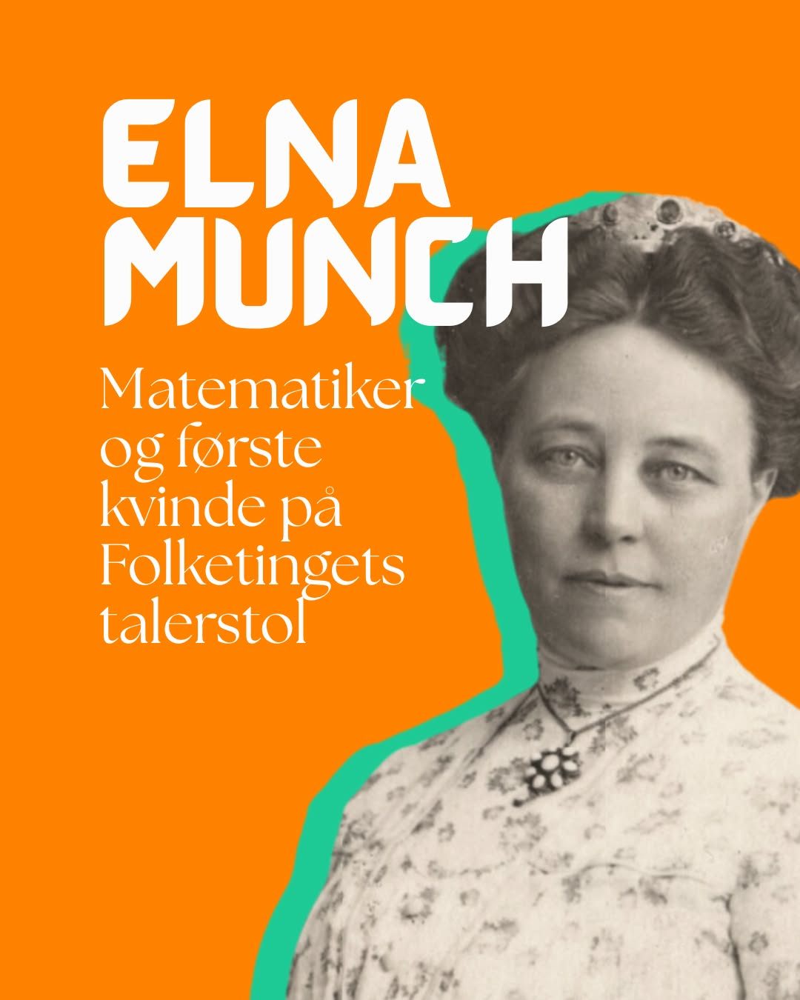
Elna Munch (1871-1945) blev i 1896 færdiguddannet cand.mag. i matematik. Hun var den anden kvindelige matematiker efter Thyra Eibe, som dimitterede året før.
I mange år underviste Elna Munch i matematik på bl.a. pigeskolen Marie Kruses Skole. Hurtigt blev hun ved siden af jobbet aktiv i politik i Det radikale Venstre. Hun og hendes mand Peter Munch blev centrale personer i partiet. Han som minister, hun i Københavns Borgerrepræsentation i 1917-25 og i Folketinget 1918-35.
Hun var en af de første fire kvinder, som blev valgt ind i Folketinget efter at kvinder havde fået stemmeret. Her var hun ordfører på de nye ligestillingslove i 1920’erne, der gav kvinder forældremyndighed over egne børn, adgang til offentlige embeder og ligeløn i staten. Og hun blev den første kvindelige politiker på Folketingets talerstol, da hun i 1918 holdt et indlæg om lærerindernes lønforhold.
Munchs største bedrift var dog, at hun i samarbejde med Johanne Rambusch stiftede Landsforbundet for Kvinders Valgret i 1907. Landsforbundet blev bl.a. takket være Munchs ihærdige mobiliseringsindsats i løbet af få år en stor landsdækkende organisation med omkring 11.000 medlemmer og over 150 lokale afdelinger. I modsætning til Dansk Kvindesamfund var formålet med Landsforbundet alene kvinders politiske valgret og foreningen nedlagde også sig selv i 1915, da målet var opnået.
Elna Munch abonnerede på en moderne tilgang til ligestilling, som nedtonede kønsforskellene og som understregede, at ligestillingskampen ikke var en kamp mellem kvinder og mænd. Da kvinderne i 1908 fik kommunal valgret, skrev hun følgende i en artikel i Landsforbundets blad:
”For det første bør Kvinderne vogte sig for at gaa til Valg som et særligt Kvindeparti imod Mændene. Noget af det allervæsentligste, der kan vindes ved Valgretten, er, at Kvinderne bliver regnet for Mændenes Ligestillede, ikke som en Kaste for sig. Men skal dette naas, da maa Kvinderne tage Arbejdet op i Fællesskab med Mændene, ikke isolere sig, ikke erklære, at de ikke vil blandes ind i alt det politiske »Kævl«”
Kilder: Dansk Kvindebiografisk Leksikon og ”Kvindevalgret” nr. 6, 1908
#pionerer #kvindeligeakademikere #elnamunch #deførste

Hanna Adler (1859-1947) tog sin magisterkonferens i fysik i 1892 i en relativt sen alder som 33 årig. Hun havde nemlig, som en række af de øvrige første kvindelige akademikere, en lærerindeeksamen bag sig, inden hun valgte at søge ind på universitetet.
Umiddelbart efter endt uddannelse rejste hun på en længere studietur til USA for at blive klogere på det amerikanske skolevæsen og især på de skoler, hvor der var fællesundervisning for piger og drenge.
Efter hjemkomsten oprettede hun sin egen privatskole Hanna Adlers Fællesskole på Sortedams Dosseringen i København. Princippet var fællesundervisning for begge køn i alle fag – også i gymnastik, sløjd og hjemkundskab. Skolen gjorde hermed op med den eksisterende forståelse i skolesystemet af, at piger og drenge, på grund af den biologiske forskel og på grund af de roller, de ville komme til at indtage som voksne, havde brug for forskellige typer af pædagogik og fag.
Hanna Adlers skole var den første af sin slags i Danmark og blev modtaget med kyshånd af kvindebevægelsen. I Dansk Kvindesamfunds blad ”Kvinden og Samfundet” kunne man i 1896 læse følgende omtale:
”Fællesskole med helt fælles Undervisning for begge Køn er jo kun, hvad enhver Kvindesagsven oprigtig maa ønske. Det fremhjælper begge Køns Dygtighed, det dræber Raaheden hos Drengene og Pjanketheden hos Pigerne og kalder alle gode Egenskaber frem i dem begge. Derfor ønsker vi af Hjertet, at denne Begyndelse her hjemme maa blive fortsat til Velsignelse for Slægten.”
Skolen var udover at rumme begge køn også anderledes på andre punkter. Fx var timerne kun på 30 min., klassekvotienterne på max. 22 elever og der blev ikke undervist – med mindre eleverne og deres forældre bad om det – i religion.
Skolen blev meget populær og kom med tiden til at rumme børn og unge fra børnehaveklasse til studentereksamen.
I 1918 skænkede Hanna Adler skolen til staten, men forblev rektor til 1929.
Kilder: Dansk Kvindebiografisk Leksikon og ”Kvinden og Samfundet”, nr. 2, 1896
#pionerer #kvindeligeakademikere #hannaadler #deførste

Ida Falbe-Hansen (1849-1922) var den første kvinde, som blev magister på danskfaget i 1890. Inden hun søgte ind på universitetet havde hun ligesom en række af de øvrige første kvindelige akademikere taget en læreruddannelse og undervist på Nathalie Zahles skole.
Magistergraden brugte hun dels til at undervise på bl.a. Danmarks Lærerhøjskole dels til at udgive en række faglitterære værker om bl.a. folkeviser og Grundtvig og Oehlenschlägers digtning. Sammen med sin bofælle Elisabeth Grundtvig introducerede hun Selma Lagerlöf til danskerne ved i første omgang at invitere hende til at læse op i Kvindelig Læseforening i København, senere ved at oversætte en lang række af hendes værker til dansk.
Ida Falbe-Hansen engagerede sig, ligesom mange af de andre kvindelige akademikere i slutningen af 1800-tallet, i kvindebevægelsen. Hun var aktivt medlem af Dansk Kvindesamfund og blev Dansk Kvinderåds første formand i 1899. Dansk Kvinderåd var en paraplyorganisation, som samlede alle de danske kvindeforeninger under en hat og som hørte under den internationale kvindeorganisation ”International Council of Women”, stiftet 1888 i USA.
Ida Falbe-Hansens opfattede kvindesagen, som et helt naturligt fænomen, der opstod nærmest af sig selv, fordi der var kommet en unaturlig ubalance mellem kvinder og mænd. I foredraget ”Om Aarsagerne til Kvindespørgsmålets Fremkomst”, som hun holdt i Studenterforeningen i 1898 formulerede hun det således:
”Det er en ganske jævn og naturlig ting. Den er en bevægelse, der fremkommer af sig selv overalt og til alle tider, hvor forholdet mellem mænd og kvinder ved tingenes udvikling er kommen ud af sin naturlige ligevægt.
Thi det sker af og til. Verden staar nemlig ikke stille. Det skulde synes overflødigt at sige det, men det er underligt, hvor ofte det dog glemmes.”
Kilder: Dansk Kvindebiografisk Leksikon og ”Kvinden og Samfundet” nr. 11, 1904
#pionerer #kvindeligeakademikere #idafalbehansen #deførste

Nina Bang (1866-1928) blev i 1894 den tredje kvindelige historiker.
Hun var marxist og sammen med sin mand Gustav Bang, skrev hun en række bøger – bl.a. en biografi om Karl Marx og en ny danmarkshistorie til undervisningsbrug i folkeskolen. Derudover påbegyndte hun et stort forskningsprojekt om 1500-tallets Øresundstold, som først blev afsluttet af andre forskere efter hendes død.
Nina Bang meldte sig ind i Socialdemokratiet i 1895, og herefter gik det stærkt. Først blev hun ansat som journalist på partiets avis ”Social-Demokraten”, hvor hun dækkede områderne: udenrigspolitik, økonomi og kvindepolitik. I 1904 blev hun medlem af partiets hovedbestyrelse, som en af de første kvinder, og fra 1913-1917 sad hun i Københavns Borgerrepræsentation. Ved det første valg i 1918, hvor kvinder kunne stemme, blev hun valgt som en af 5 kvinder til Landstinget. Og da Thorvald Stauning i 1924 kunne danne den første socialdemokratiske regering i Danmark, udpegede han Nina Bang til Danmarks og verdens første kvindelige minister.
Nina Bang var optaget af kvindepolitik og især af, hvordan arbejderkvindernes arbejds- og livsvilkår kunne forbedres. Kvindebevægelsen havde hun til gengæld ikke meget tilovers for.
Da Landstinget i 1919 førstebehandlede lovforslaget om at give kvinder adgang til offentlige embeder og erhverv, bakkede hun godt nok op om forslaget. Men hun påpegede samtidig, at der var stor forskel på de vilkår, som henholdsvis arbejderklassens og borgerskabets udearbejdende kvinder var underlagt. Hun sagde bl.a.:
”De højere Klassers erhvervende Kvinder har hidtil ikke følt Byrderne ved Erhvervet i den Form, som Underklassens Kvinder har følt dem. De har ikke behøvet at passe deres Hjem, naar de kom sent hjem om Aftenen, og de har ikke maattet vide deres Børn gaa alene for Lud og koldt Vand. Naar de hidtil har kunnet undgaa det, kan de takke Arbejderklassens Kvinder derfor, Arbejderklassens Kvinder har nemlig paataget sig det Arbejde i Hjemmene, uden hvilket de højere Klassers Kvinder ikke kunde være erhvervende.”
Kilder: Dansk Kvindebiografisk Leksikon og Nina Bangs ordførertale i 1919
#pionerer #kvindeligeakademikere #ninabang #deførste
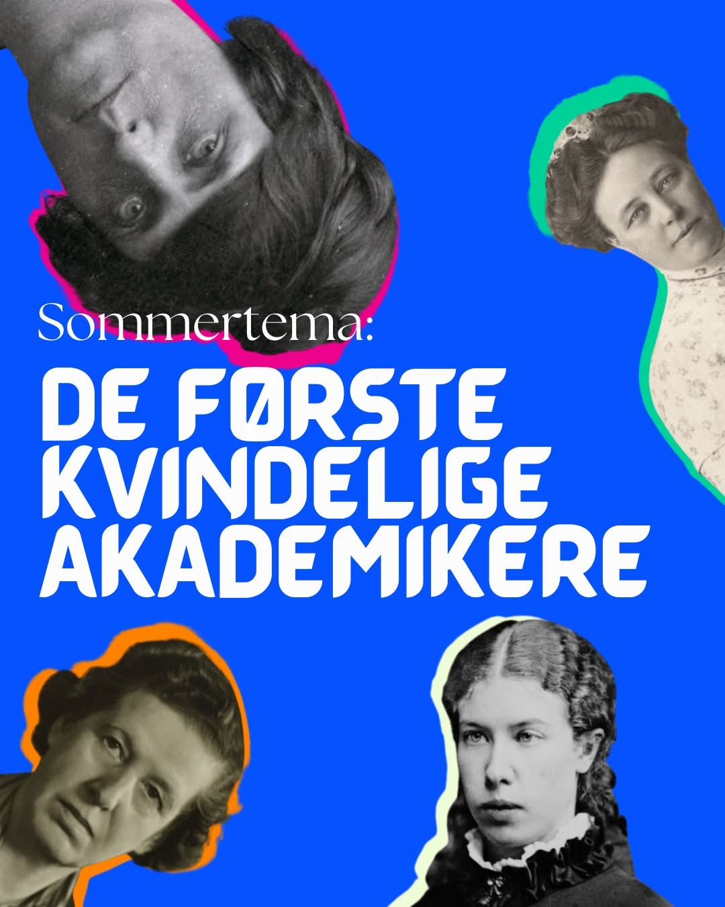
I år er det 150 år siden, at kvinder fik lov til at studere på universitetet. Det skete ved en kongelig anordning i 1875, der gav kvinder adgang til aflægge eksamen i alle fag, bortset fra teologi, på Københavns Universitet.
For at blive optaget på universitetet krævedes det ligesom i dag en studentereksamen. Der var bare lige det, at kvinder i 1875 ikke havde adgang til de offentlige gymnasier. Det fik de først i 1903. I stedet måtte de selv læse op til studentereksamen eller søge ind på de få pigeskoler som fx Natalie Zahles, som fra 1877 tilbød en gymnasieuddannelse.
Kvinderne fik heller ikke adgang til at søge universitetets legater, til kollegierne og hvad der var værre, ingen ret til at bruge deres eksamen efterfølgende på det offentlige arbejdsmarked. Det fik de først i 1921.
På trods af alt dette, lykkedes det alligevel 379 kvinder at tage en universitetseksamen de følgende 50 år. Og det er nogle af dem, som vi i løbet af sommeren vil sætte spotlys på her på kanalen.
Vi præsenterer 12 af dem, som færdiggjorde deres universitetseksamen fra 1887-1915 og som efter universitetet trods alle odds fik en karriere og for manges vedkommende også et aktivt liv i kvindebevægelsen.
De fleste af jer kender sikkert den første kvindelige akademiker, Nielsine Nielsen, som tog medicinsk eksamen i 1885 og som efterlod sig interessante – nu trykte - erindringer om sin tid på universitetet. Hende kommer vi ikke til at fortælle om. I stedet har vi valgt 12 lidt mindre kendte.
Følg med de næste 6 uger og hvis du er interesseret i at få nærmere kendskab til de 379 første kvindelige akademikere, kan du finde viden om dem i jubilæumsskriftet ”Kvindelige akademikere 1875-1925, 1925. Vi har lagt et link i bio til Det Kgl. Biblioteks digitaliserede udgave.
#kvindeligeakademikere #universitetetshistorie #jubilæer #ligestilling
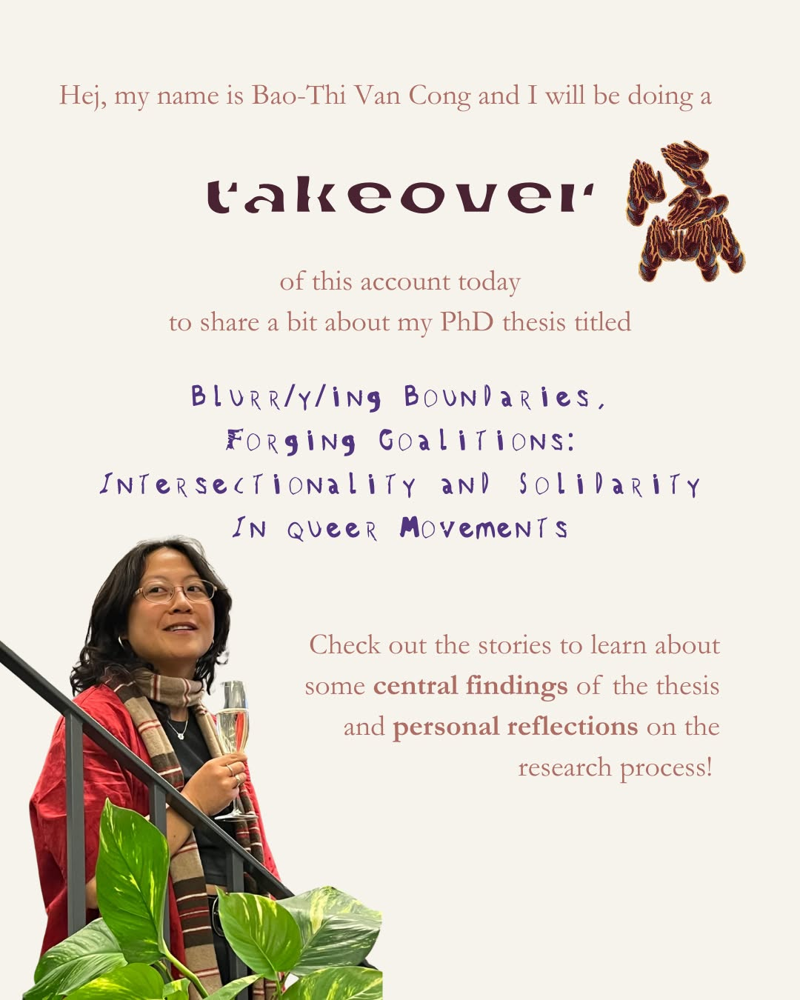
What does it mean to fight for liberation as part of a movement that is itself fractured by differences? How do we build solidarity in communities where power and privilege are unevenly distributed, even among those who are marginalized? Who is included in our visions of liberation, and who is left behind? These are some of the questions I kept returning to throughout my PhD in social psychology.
I'm Bao-Thi Van Cong, and my research focuses on intersectional solidarity within queer and trans communities. More specifically, I examine how racialization affects experiences of inclusion in queer and trans communities and how this shapes ideas of solidarity and collective organizing.
In today's stories, I share some key insights from my thesis and reflect on the messy research process that allowed for these findings to come to life.
Thank you so much to @_marinasulima for the beautiful artwork throughout my thesis, this post, and the stories and to @genderfail who make groovy fonts based on protest signs from queer and trans projects.
If you have any questions about the research (findings or process), feel free to contact me: btvc@psy.ku.dk

Det viser forskerne Lara Luciani og Maryna Shevtsova i artiklen ”Sexuality securitized: how Russia’s invasion of Ukraine reconfigures (anti-)LGBTQ politics in Eastern Europe”. Her undersøger de krydsfeltet mellem geopolitik og LGBTQ-rettigheder med fokus på, hvordan invasionen af Ukraine har ændret regionens politikker overfor LGBTQ-personer og deres tilhørsforhold til nationen.
Luciani og Shevtsova fokuserer på Ukraine og Georgien som to lande, der har udviklet sig meget forskelligt i forhold til LGBTQ-rettigheder siden invasionen.
For hvor invasionen i Ukraine har ledt til, at nogle seksuelle minoriteter er blevet lukket ind i landets kamp mod Rusland, har udviklingen i Georgien taget den modsatte drejning. Her bliver LGBTQ-personer set som en trussel, som samfundet må beskyttes fra.
I Ukraine er nogle seksuelle minoriteter blevet indlemmet i ideen om hvem, der hører til i nationen. Det er sket i et forsøg på at modstå den russiske invasion, fordi den har skabt en eksistentiel trussel mod nationen. Men det er ikke alle, der bliver set som en del af den ukrainske nation. Mens lesbiske, homoseksuelle mænd og biseksuelle er blevet mere en del af staten end tidligere, så bliver transkønnede stadig set som nogle, der er en trussel mod nationalstaten.
I Georgien har der været den modsatte udvikling. Her er der sket en optrapning af sikkerhedsretorikken hvor alle LGBTQ-personer nu bliver opfattet som en trussel som nationalstaten.
Således udfordrer artiklen, hvordan LGBTQ-rettigheder – og modstanden mod dem – er direkte forbundne med geopolitik både indenfor og på tværs af nationalstater. Men også at det ikke nødvendigvis udvikler sig på samme måde i alle lande. På den måde udfordrer forskerne også den binære opfattelse af det ’liberale’ Europa over for det ’homofobiske’ Rusland og viser hvordan 'europæiske værdier' er skrøbelige og endda flygtige.
Du kan læse meget mere i artiklen. Vi har lagt et link i bio.
#lgbtq #antigender #ukraine #geopolitik #georgien

Den fandt nemlig sted i forbindelse med grundlovsændringen i 1915 som gav kvinder politisk valgret.
Det nye kvindelige medborgerskab blev fejret i København med en stor kvindedemonstration, hvor op mod 20.000 kvinder samledes og gik til Amalienborg Slotsplads.
Bag demonstrationen, som skulle vise sig at blive kvindebevægelsens til dato største manifestation, stod Danske Kvinders Nationalråd og 35 andre kvindeorganisationer og –foreninger.
Dagen efter løb demonstrationen med forsiderne i både de lokale og nationale aviser. Det var nemlig ikke hverdag at se store grupper af kvinder i det offentlige rum. I stort opsatte artikler med billeder af glade kvinder, var der ros til arrangørerne for afviklingen. Tænk at kvinder, som ikke havde været soldater, var i stand til at holde orden i geledderne! Og journalisterne var også slået af forundring og begejstring over den helt uvante lyd, der fremkom, da kvinder i tusindtal hilste kongen med rungende hurraer.
Avisen Københavns journalist beskrev det i avisen dagen efter:
”Underligt saa forskelligt saadanne Hurraer af Kvinder alene lyder i modsætning til blandet Kor. Som spinkle Violiner i modsætning til Hornorkester (… ) Bestandig bliver Hurraraabene ved, og Lommetørklæderne flagrer som talløse Sværme af hvide Sommerfugle hen over Pladsen”
Glædelig grundlovsdag.
#kvindevalgret #grundlove #demonstrationer #kvindernesgrundlovstog

Tre forskere er gået sammen om at udføre et kvantitativt meta-studie, der undersøger om kvinders kognitive evner forringes under menstruationscyklussen.
Og studiet viser, at det er der ikke evidens for.
Forskerne har gennemgået 102 studier, som dækker områder såsom kvindernes evner inden for opmærksomhed, kreativitet, motorik og intelligens, samt rumlige og verbale evner, hvor funktionsniveauet er målbart og kan vurderes ud fra objektivt korrekte svar eller udførelse.
Så selvom menstruationscyklussen kan have en psykologisk effekt på kvinder, er der ikke er evidens for at menstruerende kvinder får nedsat deres kognitive evner. Den idé har nok nærmere sine rødder i spekulationer og myter.
Forskerne påpeger dog, at der er en udfordring i den eksisterende forskning indenfor området hvor deltagerantallet ofte er småt og benytter forskellige metoder til at fastlægge deltagernes placering i cyklussen.
Derfor anbefaler de, at der igangsættes større undersøgelser med et repræsentativt antal deltagere og et mere holistisk perspektiv på både undersøgelsesdesign og dataindsamling, da mange faktorer potentielt spiller ind.
Du kan læse meget mere i artiklen "Menstrual cycle effects on cognitive performance" - vi har lagt et link i bio.
#metaanalyse #kvantitativ #menstruation

Det er tilgangen i den seneste udvidelse af onlineværket Nordisk Kvindelitteraturhistorie med temaet Queer, der indeholder 7 nye artikler med læsninger eller genlæsninger af nordiske skønlitterære værker ud fra et queerteoretisk perspektiv.
Queerlæsninger sætter i modsætning til andre typer af læsninger fokus på relationen mellem det såkaldte 'normale' og det 'afvigende'. Ifølge redaktørerne er et af de overordnede spørgsmål for temaet ”hvordan 'skæve' erfaringer med køn, krop og seksualitet er kommet til udtryk litterært både før og nu” og hvilke konsekvenser det får for vores opfattelse af kvinders litteraturhistorie, når den læses på nye måder.
I temaet kan man fx læse om Karen Blixens, Selma Lagerlöfs og Tove Janssons brug af litterære figurer, som ikke opfylder kravene til en traditionel heteroseksuel kvindelighed. Det er figurer, som heksen, gammeljomfruen, kattedamen og stedmoderen.
Eller man kan læse om forfatteren Marie Marcus, hvis bøger om kvinder, pornografi og masochisme gjorde hende uspiselig og ulæselig for samtidens kvindelige læsere. I dag kan hendes bøger imidlertid forstås og læses som meget modige bøger på grund af deres radikalitet og insisteren på at inddrage det private.
Der er også læsninger af nordisk skønlitteratur fra 2010’erne, som udfordrer det traditionelle moderskabs- og familieideal, af skønlitteratur som beskæftiger sig med relationen mellem mennesker og natur og af 2020’ernes nye translitteratur.
Det hele finder du på Nordisk Kvindelitteraturhistorie portalen. Redaktørerne af temaet er de tre danske litteraturforskere Camilla Schwartz, Anne Scott Sørensen og Karen Hvidtfeldt. Vi har lagt et direkte link til temaet i bio.
#queerlæsning #litteraturhistorie #norden #danmark

Jeg hedder Ida, og er antropolog. Jeg laver i dag et takeover, der handler om chemsex, som jeg undersøgte i mit speciale: Mellem nærhed og distance: En antropologisk undersøgelse af socialitet og grænser blandt chemsex-deltagere i København.
I specialet dykker jeg ned i de rumlige, sociale, moralske og eksistentielle dimensioner af chemsex, og flytter fokus væk fra sundhedsrisici knyttet til praksissen, som ofte er det dominerende fokus i studier af chemsex.
Følg med i stories, hvis du vil vide mere om, hvad chemsex er, hvad chemsex skaber og hvad chemsex betyder for dem, der dyrker det.
Hvis du har spørgsmål er du velkommen til at kontakte mig på: ictc@anthro.ku.dk.
#speciale #takeover #antropologi #chemsex

Kender du Central- og Østeuropas feministiske historie?
Hvis ikke, kan du nu læse om den i en stor ny antologi, der består af feministiske tekster, som ikke tidligere har været oversat.
Teksterne, der er skrevet af både kendte og ukendte feminister og kvinderettighedsforkæmpere fra området – fra Rhinen til Rusland - giver et indblik i feminismens og kvinderettighedernes historie i Øst-Central Europa i det 20. århundrede.
Der er både akademiske tekster, politiske tekster og digte.
Bogen er inddelt i 14 forskellige temaer i kronologisk rækkefølge. Fra arven fra de tænkere, der skrev før 1945, til det sidste kapitel, "Transitions", som beskæftiger sig med kvinders oplevelser omkring og efter murens fald i 1989.
Du kan blandt andet finde tekster om sovjetiske kvinder som var aktive kommunister i Letland, kvinders dobbeltarbejde i Bulgarien, forslag til beskyttelse af kvinders ret til abort i Polen og debatter om vestlig feminisme.
Med sit brede fokus giver bogen et indblik i de strømninger, der har været, mens området har bevæget sig mod socialismen og væk fra den igen. For at give læseren en indføring i de meget forskellige tidslige og geopolitiske situationer, som teksterne indskriver sig i, starter hvert afsnit med en kort introduktion til forfatteren og den kontekst, teksten forholder sig til. Derudover indeholder bogen en litteraturliste, som kan bruges til videre læsning.
Regionen mellem Rhinen og Rusland kaldes i bogen Øst-Central Europa (East Central Europe), for at indkapsle de tidligere kommunistiske og socialistiske lande på det europæiske kontinent.
Bogen “Texts and Contexts from the History of Feminism and Women's Rights: East Central Europe, Second Half of the Twentieth Century” blev udgivet i 2024 og kan lånes på Det Kgl. Bibliotek eller findes online som Open Access gennem linket i bio.
#socialisme #kvindehistorie #østeuropa #historiskfeminisme

Skal? Skal ikke? Børn, fertilitet, stat og lyst.
Er det nødvendigt at der bliver født flere børn – at fertiliteten stiger – for at bevare velfærdssamfundet? Eller er det tværtimod godt for klimaet og statsfinanserne, hvis fertiliteten falder?
Svaret er både ja og nej. Faktisk opfordres danskerne til både at få flere og færre børn af politikere og eksperter. Og det er bl.a. dette repro-paradoks, som unge kvinder og mænd bliver stillet overfor, når de skal beslutte, om de vil have børn eller ej?
På mødet vil vi gerne have tegnet repro-paradokset tydeligere op og finde ud af, hvad der er op og ned? Og hvordan den megen snak om at få børn påvirker unges liv? Både ift. hvis man brændende ønsker sig at få børn, men har svært ved at blive gravid eller hvis man ikke ønsker at få børn overhovedet?
Oplægsholdere:
Sociolog Anna Sofie Bach: fhv. forskningsleder på projektet ReproCitizen – Responsible Reproductive Citizenship in Denmark in the 21st Century.
Forfatter og journalist Amalie Langballe: Laver bl.a. podcasten ”Børnefri” på Radio 4
Professor og læge Lone Schmidt: Bl.a. leder af forskergruppen ”Reproduktiv sundhed”.
Hvornår? 8. april kl. 16-18
Hvor? Universitetsbibliotekets lounge på Søndre Campus, Karen Blixens Plads 7.
Arrangementet afholdes af Brandes Selskabet i samarbejde med Det Kgl. Biblioteks kønsforskningsservice.
Mødet er gratis og alle er velkomne.
#event #fertilitet #reproduktion #samtale

Har du brug for hjælp til at finde litteratur til en opgave, en artikel eller til dit speciale? Og leder du efter forskningslitteratur om fx køn, ligestilling eller seksualitet? Så giver vi gerne en hånd. Og det uanset om du er gymnasieelev, studerende, journalist, forsker eller noget helt femte.
Vi hjælper også gerne med at finde tilgængeligt kildemateriale om fx kvindehistorie og kvindebevægelseshistorie eller med at finde lige den kønsstatistik, du har brug for.
Skriv til os på koensforskning@kb.dk. Der er også et link i bio.
#litteratur #kønsforskning #ligestilling #seksualitet
Maleri af Torajiro Kojima, Woman Reading.

”Pain Unseen” er en digital udstilling fra det svenske Kvinnohistoriska museum, der handler om endomentriose. Den blander kunst, historie, medicin og personlige fortællinger for at skabe mere opmærksomhed og årvågenhed omkring sygdommen som estimeres at ramme omkring 10 % af dem, der er født med en livmoder.
I onlineudstillingen kan du lære mere om, hvad endomentriose er, hvordan det er at leve med det, og få et historisk indblik i, hvordan sygdommen er blevet repræsenteret og misforstået gennem tiden. Derudover indeholder den digitale udstilling udvalgte værker og interviews med kunstnerne fra udstillingen ”Breaking This Silence”, som også er del af det større #ENDO-projekt.
Du kan også få et indblik i, hvordan kvindekroppen er blevet repræsenteret mere bredt i et kunsthistorisk perspektiv gennem interviews med en kurator fra det svenske nationalmuseum og en kunstner og kunsthistoriker fra Frankrig.
“Pain Unseen” kan opleves online og vi har lagt et link i bio.
#endomentriose #onlineudstilling #kunst #krop

Mit navn er Sofia Bakhsh, jeg er historiker og laver i dag en takeover, der fortæller om mit speciale: Elegante Fruer, Chikke Damer og Søde Veninder: Kvinders queer seksualitet i kontaktannoncer.
Jeg undersøger, hvordan kontaktannoncer kan bruges som historisk kilde til at nuancere køns- og klasserepræsentationen i dansk queer- og seksualitetshistorie.
Følg med i stories og hør om, hvordan københavnere søgte s3x og kærlighed i de første år af 1900-tallet!
Hvis I har nogle spørgsmål, kan I kontakte mig her på insta @sofiabakhsh. I kan også finde mig på LinkedIn: Sofia Keller Bakhsh eller på mail: sofiakb@ruc.dk
#takeover #speciale #queerkvinder #1900tallet

Dette ”fun fact”, og mange andre facts, statistikker og beretninger kan du læse om i ”Mental load & ligestilling”, som er den første danske bog om begrebet mental load.
Bogen er skrevet af parterapeut og sexolog Cahtrine Katzmann og kommunikationskonsulent og vært på ”Jeg er mor” podcasten, Laura Vilsgaard.
I stedet for at tale om mental load som den enkelte kvindes eller families problem, bruger forfatterne vidnesbyrd, statistikker og kvalitativ forskning på området til ”at hæve debatten om mental load op på et samfundsniveau”.
Katzmann og Vilsgaard begynder med at give et overblik over de former for ulige fordelt arbejde, som begrebet "mental load" dækker over. De fokuserer især på de skjulte opgaver i familien og hjemmet og hvorfor disse opgaver på grund af historiske årsager og samfundsmæssige konstruktioner tilfalder kvinder.
Samtidigt med at være samfundsorienteret er ”Mental load & ligestilling” også en selvhjælpsbog både til dem, der gerne vil have værktøjer til at synliggøre det ulige og ofte usynlige arbejde, de udfører, og til dem, der gerne vil blive klogere på deres blinde vinkler ift. mental load og komme uligheden i deres eget familieforhold til livs.
Du kan låne bogen gennem dit lokale folkebibliotek eller på Det Kongelige Bibliotek.
#mentalload #samfund #familieliv #omsorgsarbejde #ulønnetarbejde #kønsforskning

Det bliver slået fast i en spritny ændring af Bekendtgørelsen om initiativer til fremme af ligestilling af kvinder og mænd. Det betyder, at det fremover bliver vanskeligere for foreninger at afholde kønsopdelt svømmeundervisning.
Tidligere har det været sådan, at foreninger automatisk fik dispensation fra Ligebehandlingsloven, når de arrangerede svømmeundervisning for fx kvinder. Sådan er det for så vidt stadigvæk. Dog med den tilføjelse at hele svømmehallen ikke længere i et tidsrum kan holdes åbent kun for det ene køn.
Det betyder, at foreninger fx stadigvæk godt må afholde svømmekurser kun for kvinder, men at der altså samtidig godt må være mænd til stede i svømmehallen.
Det er ligestillingsminister Magnus Heunicke, som har taget initiativ til ændringerne i §6 i bekendtgørelsen. I en pressemeddelelse fra d. 13. november 2024 forklarer han hvorfor:
"Det er på ingen måder foreneligt med grundlæggende danske ligestillingsværdier og kulturen i det danske foreningsliv at afskære en far fra at overvære sin datters svømmetræning, eller at piger og kvinders kroppe skal gemmes væk på den måde. Kønsopdelte idrætshold skal ikke bruges som undskyldning for at ekskludere det modsatte køn fra faciliteterne. Derfor ændrer jeg nu bekendtgørelsen".
Vi har lagt et link til den ændrede bekendtgørelse i bio.
#ligestilling #ligebehandlingsloven #bekendtgørelser #kønsopdeltundervisning

Det er en af professor Tanya Karoli Christensens pointer i artiklen ”Husspektakler og familietragedier – sproglig sløring af agens og ansvar i sager om partnervold og partnerdrab”.
I artiklen udforsker Christensen effekterne af at bruge ord som "husspektakel" og "familietragedie" om partnerdrab og partnervold. Hun argumenterer for, at den måde, ordene bliver brugt på i politiet og i medierne, skjuler, hvem der står til ansvar for handlingerne. Ordvalget bidrager til, at volden bliver omtalt som noget, der hører hjemme inden for hjemmets fire vægge. Og det gør det sværere at forstå de generelle mønstre, der kendetegner det, der ofte kaldes den mest forudsigelige forbrydelse – nemlig partnerdrab. Indtil 2009 kunne man i det danske retssystem få en såkaldt ægtefællerabat, hvis man slog sin partner ihjel.
Artiklen indgår i bogen "Partnervold og partnerdrab: samfundets blinde vinkel", 2024. Bogens overordnede formål er at vise, at partnervold og partnerdrab ikke bør ses som enkeltstående handlinger, men som strukturelle problematikker, hvor køn, kultur, magt og seksualitet spiller ind.
Bogen er inddelt i fire dele: Den retlige ramme om partnervold, forståelse og reaktioner på partnervold og partnerdrab, kulturelle og teoretiske perspektiver på partnervold og partnerdrab samt politiblikket på sager om partnervold og partnerdrab.
På den måde dækker bogen mange forskellige aspekter af partnervold og partnerdrab. Den henvender sig både til praktikere og teoretikere og kan således bruges af blandt andet politiet, fagfolk fra retssystemet og andre samfundsaktører, der kommer i kontakt med disse kriminalitetsformer.
"Partnervold og partnerdrab: samfundets blinde vinkel" er redigeret af Trine Baumbach, Linda Kjær Minke og Tine Søberg og kan lånes på folkebiblioteker landet over eller på Det Kongelige Bibliotek.
#partnervold #partnerdrab #retssystemet #politi

Er du - eller kender du - en gymnasieelev som skal i gang med at skrive SRP?
Så kom forbi til en hyggelig eftermiddag på museet KØN d. 21 januar kl 16.15 – 18.00, hvor vi teamer op med @konmuseum og holder SRP workshop om køn.
Uanset om du stadig er i gang med at udvikle din idé, eller om du har en plan og blot mangler materialer til din SRP så er du velkommen til workshoppen.
Vi starter med korte oplæg om forskellige emner til inspiration og bagefter bliver der mulighed for at tale med os om hvordan du finder materialer, information og bøger inden for en række kønsfaglige emner.
Under workshoppen byder vi på gratis boller med ost samt kaffe og te. Tak til @forlagetsystime for at gøre det muligt.
Tilmeld dig ved at skrive til undervisning@konmuseum.dk med ”SRP WORKSHOP” i emnefeltet. Der er begrænsede pladser som uddeles efter først til mølle princippet.
Skulle du sidde og have brug for hjælp med at finde materialer til din SRP uden at kunne komme til Århus d. 21 januar så er du altid velkommen til at skrive til os på koensforskning@kb.dk
#srp #gymnasielever #litteratur #materialer #køn

Kære alle sammen,
Rigtig godt nytår og tak for at følge med i 2024. Vi er så glade for at flere og flere læser med, kommenterer og stiller spørgsmål. Bliv endelig ved med det!
Vi lover at der kommer meget mere formidling af kønsforskning i 2025, hvor vi bl.a. tager til Århus for at undervise i litteratursøgning for gymnasielever på museet KØN og for studerende på Århus Universitet.
Vi fortsætter selvfølgelig med at formidle nyheder her på Instagram, lave take-overs med studerende og forskere, samt arrangere events med universitetskandidater, der har skrevet speciale om køn.
Og så er 2025 også 150-års jubilæet for kvinders adgang til universitetet! Det fejrer vi sammen med Københavns Universitet med en række spændende events til efteråret.
Som altid poster vi om alle vores aktiviteter her på Instagram, så stay tuned
Mange hilsner,
Jytte, Nakisa & Nynne
Det Kongelige Biblioteks Kønsforskningsservice

Julemåneden står for døren. Og i kønsforskningsteamet har vi viet december og vores julekalender til kvinder i den danske universitetshistorie.
For d. 25. juni næste år er det 150 år siden at kvinder fik adgang til universitetet. I de første mange år som studerende – senere også som ansatte undervisere og forskere.
Fra d. 1.-24. december kan du hver dag quizze dig til viden om kvinder på universitetet gennem 150 år og på den måde blive klædt på til den store markering af jubilæet, som Københavns Universitet lige nu er i fuld gang med at planlægge.
Og så kan du også skabe lidt god stemning med din viden til firma- eller familiejulefrokosten.
Julekalenderen bygger på en række forskellige kilder, som alle kan findes gennem vores samlede overblik i bio. Maleriet som er brugt til julekalenderen er Florine Stettheimer’s ”Christmas” c. 1930-1940.
#julekalender #150aaret #universitetshistorie #kvinderiakademia

Findes der en dansk translitteratur og hvordan ser den i så fald ud? Det undersøger jeg i min forskning om transkønnethed og skønlitteratur i en dansk kontekst. Jeg ser fx på forskellen på den litteratur ciskønnede har skrevet om transkønnede og så den litteratur som transkønnede selv har skrevet og skriver.
Det er hurtigt blevet klart, at det ikke er så let at skille transkønnethed fra nonbinatritet og interkønnethed i litteraturen, så man kan sige, at det i bred forstand er ’kønoverskridelser’ jeg kigger på.
Se min story og følg min profil for tips til translitteratur. Både tekster om og af transpersoner og litteratur, som man med fordel kan læse gennem et transkønnet blik.
Og send mig et tip, hvis du kender en bog, du synes jeg skal læse med transbrillerne på.
@trans_litt.dk
thc211@hum.ku.dk
#takeover #translitteratur #skønlittertur #

Hej, mit navn er Samina. Jeg er nyuddannet antropolog fra Charles University i Prag med specialisering i kvinders seksuelle og reproduktive sundhed. I dag laver jeg take over på profilen her om mit speciale med titlen: "Women's experience of gynecological examination: embodiment and malpractice in care".
Kvinders oplevelser af smerter og ubehag under gynækologiske undersøgelser er et stærkt underprioriteret emne indenfor samfundsvidenskaben, særligt når der er tale om kvinder, som ikke har en konkret medicinsk lidelse eller sygdom i deres underliv. Jeg har derfor været på feltarbejde på hospitaler i Prag, hvor jeg har observeret gynækologiske undersøgelser og jeg har interviewet kvinder med forskellige nationale baggrunde for at finde ud af, hvorfor kvinder kan opleve smerter under gynækologiske undersøgelser og om/hvordan det kan undgås.
Jeg håber I vil følge med i stories og lære lidt om, hvorfor jeg synes den gynækologiske tilgang til kvindekroppen bør revurderes.
I er velkomne til at stille spørgsmål til mig om emnet, mit feltarbejde og min baggrund direkte her på instagram til: @saminamina_ehehh eller til min mail: samina.nrgd@gmail.com. Mit speciale kan læses gennem link i bio.
#takeover #gynækologi #antropologi #speciale

Langt flere mænd end kvinder vælger at fortsætte med at være lønmodtagere, selv om de får udbetalt folkepension. Det viser ny opgørelse fra Danmarks Statistik.
I juni 2024 drejede det sig om ca. 80.500 folkepensionister, som stadigvæk var i arbejde. 2 ud af 3I juni 2024 drejede det sig om ca. 80.500 folkepensionister, som stadigvæk var i arbejde. 2 ud af 3#statistikker var mænd.
Ud af de 80.500 folkepensionister arbejdede knap 19.000 af dem fuld tid.
74 % af dem var mænd.
Ca. 17.500 arbejdede deltid (mellem 16 -32 timer ugentlig).
66 % af dem var mænd.
Ca. 11.500 arbejdede under 16 timer ugentlig.
63 % af dem var mænd.
Hvor mange, der vælger helt at udskyde folkepensionen og om der også her er en kønsskævhed, siger denne statistik intet om.
Du kan læse mere om folkepensionister, som også er lønmodtagere i Nyt fra Danmarks Statistik, nr. 298 fra d. 10. oktober 2024. Vi har lagt et link i bio.
#folkepension #lønarbejde #statistikker

Det viser en undersøgelse fra CBS foretaget af Marie Louise Mors og Margarethe F. Wiersema. Kvinder er mere velforberedte end mænd, de er bedre til at indrømme, hvis der er noget, de ikke ved, og de er bedre til at stille kritiske spørgsmål i bestyrelsesrum, hvilket influerer hele dynamikken i bestyrelsesrummet og virksomhedsledelsen.
Mors og Wiersemas artikel "Women directors and board dynamics: Qualitative insights from the boardroom" er baseret på interviews med mænd og kvinder, som samlet har været bestyrelsesdirektører i over 200 børsnoterede virksomheder i USA og Europa. Fra deres interviews har de udledt at kvindernes opførsel udfordrer eksisterende bestyrelsesnormer (fx. ikke at påpege fejl eller skabe kontrovers), og det har en afledt effekt på deres mandlige kollegaer. Denne effekt skaber rum for mere dybdegående diskussioner med mindre politik og mere åbenhed. Mors og Wiersemas undersøgelser viser også, at kvinder ikke lever op til tidligere teorier om, at de skulle opføre sig mere bekymrede for andre eller være særligt fintfølende - til gengæld udviser de rationalitet og autonomi.
Men hvor meget rykker denne effekt så ved kvindernes status i disse rum?
Tidligere forskning viser, at opfattelser af kønsstereotyper endnu spiller en stor rolle i bestyrelsesrum, og at det kan være svært for kvinder at navigere i, uden enten at give efter for dem eller at blive "straffet" for at gå imod.
På den ene side viser undersøgelserne i artiklen, at kvinders ageren i bestyrelsesrum har en positiv og progressiv effekt på arbejdsgangen, men samtidig bliver de ikke anerkendt for dette, fordi de i forvejen ikke er anerkendt som ligeværdige af deres mandlige kolleger.
Du kan læse mange flere spændende detaljer om kønsdiversitet i virksomhedsbestyrelser i artiklen - vi har lagt et link i bio.
#bestyrelser #kønsdiversitet #kønsforskning

Nej siger Ligebehandlingsnævnet.
Nævnet har lige afgjort en sag, hvor en kvinde kontaktede en barbershop for at få lavet en såkaldt ”fade”, en frisure der ofte opfattes som en ”herre” frisure.
Barbershoppen afviste kvinden med den begrundelse, at de udelukkende klippede mænd.
Og det er, ifølge Ligebehandlingsnævnet, en overtrædelse af Ligestillingsloven, der forbyder både direkte og indirekte diskrimination på grund af køn. Kvinden fik en erstatning på 2.500 kr.
Vi har lagt et link i bio til afgørelsen.
Hvis du vil følge med i Ligebehandlingsnævnets afgørelser kan du tilmelde dig deres nyhedsbrev. Det udkommer månedligt og tilmelding sker på nævnets hjemmeside.
#ligestillingsloven #klagesager #ligestilling #frisører #diskrimination

Hej! Mit navn er Sarah-Sofie Schou Schaufus. Jeg er nyuddannet cand.mag. i Anvendt Kulturanalyse fra KU og i dag laver jeg take over her på profilen om mit speciale: The Hidden Struggles of Menstruation. A Cultural Analysis of Menstrual Experiences Among Young Danish Women.
Som I vil læse, er menstruation et emne som er meget underbelyst, særligt fra et kulturelt og samfundsmæssigt perspektiv. Derfor valgte jeg specifikt at fokusere på beretninger fra mine interviewees om deres menstruationsoplevelser, og hvordan de påvirker deres liv.
Jeg håber I har lyst til at følge med, og lære lidt mere om hvordan det er at være en ung, dansk, menstruerende kvinde!
Hvis I har nogle spørgsmål, må I endelig gerne kontakte mig her på Instagram på @sarahsofiesch, eller skrive til mig på sarah-sofie.schaufuss@hotmail.com.

Hej! Mit navn er Olivia og jeg blev i foråret færdig med mit speciale i litteraturvidenskab fra KU.
Mit speciale hedder "Hun vil også drikke og fortælle - en legende og performativ strategi i 1970'ernes nordiske kvindelitteratur, særligt i Sandra Holms roman "Har jeg været her før" (1978)"
Med den lange og lidt knudrede forsøger jeg at sige, at jeg beskæftiger mig med en lidt anden type kvindelitteratur fra det vigtige årti 1970'erne, end den de fleste måske først tænker på. Mit speciale handler om kvinder, der insisterede på at rejse, ryge, drikke og gå deres egene veje- og som ikke på den måde var en del af tidens kvinde/rødstrømpebevægelse.
Den svenske forfatter Sandra Holm (1943-87) har hovedrollen i mit speciale- hun er glemt af de fleste i dag, hvilket jeg synes er meget ærgerligt.
Jeg håber I vil følge med og se hvorfor!

Hej! Jeg hedder Anna Terese Kofoed-Ottesen. I dag laver jeg take over her på profilen om mit speciale: ”It is Red. It is Good. It Gives New Energy” – Representations of Menstruation, Women’s Bodies and Health in Danish Media and the Redstockings Movement, 1970-1985.
Jeg er nyuddannet historiker med speciale i kønshistorie fra Central European University i Wien. Jeg er underlivs- og menstruations-entusiast, og valgte derfor at tage et historisk blik på menstruationsaktivisme og repræsentationer af menstruation, kvinders krop og sundhed i Danmark. Jeg glæder mig til at dele min forskning med jer i dag.
Hvis man har spørgsmål eller vil vide mere kan man kontakte mig på terese.k@live.dk eller skrive til mig på insta @annaterese16.

Kender du VIVE?
VIVE er det nationale forsknings- og analysecenter for velfærd. Her arbejdes der for at levere viden der kan udvikle velfærdssamfundet i hele Danmark. Hos VIVE kan du finde velfærdseksperter, læse om igangværende undersøgelser og rapporter om forskellige temaer.
F.eks. finder man rigtig meget viden om lønforskelle mellem mænd og kvinder. VIVE har nemlig lavet systematiske undersøgelser af fænomenet siden 1990’erne.
Og så har de også en temaside om køn, ligestilling og seksualitet, hvor du kan finde viden om en masse interessante emner der handler om familieliv, uddannelse, arbejde og social udsathed. Man kan bl.a finde rapporter om lgbt+-elevers trivsel i folkeskolen, sugardating og sexsalg eller mænd med psykiske lidelser og deres risiko for eksklusion.
VIVEs temaside er anbefalelsesværdig, fordi den beskæftiger sig med aktuelle og særligt danske emner. Rapporterne fra VIVE er frit tilgængelige for alle.
Vi har lagt et link i bio.
#vive #velfærd #forskning #køn #seksualitet #ligestilling #rapporter

Hej! Jeg hedder Cathrine Landberg og er cand.mag. fra KU i musikvidenskab. I dag laver jeg take over her på siden om mit og Mikkel Ayi Okines speciale Privilegiet i usynlighed, som handler om, hvordan det er at være kvindelig og kønsminoriseret DJ i København.
Jeg håber, I har lyst til at kigge med i stories! I er også velkomne til at kontakte os - enten her på instagram på @cathrinehejsa og @m_okine , eller på min mail cathrinelandberg@yahoo.dk
#takeover #speciale #privilegietiusynlighed #femaleandgenderminoritized #DJs

KVINFOs og Analyse & Tals rapport fra 2022 undersøger kvinder og ikke-ciskønnedes oplevelser i musikbranchen, og selvom den har et par år på bagen, er dens pointer højaktuelle. Dette emne er igen blevet fremhævet i medierne, især på grund af DR-dokumentaren "Sexisme i musikbranchen".
Rapporten er opdelt i tre sektioner: ’Arbejdsforhold’, ’Vurdering af evner’ og ’Grænseoverskridende adfærd’. Den afdækker de mange udfordringer, som kvinder og ikke-ciskønnede står over for, og konkluderer, at køn opleves som en direkte barriere for deres karriereudvikling.
For at skabe lige karrieremuligheder i musikbranchen lyder anbefalinger fra rapporten, at man som branche må bryde med stereotyper og fordomme, få øget professionaliseringen i rekrutteringsprocesser og fremme en kultur uden grænseoverskridende adfærd.
Læs hele rapporten via link i bio.
#kønsforskning #sexismeimusikbranchen #analyseogtal

Det sætter historiker Peter Edelberg spot på i en ny artikel om det tætte samarbejde mellem LBGT+Danmark (tidligere Forbundet af 1948) og de to søsterorganisationer i Norge og Sverige.
Op gennem historien har der nemlig været en kontinuerlig udveksling af ideer, aktivister og materiale mellem især Danmark, Norge og Sverige.
Måske skal vi se de tre organisationer som et tæt forbundet skandinavisk netværk mere end adskilte nationale organisationer, foreslår Edelberg i artiklen, der også kaster lys på homo-aktivismens historie med mandlig prostitution, pornografi og ulovlig sex med mindreårige drenge.
Den nordiske homo-aktivisme er historien om pæn borgerlig homo-lobbyisme, men også om interne magtkampe, om modsætninger, ambivalenser og vidt forskellige strategier for forandring.
Læs mere i Peter Edelbergs artikel: ”From criminal radicalism to gay and lesbian lobbyism: a transnational approach to the Scandinavian homophile movement, 1948-1971”.
Vi har lagt et link i bio.
#homohistorie #skandinavien #lesbiskhistorie #bøssehistorie #lgbt+historie

Kvinderepræsentationen tog et dyk nedad forleden, da der var valg til Europaparlamentet. 5 kvinder og 10 mænd blev valgt. Det svarer til en kvinderepræsentation på 33,3 %.
Og det er den laveste andel kvinder siden det første valg til Europaparlamentet i 1979. Her lå kvinderepræsentationen på 31 %.
Den danske kvinderepræsentation i EU-parlamentet har ellers i lange perioder været større end både kvinderepræsentationen ved kommunal- og folketingsvalg. Fx i 2009, hvor der ved valget til EU-parlamentet blev valgt 46 % kvinder og ved kommunalvalget samme år 32 %. Ved folketingsvalget 2 år før i 2007, blev der valgt 38 % kvinder ind.
Den samlede kønsfordeling blandt alle de nyvalgte parlamentsmedlemmer i EU vil senere blive offentliggjort på sitet: European Elections 2024.
#kvinderepræsentation #Europaparlamentet #danmark #statistik

Det er en af konklusionerne fra Analyse & Tals rapport ”Had og angreb i sportsdebatten på sociale medier”. I anledning af EM I fodbold 2024, som starter i morgen, sætter vi i dag skarpt på køn i sportsdebatten.
Rapporten undersøger sportsdebatten på sociale medier i en tid, hvor tonen i den offentlige samtale er blevet hårdere.
Den er baseret på analyser af over 5,5 millioner kommentarer fra Facebook-sider for danske sportsmedier og sportsklubber i perioden 2022-2024.
Analyserne viser, at en betydelig del af onlinedebatten indeholder nedværdigende og diskriminerende udtalelser, og det står i stor kontrast til idealet om at sport bør være en samlende og inkluderende faktor. Sportsdebatten handler nemlig om mere end sport; den handler også om kontroversielle begivenheder i verden, politik og værdipolitik.
3,3% af alle kommentarerne kan beskrives som "angrebskommentarer" og de retter sig bl.a. mod sportsudøverne selv, deres familier samt de andre deltagere i sportsdebatten.
De verbale ytringer dækker over personangreb, fordomme, sexisme, homo- og transfobi, racisme, hadtale og opfordringer til vold. De mest alvorlige angreb går især ud over kvinder, lgbtq+-personer samt etniske- og religiøse minoritetspersoner. Konklusionerne er tydelige: kigger man på sportsdebatten er sport ikke et inkluderende fællesskab for alle.
Du kan læse hele rapporten, som er udarbejdet af Analyse & Tal i samarbejde med Amnesty International Danmark med støtte fra TrygFonden. Vi har lagt et link I bio.
#fodbold #hadtale #sportsdebat

Det viser nye tal fra Danmarks Statistik.
Antallet af voksne der har en recept på et slankemiddel er steget fra 15.200 i 2021 til 117.500 i 2023. Og 72 % af dem, der bruger slankemidler, er kvinder.
Tallene viser også, at det særligt er aldersgruppen 50-59, der anvender slankemidler, og at brugen af slankemidler stiger i takt med indkomsten.
Der er også geografiske forskelle. Læsø kommune er det sted, hvor færrest voksne har recept på slankemidler, mens Tårnby kommune er det sted, hvor der er flest.
Hvis tallene reguleres for personer med selvrapporteret ’svær overvægt’, er det i Gentofte kommune 24,5 ud af 100 voksne med ’svær overvægt’ der bruger slankemidler, mens det i Læsø er 2,9 ud af 100.
Du kan læse analysen "Hvem bruger slankelægemidler?" fra Danmarks Statistik og selv dykke mere ned i tallene. Vi har lagt et link i bio.
#slankemidler #kønsforskelle #statistik

Hej!
Jeg hedder Turið Nolsøe, jeg er retoriker og tager over i dag for at fortælle om min ph.d.-afhandling “Autonomy’s double bind. The rhetorical intersection of geopolitics and biopolitics in Danish media coverage of Faroese abortion rights."
Jeg håber I har lyst til at kigge med i stories!
Hvis du gerne vil høre mere kan jeg kontaktes på turidn@hum.ku.dk
#takeover #abort #mediedækning #phd #rigsfælleskabet

Har du brug for hjælp til at finde litteratur til en opgave, en artikel eller til dit speciale? Og leder du efter forskningslitteratur om fx køn, ligestilling eller seksualitet? Så giver vi gerne en hånd. Og det uanset om du er gymnasieelev, studerende, journalist, forsker eller noget helt femte.
Vi hjælper også gerne med at finde tilgængeligt kildemateriale om fx kvindehistorie og kvindebevægelseshistorie eller med at finde lige den kønsstatistik, du har brug for.
Skriv til os på koensforskning@kb.dk. Der er også et link i bio.
#litteratur #kønsforskning #ligestilling #seksualitet
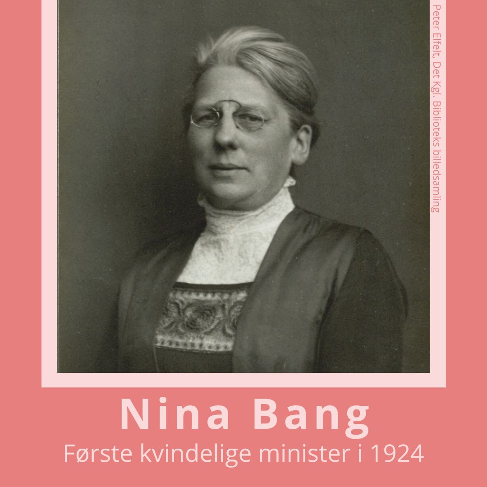
I morgen er det 100 år siden, at Danmark og verden fik sin første kvindelige minister i en demokratisk valgt regering. Hun hed Nina Bang (1866-1928) og hun blev udnævnt til undervisningsminister i Danmarks første arbejderregering under ledelse af Thorvald Stauning i 1924.
Nina Bang var uddannet historiker og arbejdede fra 1898 som journalist på avisen Social-Demokraten. Hendes politiske karriere startede i 1903, da hun som eneste kvinde blev medlem af Socialdemokratiets hovedbestyrelse. Fra 1913-1917 var hun medlem af Københavns Borgerrepræsentation og ved det første valg til Rigsdagen i 1918, hvor kvinder både kunne stemme og stille op, blev hun valgt ind i Landstinget, hvor hun sad frem til sin død i 1928.
Nina Bang var bl.a. optaget af forholdet mellem køn og klasse. I 1919, hvor et lovforslag om at give kvinder adgang til offentlige embeder var til forhandling i Landstinget, sagde hun bl.a. følgende:
”De højere Klassers erhvervende Kvinder har hidtil ikke følt Byrderne ved Erhvervet i den Form, som Underklassens Kvinder har følt dem. De har ikke behøvet at passe deres Hjem, naar de kom sent hjem om Aftenen, og de har ikke maattet vide deres Børn gaa alene for Lud og koldt Vand. Naar de hidtil har kunnet undgaa det, kan de takke Arbejderklassens Kvinder derfor, Arbejderklassens Kvinder har nemlig paataget sig det Arbejde i Hjemmene, uden hvilket de højere Klassers Kvinder ikke kunde være erhvervende.”
Du kan læse hele Nina Bangs indlæg på www.dansketaler.dk. Vi har lagt et link i bio.
Nina Bang var minister fra 1924-1926. Næste kvindelige minister var socialdemokraten Fanny Jensen, som var minister fra 1947-1950.
#jubilæer #førstekvindeligeminister #ninabang

Hej! Jeg hedder Emilie og jeg laver ⚡️take over ⚡️ her i dag om mit speciale: ”“Nu er jeg blevet bevidstgjort, og det giver fandme perspektiv” – Bevidstgørelse som kampmiddel i 1970’ernes danske kvindebevægelse”, 2024.
For at følge begrebet bevidstgørelses indflydelse i kvinde- og Rødstrømpebevægelsen analyserer jeg ”Kvindernes bog” fra 1972 og 1979 af kunstneren Jytte Rex og pjeceserien ”En serie af grundhæfter til brug i kvindekampen”, der blev produceret af grupper med direkte tilknytning til Rødstrømpebevægelsen i årene 1975-1978.
Få mere at vide om, hvad jeg fandt ud af i mine stories og/eller læs specialet. Du finder et link til det i bio.
Farvebillederne i stories er hentet fra filmen ”Femø 1971” af Vibeke Pedersen og de sort-hvide fra Janne Gieses film “Kvindefestival ’74”.
#specialer #Rødstrømpebevægelsen #bevidstgørelse #basisgruppe #kvindebevægelsen #JytteRex

Selv om vestimulerende medicin bruges i 30-90 % af alle fødsler verden over, er der meget lidt viden om, hvorvidt medicinen overhovedet er nødvendig. Det fortæller læge Nanna Maaløe, som sammen med en række andre forskere, har kigget nærmere på brugen af medicinen.
Deres forskning viser, at der ser ud til at være stor forskel på hvad ”fødende kvinder egentlig har behov for og den behandling, som de modtager”.
Der er nemlig en tendens til sætte fødsler kunstigt i gang hurtigere end nødvendigt. En af forklaringerne kan være, at hospitalerne på grund af travlhed har brug for at styre, hvor lang tid en fødsel tager. Og faktum er da også, at brugen af vestimulerende medicin forkorter fødslens længde.
En anden årsag kan være, at de kliniske retningslinjer for, hvor lang tid en førstegangsfødsel tager, ikke er blevet opdateret med den nyeste forskning. Den viser nemlig, at førstegangsfødendes gennemsnitlige fødsel tager væsentlig længere tid end anført i retningslinjerne.
Derudover har der være meget lidt eller næsten intet fokus på medicinens evt. bivirkninger.
Du kan læse mere i artiklen ”Fødende kvinder overbehandles, og det har store konsekvenser” på Det sundhedsvidenskabelige Fakultets hjemmeside. I artiklen finder du linket til den videnskabelige artikel “Inconsistent definitions of labour progress and over-medicalisation cause unnecessary harm during birth”, som er publiceret i British Medical Journal. Vi har lagt et link i bio.
#fødsler #overbehandling #forskningsartikler
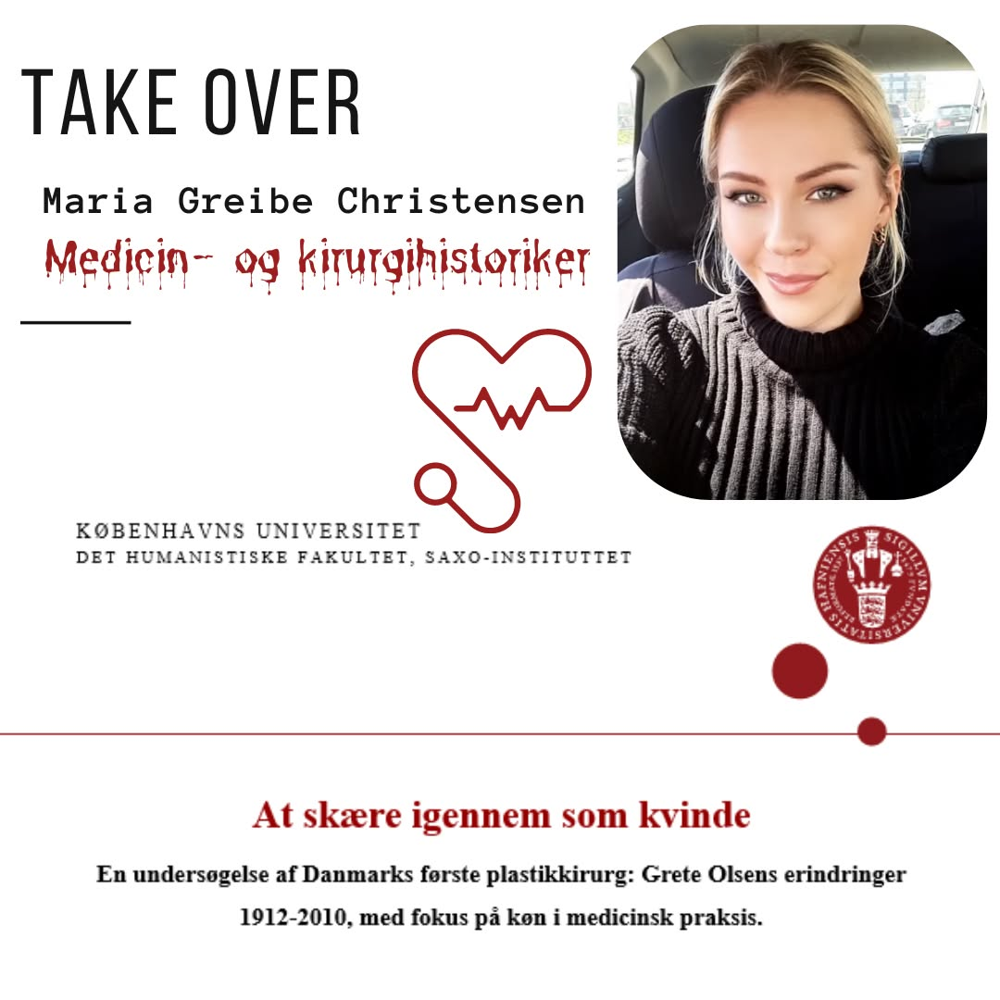
Hej alle sammen! Jeg hedder Maria Greibe Christensen, og jeg har i dag fået æren af at lave en takeover her på profilen.
Jeg er historiker med specialisering inden for medicin- og kirurgihistorie. Jeg har skrevet speciale om Danmarks første plastikkirurg, med fokus på køn i medicinsk praksis. 💉🩸🥼
Jeg glæder mig til at indvie jer' i min forskning om en hel exceptionel kvinde - en hidtil overset pioner, der aldrig gav op, og som måtte kæmpe et kvart århundrede for at opnå anerkendelse i en historisk mandsdomineret branche! 🥼
Læs den vilde historie om Grete Olsen (1912-2010) - Danmarks første plastikkirurg og verdensmester i fægtning, og hendes utrættelige kamp mod kønsdiskrimination, fordomme og foragt - som vil efterlade dig opslugt af hendes dedikation og vilje til at bane vejen for andre! 💪 For den mandlige kirurgiske stand, havde jo ikke brug for en ''sypige''.... 💉
#takeover

*** Heather Love har desværre været nødt til at melde afbud. I stedet for kommer historiker og studielektor Peter Edelberg og fortæller om "Homo-bevægelserne i Danmark i det 20. århundrede" ***
Kom og vær med, når vi markerer 50-året for Lesbisk Bevægelse på universitetsbiblioteket Søndre Campus d. 19. marts kl. 16-18.
Vi får bl.a. besøg af historiker Peter Edelberg som vil fortælle om homo-bevægelserne i Danmark i det 20. århundrede.
Forfatter til bogen ”Lesbisk kraft er pedalkraft”, 2021, Katrine Manfred Swets kommer og fortæller om stiftelsen af Lesbisk Bevægelse og bevægelsens mange aktiviteter fra 1974-1996.
Til sidst får vi besøg af Lotte Eriksen, som var medstifter af Lesbisk Bevægelse og Jytte Larsen, som var med til at starte Kvindehøjskolen i Visby.
Efterfølgende vil der være mulighed for at snakke med hinanden og nyde en snack.
Alle er velkomne og der er ingen tilmelding.
Arrangementet afholdes på dansk.
Arrangører: Det Kgl. Biblioteks kønsforskningsteam i samarbejde med studielektor og historiker Peter Edelberg, SAXO-instituttet, Københavns Universitet.
#jubilæer #Lesbiskbevægelse #event
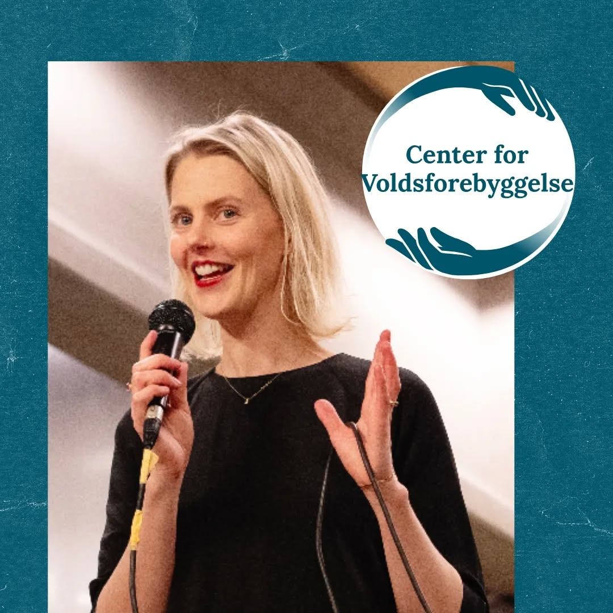
Hej! Mit navn er Ditte Bjerregaard og i dag laver jeg en takeover her på profilen.
Jeg er direktør for @center_for_voldsforebyggelse , og skal i dag tage jer igennem resultaterne af vores seneste minianalyse af femicides i 2022.
Som stifter af Center For Voldsforebyggelse (CFV) har jeg siden 2019 arbejdet med voldsforebyggelse. Desværre er vi ikke nået særlig langt i udviklingen i Danmark.
Derfor har vi i CFV lanceret et @femicide_watch, der kortlægger femicides i Danmark. Vores seneste analyse “En mini-analyse af femicides 2022” som er udgivet i 2023, afslører dybere indsigt i femicides fra 2022. Blandt andet at mange gerningsmænd allerede var kendt af myndigheder. Det betyder at drabene i nogle tilfælde kunne have været forebygget.
Følg med i stories for at lære mere om, hvad femicide er, og hvordan vi kan forebygge det.
#femicides #talomvold #videnomvold #femicidewatch

Kom og bliv inspireret og opdateret på ny viden om maskulinitet, når nye kandidater fra RUC og KU præsenterer deres specialer.
Du kommer til at høre om domestisk maskulinitet i 1950’ernes dameblade, maskulinitet og seksualitet i den danske byggebranche og hvordan en maskulin arbejdsidentitet påvirker den danske handelsflåde.
De tre specialer der præsenteres er:
“En Følsom Patriark?: Domestisk maskulinitet i Illustreret Familie Journal anno 1955” af Andreas Schmidt Eriksen
“’I denne her skole må man godt ryge’ - En undersøgelse af køn, krop og klasse blandt håndværkere i den danske byggebranche” af Anders Stensgaard Sørensen og Coco Falk Krusbæk
“Skibet er ladet med mænd: en antropologisk undersøgelse af kønnede normer i den danske handelsflåde” af Sofie Christine Rahbek Bang, Anna-Oline Grarup Hertz og Freia Buus Bille.
Alle er velkomne.
Hvornår:
Torsdag d. 29 februar fra 16-18.
Hvor:
Det Samfundsvidenskabelige Fakultetsbibliotek, Gothersgade 140, i Auditoriet på 1. sal.

Sådan skriver Sine Plambech i sin bog Global Sex: Hvad sexarbejdere ved om kærlighed og kapitalisme, 2023.
Bogen er kvindernes historie, som mødre, som arbejdere, som døtre, som hele mennesker. Deres historier væves ind i Plambechs egen familie- og livshistorie.
Sommai, Lom, Becky og Vivan. De er alle migranter, som i perioder af deres liv har levet af sexarbejde. De har det til fælles, at de vil gøre alt for at skabe et bedre liv for deres børn og deres familie.
En af de vigtigste pointer i bogen er at kvinderne godt ved, hvad de gik ind til, da de valgte at rejse fra deres hjem for at blive sexarbejdere. Det betyder ikke, at de altid har været klar over alle detaljerne, men som Becky forklarer: ”Jeg tror ikke på trafficking. Det er et ord, de hvide har opfundet. At rejse til Europa er en aftale mellem parterne: kvinden, hendes familie og hendes madam. Vi forhandler os til en aftale som alle partnere accepterer.”
Sexarbejde bliver en prisme, der reflekterer en verden i forandring og følger den globale kapitalismes ruter. Kvinderne leverer skarpe analyser af den globale verden, de færdes i, når de påpeger, at det kun er synd for de ikke så attraktive kvinder, som kan have svært ved at tjene nok penge til at tilbagebetale de penge, de har lånt til rejsen.
Men i en verden hvor sexarbejdere, migranter og dem, der forsøger at hjælpe, kriminaliseres, er det kun ofre som kan få hjælp og kvinderne her ser på ingen måde sig selv som ofre.
”Global Sex: Hvad sexarbejdere ved om kærlighed og kapitalisme” kan lånes på dit lokale folkebibliotek og på Det Kgl. Bibliotek (men der er nok lidt ventetid).
#sexarbejde #migration #kapitalisme #antropologi
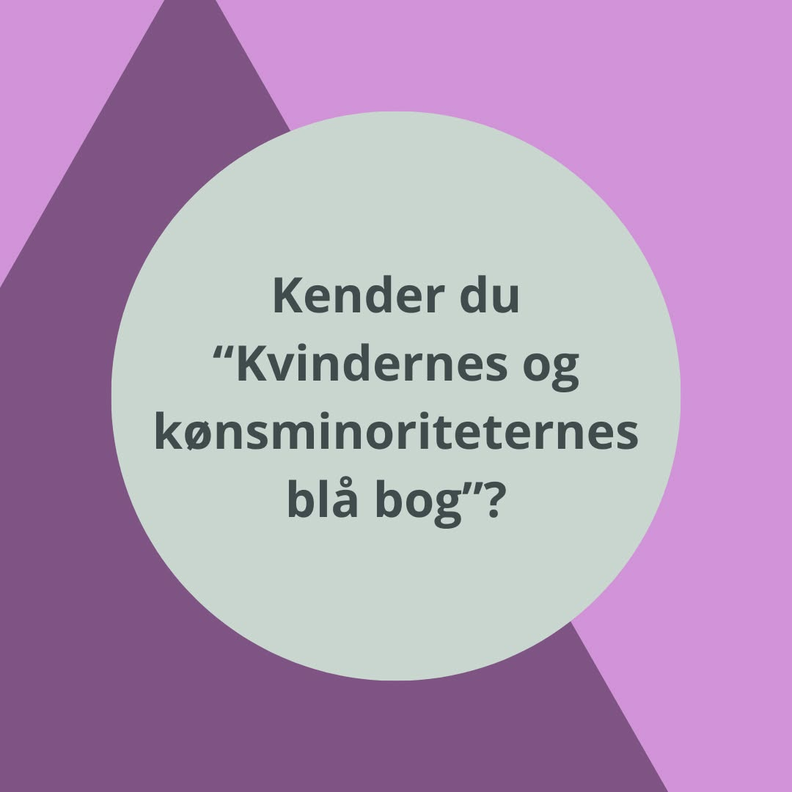
Kender du ”Kvindernes og kønsminoriteternes blå bog”?
Hvis ikke, så læs med her!
”Kvindernes og kønsminoriteternes blå bog” er skabt af Fagbevægelsens interne uddannelse ligestilling (FIU-ligestilling).
Den blå bog udkom for første gang i 2005 som ”Kvindernes blå bog” på grund af en frustration over, at kvinder hvert år udgjorde et mindretal af de optagne og omtalte personer i Kraks blå bog.
Kriteriet for at blive optaget i Kraks blå bog er, at en person skal have gjort en indsats af betydning for det danske samfund. I perioden 2011-2023 udgjorde kvinderne i Kraks blå bog i gennemsnit 21,8%. Men ser man alene på andelen af nyoptagne i 2022 og 2023 var andelen af kvinder omkring 50 %. Så der er virkelig gjort en indsats for at få flere kvinder med.
Når ”Kvindernes og kønsminoriteternes blå bog” alligevel udgives igen i en 2023/2024 udgave er det fordi FIU-ligestilling mener, at selvom Krak indførte fagfeltet ”køn og ligestilling” i 2010, er der stadig mange personer, som stadigvæk ikke er kommet med i Krak.
Derudover er der sket en udvikling inden for forskellige dagsordener, som fordrer en ny udgave af ”Kvindernes og kønsminoriteternes blå bog” – bl.a. #MeToo, mere inkluderende LGBT+ dagsordener og et skærpet fokus på Danmarks koloniale forhold.
”Kvindernes og kønsminoriteternes blå bog” bidrager på den måde til at synliggøre og give eksempler på fagpersoner inden for feltet. Den nye udgave har 20 nyoptagne – du kan se hvem gennem linket i bio.
#repræsentation #ligestilling #kønsminoriteter #blåbog

Danmark er det bedste og sikreste land at leve i for kvinder. I hvert fald ifølge forskerne bag The Women, Peace and Security Index 2023. Her er Danmark for første gang siden indekset blev skabt i 2017 røget ind som nr. 1 på listen efterfulgt af Schweiz og Sverige som nr. 2 og 3.
Indekset måler på graden af kvinders sikkerhed kombineret med graden af den økonomiske, sociale, politiske og juridiske ligestilling i 177 lande. Der bliver målt på 13 forskellige indikatorer fordelt på 3 overordnede grupper: inklusion, retfærdighed og sikkerhed. Og i modsætning til nogle af de andre ligestillingsindekser, lægges der mere vægt på kvinders sikkerhed. Og det er måske en af forklaringerne på, at Danmark sammenlagt klarer sig en lille smule bedre end de øvrige lande i målingen.
Bag undersøgelsen står de to forskningsinstitutter Georgetown Institute for Women, Peace and Security i USA og det norske PRIO, Centre on Gender, Peace and Security.
Du kan læse mere om metodikken bag indekset og se, hvordan de 176 andre lande er rangeret i rapporten “Women, Peace and Security Index 2023/24”. Vi har lagt et link i bio.
#ligestillingsindeks #ligestilling #sikkerhed

Sådan udtaler en ung norsk kvinde sig om sit eget indhold på det sociale medie OnlyFans i Astrid Rokstads speciale fra 2022. Her undersøger hun, hvordan og hvorfor unge kvinder begynder at skabe indhold på OnlyFans, hvad deres motivation er og hvad det betyder for dem.
OnlyFans er et socialt medie, hvor såkaldte ”creators” kan uploade billeder og videoer. Brugerne på platformen, kaldet ”fans”, betaler et månedligt beløb for at se en creators indhold. Platformen er særlig kendt for seksuelt indhold og porno.
De unge kvinder i specialet er alle relativt nye på OnlyFans og poster indhold flere gange om ugen. De definerer deres billeder og videoer som værende af seksuel karakter, men ikke som porno.
Rokstad argumenterer for, at det handler om en grænsedragning, som er vigtig for de unge kvinder. De poster ikke ”rigtig porno” og skaber på den måde en grænse mellem det de laver, og den porno som produceres i pornoindustrien. Det sker, fordi der er så stort et stigma omkring porno og sexarbejde generelt og kvinderne ser ikke sig selv som en del af pornoindustrien eller som sexarbejdere.
Kvindernes grænser for hvad de mener er fedt at vise på platformen varierer. For nogle handler det om ikke at vise ansigt, mens det for andre er vigtigere ikke at vise kønsdele eller vice versa.
Men kvinderne oplever også, at de personlige grænser for hvad der er fedt at lave indhold om og hvad der ikke er, rykker sig i takt med at det bliver sværere og sværere for dem at fastholde populariteten – og dermed tjene penge på deres indhold.
Pengene er nemlig den primære motivation for de unge kvinder, men hvor det for nogen er den eneste motivation, er der andre som også får et selvtillidsboost af at poste indhold på OnlyFans.
Du kan læse meget mere i specialet ”«Jeg poster ikke porno» En kvalitativ studie av unge norske kvinners digitale sexarbeid på plattformen OnlyFans” hvor du også kan læse om, hvordan kvinderne promoverer deres OnlyFans på andre platforme. Vi har lagt et link i bio.
#sexarbejde #onlyfans #porno #socialemedier #specialer

Har du brug for hjælp til at finde litteratur til en opgave, en artikel eller til dit speciale? Og leder du efter forskningslitteratur om fx køn, ligestilling eller seksualitet? Så giver vi gerne en hånd. Og det uanset om du er gymnasieelev, studerende, journalist, forsker eller noget helt femte.
Vi hjælper også gerne med at finde tilgængeligt kildemateriale om fx kvindehistorie og kvindebevægelseshistorie eller med at finde lige den kønsstatistik, du har brug for.
Skriv til os på koensforskning@kb.dk. Der er også et link i bio.
#litteratur #kønsforskning #ligestilling #seksualitet

I 1949 blev Bodil Begtrup udnævnt som dansk ambassadør på Island, og blev hermed Danmarks første kvindelige diplomat. Posten var vanskelig, da Island havde løsrevet sig fra Danmark i 1944, og islændingene generelt var negativt indstillet overfor den dansk stat.
I medierne blev der både ved Begtrups første udsendelse – og hendes senere til Schweiz og Portugal – gjort meget ud af Begtrup, trods sit køn, kunne andet end at dække et pænt bord og holde underholdende selskaber.
Den statskundskabsuddannede Begtrup havde helt sikkert mange relevante formelle diplomatiske kompetencer.
Men netop det at holde et godt selskab og være en god værtinde var faktisk en væsentligt del af Begtrups strategi for at fremelske gode relationer til sit værtsland. Hun sørgede for at invitere så mange så muligt til sammenkomster i sit hjem, og arrangerede gerne kulturelle begivenheder som fx udveksling af lærere og forfattere mellem landene.
Ved at opbygge gode uformelle relationer og konstant udvide sit netværk, genererede Begtrup en masse positiv omtale af Danmark – og gjorde det lettere at etablere mere formelle samtaler og forhandlinger, når omstændighederne krævede det. På Island var hendes arbejde fx med til at bane vejen for at de islandske sagaer kom tilbage til Island.
Begtrup brugte altså den traditionelle feminine værtinderolle som et effektivt diplomatisk redskab, der gjorde det muligt for hende at opbygge et stort netværk, og få igangsat samtaler med vigtige interessenter.
Island vandt også Bodil Begtrups hjerte, og hun valgte derfor, at hun skulle begraves på øen. Vil man besøge hendes grav må man derfor tage en tur til Skálhólt, øst for Reykjavik.
#Kvinderaadet #Bodilbegtrup #kvindehistorie #Island #informaldiplomacy #publicdiplomacy #takeover

I 1946 blev Bodil Begtrup udpeget som en del af den danske FN-delegation, som skulle repræsentere Danmarks holdninger i opbygningen af den nystiftede verdens organisation.
Bodil Begtrup fik pladsen i kraft af, at hun var formand for Kvinderådet (eller Danske Kvinders Nationalråd, som vi hed dengang), og fungerede således som repræsentant for de danske kvinder.
Kort efter udpegelsen til den danske delegation, blev Begtrup formand for den 9 kvinder store underkommission til menneskerettighedsdeklarationen, som skulle lave et notat om kvindernes forhold.
Forventningerne til underkommissionen var ikke store. Så stor var overraskelsen, da underkomiteen efter 14 dages intensivt arbejde stillede med en detaljeret rapport, der krævede ligestilling for kvinder i alle livets aspekter.
Indledningsvist var FN forsamlingen kritisk over for Kvindekommissionens arbejde– men bl.a. takket være Begtrups forhandlingsevne - lykkedes det at få ophøjet Kvindekomiteen fra underkomite til at være en selvstændig komite. Dette betød, at arbejdet for kvinders ligestilling fik en lang mere prominent plads i FN’s arbejde end først tænkt.
Begtrup var ligeledes initiativtager til, at den danske delegation i 1946 fremsatte og fik vedtaget et forslag om, at FN skulle stille krav til medlemslandene om, at de skulle sikre kvinder samme politiske rettigheder som mænd.
Nationalt brugte Begtrup det danske arbejde for ligestilling i FN til at presse på for at statsminister Knud Kristensen (V) fik igangsat en proces mod, at de grønlandske kvinder fik stemme- og valgret. En rettighed de grønlandske kvinder fik i 1948.
Selv beskrev Bodil Begtrup sit arbejde i FN’s Kvindekommissionen som sit livs mest betydningsfulde opgave.
En viderebygning på Kvindekomiteens oprindelige rapport er det 5 verdensmål om ligestilling mellem kønnene.
Du kan læse mere om, hvordan Bodil Begtrup og en række andre kvinder påvirkede udarbejdelsen af menneskerettighedsdeklarationen på FNs hjemmeside. Du finder et link i bio.
#Kvinderaadet #bodilbegtrup #menneskerettighederne #FN #ligestilling #takeover

Når man fokuserer biografisk på kvindebevægelsen store skikkelser - fx Bodil Begtrup – er der en risiko for, at det bliver en fortælling om et helt særligt individ, der takket været sine ekstraordinære evner og mod, skabte forandring.
Men sandheden er, at meget få mennesker formår at skabe forandring alene. Det gjorde Bodil Begtrup heller ikke. Begtrups store succes kom af, at hun prioriterede at samarbejde, at skabe dialog mellem mennesker og havde modet til at give både succes og arbejde videre til andre.
Begtrups prioriterede altid at netværke og samarbejde med så mange som muligt. Hun var ikke bange for at opsøge mennesker med magt og bede dem lytte – hun henvendte sig gerne direkte til statsministeren, kongehuset og formanden for FN’s menneskerettighedskommission Eleanor Roosevelt.
Omvendt var hun heller aldrig bange for selv at give magt og ansvar videre, når det kunne gavne en sag. Netop den egenskab gjorde, at hun igennem sit liv kunne være involveret i så mange sager og institutioner.
Begtrup vidste, at forandring kræver dialog – også til tider med dem som man er mest uenige med. I sin tid som forkvinde for Kvinderådet, brugte Begtrup således mange kræfter på at forene de meget forskelligartede kvindesagsorganisationer, og få dem til at stå sammen. I sine erindringer beskrev hun selv dette som den mest krævende diplomati-opgave i sin karriere.
Er du interesseret i at læse Bodil Begtrups erindringer, kan de lånes på de fleste biblioteker.
Begtrup, Bodil: ”Kvinde i et verdenssamfund – erindringer af Bodil Begtrup”, Centrum 1986.
Billede: Bodil Begtrup i samtale med Lis Groes til Danske Kvinder Nationalråds jubilæum 1949, gengivet med tilladelse fra Arbejderbevægelsens Bibliotek og Arkiv.
#Kvinderaadet #bodilbegtrup #kvindehistorie #kvindebevægelsen #forandring #takeover

Zan, zendegi, azadi!
Woman, Life, Freedom!
Kvinde, Liv, Frihed!
Det er nok de færreste, der ikke har hørt det kampråb igennem det år, der er gået siden drabet på Jina Masha Amini i det iranske moralpolitis varetægt. Et drab, der ledte til den første landsdækkende oprørsbevægelse i Iran, som var styret af kvinder og som havde kvinders rettigheder i centrum.
Men hvilken historie skriver protesterne sig ind i? Og hvordan er situationen i dag mere end et år efter?
Det fortæller Iran-forsker Rasmus Christian Elling om i afsnittet Irans historie i Gry Jexens podcast-serie @kvinde_kend_din_historie
Sammen tager de os igennem Irans historie med fokus på de iranske kvinder. I et land hvor revolutionerne har været næsten kontinuerlige siden 1920’erne. Hvor kvinders rettigheder er blevet tilsidesat til fordel for kampen mod imperialismen samtidig med at der blandt de kurdiske iranere længe har været et stærkt fokus på feminisme.
Jina Masha Amini voksede op i en brydningstid, hvor en ny generation væltede ind på universiteterne, som ønskede forandring og som skulle leve med USAs sanktioner mod Iran. Hendes generation er blevet kaldt en protestgeneration.
Det er den protestgeneration, der gik på gaden efter drabet på Jina Masha Amini. Der er tale om kvinder ned til 13-års-alderen, som brænder deres tørklæder og filmer sig selv i offentlige rum, mens de danser med udslået håret.
Der er sket et skift fra en protestbevægelse til en protestkultur og de unge iranske kvinderne leder vejen.
Lyt med og forstå meget mere om de Iranske kvinders kamp for frihed - vi har lagt et link i bio.
#kvindelivfrihed #womanlifefreedom #iran #jinamashaamini

I marts afleverede jeg mit speciale i antropologi, som jeg har kaldt: ”Song of the Modern Sirene – Taboo, motions & the bodily experience of loving a person with porn addiction”.
Jeg har længe været optaget af porno som socialt fænomen. Selvom nærmest alle er i berøring med porno, er det et emne mange har svært ved at tale om. Parforholdet finder jeg særligt interessant, da det er her porno især får mulighed for at trænge gennem den fine hinde fra det private og ind i det intersubjektive – det delte.
Men hvad sker der når porno ikke bare påvirker, men overtager parforholdet? Det er netop dét jeg har undersøgt på et tre måneder langt feltarbejde i USA - og selvfølgelig i mit speciale.
Følg med i stories for at se hvad jeg fandt ud af.

Jeg hedder Sarah Hodde Friland og er nyuddannet historiker. I den forbindelse har jeg fået fornøjelsen af at være takeover her på profilen for at fortælle om mit speciale, som har titlen ”Harmoniske familier og lykkelige liv: Foreningen for Familieplanlægning 1956-1974”.
Jeg håber, at du vil følge med i stories og høre lidt om Sex & Samfunds forgænger, se nogle eksempler på materiale, jeg har analyseret og få nogle af de vigtigste og mest interessante pointer. Hvis du har lyst, kan du læse mit speciale online. Du kan finde det i Det Kgl. Biblioteks database og jeg har også lagt et direkte link til det i stories.
Du må også meget gerne kontakte mig på @shoddef, hvis du har spørgsmål. God fornøjelse.

Har du brug for hjælp til at finde litteratur til en opgave, en artikel eller til dit speciale? Og leder du efter forskningslitteratur om fx køn, ligestilling eller seksualitet? Så giver vi gerne en hånd. Og det uanset om du er gymnasieelev, studerende, journalist, forsker eller noget helt femte.
Vi hjælper også gerne med at finde tilgængeligt kildemateriale om fx kvindehistorie og kvindebevægelseshistorie eller med at finde lige den kønsstatistik, du har brug for.
Skriv til os på koensforskning@kb.dk

”Det var ligesom at have knive inde i mig. Det føltes som et overgreb. At staten tog min mødom.”
Naja Lyberth er 14 år gammel, da hun får opsat en spiral af en dansk læge. Uden hverken samtykke eller vejledning. Det samme gør tusindvis af andre fødedygtige kvinder og piger i Grønland i slutningen af 1960’erne indtil midt i 70’erne.
Sommerens sidste podcast-anbefaling er en grusom og vigtig historie om "Spiralkampagnen", som blev sat i værk i Grønland af den danske stat. To danske journalister samler vidnesbyrd fra flere grønlandske kvinder, der var udsat for spiral-indgrebet i 60’erne og 70’erne. De forsøger at finde ud af hvad omfanget af disse indgreb har været, og hvordan det overhovedet har kunnet lade sig gøre, men jo mere de finder ud af, desto flere spørgsmål rejser der sig. Podcasten sætter også fokus på de grønlandske kvinders oplevelser og de efterfølgende indvirkninger, det har haft på deres liv
Siden podcastens udgivelse, er Danmark og Grønland i september 2022 blevet enige om et kommissorium, der sætter rammerne for en uvildig udredning af ”spiral-sagen” og andre typer af svangerskabsforbyggelse frem til 1991. Arbejdet forventes færdigt i 2025.
Vi har lagt et link til podcasten i bio og i highlights under Sommerpodcasts.
#podcast #spiralkampagnen #grønland #overgreb

Kan man kæmpe for ligestilling uden at kalde sig selv for feminist? Og er den danske kvindekamp for alle?
Dét bliver der diskuteret i dagens podcastanbefaling fra Banat, en samtalepodcast hvor journalist Filiz Yasar inviterer ”de bedste banats (arabisk slang for ’piger’) med den helt rigtige attitude til en omgang bad bitches therapy”.
Hos Banat bliver der diskuteret små og store samfundstematikker – alt fra reality-tv til transgenerationelle traumer. Fælles for flere af seriens afsnit er, at emnerne tager udgangspunkt i den minoritetsetniske kvindes oplevelser, som er med til at nuancere begreber som bl.a. feminisme og ”queerness”
Vi anbefaler afsnittet ”Kvinde kend din kampdag”, hvor Yasar har besøg af Marianna Meaidi, sundhedsinformatiker og bestyrelsesmedlem hos Mino Ung København, generalsekretær hos Mino Danmark, Sama Sadat Ben Haddo samt dokumentarist Jennifer Tonndorff.
Som optakt til Kvindernes Kampdag taler de om hvad ”kvindekampen” betyder for dem, og hvorfor det kan være svært for minoritetsetniske kvinder at identificere sig med ”den hvide feminisme”. For de fire kvinder er minoritetsfeminismen nemlig forankret i et intersektionelt perspektiv, hvor diskrimination pga. fx etnicitet, religion, alder osv. rangerer på lige fod med køn. En tilgang, som måske endnu ikke er slået helt igennem i den danske mainstreamfeminisme?
Vi har lagt et link i bio og i highlights under Sommerpodcasts.
#kvinderneskampdag #kvindekamp #feminisme #intersektionelfeminisme #podcast
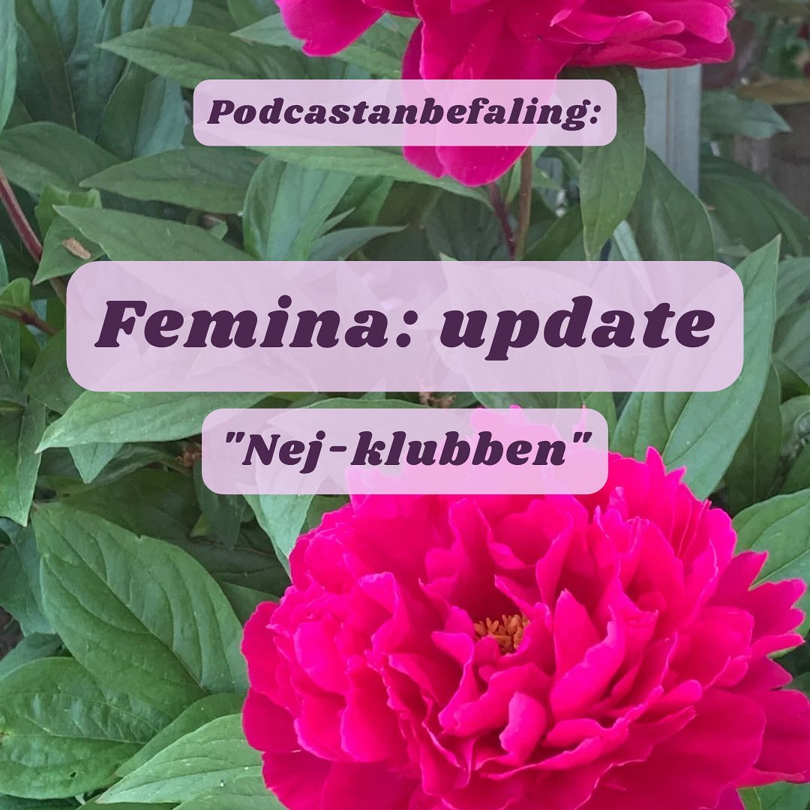
Denne podcast sætter fokus på fordelingen af arbejdsopgaver mellem kvinder og mænd på den enkelte arbejdsplads. Selvom arbejdsbeskrivelserne er ens for begge køn, kommer kvinder oftere end mænd til at stå for hovedparten af de ikke karrierefremmende arbejdsopgaver. Det er skidt både for karrieren og lønsedlen.
Det konkluderer Lise Vesterlund i podcasten ”Nej-klubben”. Her er hun fortaler for, at kvinder skal begynde at sige nej til arbejdsopgaver, som ikke er direkte karrierefremmende. Både for egen og for ligestillingens skyld.
I podcasten kan du høre mere om, hvad det er for opgaver, som typisk lander på kvindernes bord og tips til, hvordan man kan slippe for dem.
Derudover kan du høre om, hvordan Lise Vesterlund, der er professor i økonomi, selv blev opmærksom på uligheden og sammen med en række kvindelige kollegaer og venner gav sig til at undersøge fænomenet videnskabeligt. Resultatet er publiceret i bogen “The No Club: Putting a Stop to Women's Dead-End Work”, 2022. I 2023 blev bogen oversat til dansk med titlen: ”Nej-klubben: et opgør med kvinders karriere-hæmmende arbejde”, 2023. Begge udgaver kan lånes på Det Kgl. Bibliotek.
Podcasten er produceret af Femina, juni 2023. Vi har lagt et link i bio og i highlights under Sommerpodcasts.
#kønsarbejdsdeling #karriere #arbejdspladser #ligestilling

Er du vild med gamle kærlighedsbreve? Og nysgerrig på, hvordan elskende queerpersoner italesatte deres begær og kærlighed for mere end 100 år siden? Så skal du lytte til podcasten ”Queerbreve”. Her oplæser danske og svenske skuespillere kærlighedsbreve fra kendte mænd og kvinder fra slutningen af 1800-tallet og begyndelsen af 1900-tallet.
Der er bl.a. breve fra forfatterne H. C. Andersen, Herman Bang, Tove Jansson og Selma Lagerlöf og fra Lili Elbe, som var den første danske transkønnede kvinde, som fik en kønsbekræftende operation i 1930.
Podcasten ”Queerbreve” er i 2 afsnit og består af liveindspilninger fra arrangementet Breve i Diamanten: Queerbreve, som blev produceret i samarbejde med LGBT+ Danmark. Vi har lagt et link i bio og i highlights under Sommerpodcasts.
#queer #kærlighed #breve #podcast

@kh_underlivet er skabt af Emma Libner. Hun er kropsaktivist, underlivsinfluencer og udforsker alt ved underlivet – det sjove, det spændende og det frustrerende.
Denne uges anbefaling er afsnit nummer ét i hendes podcastserie, hvor hun har inviteret komikeren Natasha Brock til en samtale om menstruation og humor. Natasha Brock har lavet et stand-up show om menstruation og mener, at hvis vi kan grine af den, så kan vi også aftabuisere den.
Deres samtale drejer sig om de tusindvis af slangord, som findes for fænomenet menstruation over hele verden, om ”narkostrategier” for at gemme menstruationsprodukter på vej til toilettet og hvordan man undgår, at menstruation bliver til noget mystisk, som vi ikke tør snakke med nogen om.
Afsnittet kan høres gratis på e-reolen, som du kan tilgå igennem dit lokale folkebibliotek – og så får du også samtidig adgang til en masse dejlige lydbøger. Vi har lagt et link i bio og i highlights, men podcasten kan også findes på flere andre platforme.
#menstruation #underlivet #podcast #humor

Har du hørt om den danske kvindefredsbevægelse, der ryddede forsiderne i 1980’erne? Og som skabte den første kvindefredslejr på dansk jord?
”Røre ved køkkenbordene” er første del af podcasten ”Fredskvinder”, som fortæller historien om den danske kvindefredslejr i Ravnstrup nær Viborg, der blev etableret i 1984. Fredslejren var en konkret protest mod den nyligt opførte Nato-bunker i Ravnstrup, som offentligheden ikke måtte få noget at vide om, hvad skulle bruges til. Protesten var samtidig en del af en større international protest mod den massive atomoprustning og krigsretorik, som fandt sted under den kolde krig i 1980’erne.
Det var angsten for en nært forestående atomkrig og uvisheden om, hvorvidt der var placeret atomvåben på dansk jord, der fik kvinderne til at forlade deres job og familier og slå sig ned i Ravnstruplejren.
Inspirationen til den danske lejr kom fra den engelske kvindefredslejr, der blev etableret i 1981 ved raketbasen Grenham Common. Her protesterede tusindvis af kvinder i årevis mod tilstedeværelsen af atomare våben.
I podcasten fortæller en række af de kvinder, som boede i Ravnstruplejren om deres aktioner, livet i lejren og deres forhold til de lokale beboere, til militæret og til politiet.
Podcasten ”Fredskvinder” består af 4 afsnit og er produceret af Danmarks Radio og tilrettelagt af Lea Linstow. Vi har lagt et link i bio og i highlights under Sommerpodcasts.
#kvindefredslejr #fredsbevægelser #Danmark #1980erne #podcast

@s3xtingetpodcast er en podcastserie om, ja, sex. Hvordan sex er alle vegne, samtidig med at der også er meget, som vedrører sex og seksualitet, som vi ikke taler om. ”Sex er godt, sundt og sex er politisk” siger værten Sarah Grunszow Bærentzen i introduktionen. I hver episode inviterer hun en ny gæst i studiet for at tale om emner relateret til seksualitet, ligestilling, porno og utroskab.
I episoden ”Orgasmegab – er penis ikke en magisk tryllestav?” taler Sarah Gruszow Bærentzen med jordemor Camilla Härtel om orgasmegabet – altså at mænd kommer næsten dobbelt så ofte som kvinder.
Deres samtale tager udgangspunkt i Camilla Härtels arbejde og Projekt Sexus fra 2019, hvor der blev indsamlet viden om 62.000 danskeres sexliv. Samtalen stiller spørgsmål til, hvorvidt orgasmegabet kan lukkes via kvoter og hvordan uligheden i soveværelset hænger sammen med uligheden i resten af samfundet. For som de to kvinder påpeger drejer orgasmegabet sig ikke kun om det intime og private, det hænger også sammen med folkesundheden og ligestillingen.
Hør episoden ”Orgasmegab – er penis ikke en magisk tryllestav?” som er en del af podcastserien Sextinget. Vi har lagt et link i bio og i highlights under Sommerpodcasts, men podcasten kan også findes der hvor du normalt finder podcasts.
#orgasmegab #seksuelligestilling #ligestilling #sex

Sommertid er podcasttid. Der findes nemlig næsten ikke noget bedre end at sidde med fødderne i sandet eller ligge i hængekøjen med en god podcast i ørerne 🎧
Derfor vil vi hen over sommeren dele forskellige danske podcasts med dig. Vi har udvalgt en række podcasts fra det danske podcastlandskab, som alle handler om køn, seksualitet og ligestilling. Nogen kender du måske allerede, men forhåbentligt er der også lidt ny inspiration.
Alle podcastanbefalingerne bliver lagt op i bio og i highlights.
Følg med fra næste uge hvor vi deler den første anbefaling.
#sommerpodcasts #ligestilling #seksualitet #køn #sommer

Hej Alle. Jeg hedder Bushra Hanif og skriver en samfinansieret Ph.D mellem Dansk Kvindesamfunds Krisecenter og RUC. Mit hovedtema er ”Vold mod kvinder”.
Titlen på mit projekt hedder: Social kontrol, kønsnormer og modstand – Etniske minoritetskvinders erfaringer med og modstand imod social kontrol. Med projektet dykker jeg ned i forskellige former for modstand, voldsramte kvinder udviser overfor den vold, de har været udsat for.
Du kan læse meget mere om min forskning i stories og følge @bushrahanifphd hvor jeg deler mine fund.
#voldmodkvinder #phd #socialkontrol #modstand

Det skriver Rikke Ulvedahl Carlsen i artiklen ”En tomboy og et følsomt drengebarn: Kønsudtrykket i Astrid Lindgrens fantastiske fortællinger”, 2023. Her analyserer hun bøgerne ”Brødrene Løvehjerte”, 1973 og ”Ronja Røverdatter”, 1981 af Astrid Lindgren ud fra en queerteoretisk tilgang.
Ifølge Carlsen udtrykker hovedpersonerne i de to bøger på hver deres måde et kønsudtryk, som overskrider en traditionel binær kønsidentitet.
Ronja ved at være en tomboy, dvs. drengepige, som overskrider de traditionelle kønsroller ved at performe ”en naturlig og ubesværet maskulinitet i en pigekrop”. Karl (også kaldet Skorpan) ved at være et følsomt drengebarn, der balancerer ”en vanskelig forbindelse mellem følsomhed og maskulinitet”.
Hos begge figurer spiller det biologiske køn (hhv. pige og dreng) ingen afgørende rolle. Hverken Ronja eller Karl fornægter deres biologi, men tilskriver den heller ikke nogen afgørende social betydning.
På den måde har Astrid Lindgreen skabt et litterært børneunivers, hvor børn ikke automatisk proppes ned i de traditionelle kønsrollekasser.
Du kan dykke ned i Carlsens analyse og få en mere detaljeret gennemgang og analyse af de to værker ved at gå til bio. Her har jeg lagt et link til artiklen, som er trykt i tidsskriftet ”Aktualitet - Litteratur, Kultur og Medier”, nr. 1, 2023.
#astridlindgren #børnebøger #kønsroller #queer

Det er én af hovedpointerne i Theresa Dyrvig Henriksen og Margaretha Järvinen’s artikel, som netop er blevet publiceret.
Artiklen er baseret på kvalitative interviews med tidligere danske sexsælgere. Den viser, hvordan sexsælgernes fortælling om dem selv ændrer sig, når de ikke længere sælger sex.
Forfatterne argumenterer for, at det i høj grad hænger sammen med den stigmatisering, der findes af mennesker der sælger sex i den offentlige samtale.
Henriksen og Järvinen viser, hvordan sexsælgernes fortællinger om deres sexsalg ændrer sig i takt med, hvor de befinder sig i deres liv.
I begyndelsen oplever sexsælgerne en stor følelse af frihed pga. af de mange penge, de tjener. De fortæller om en følelse af magt, selvbekræftelse og spænding.
Men når de stopper, ændres måden de taler om deres oplevelser med at sælge sex sig. Friheden afløses af bekymringer om forhandlinger af prisen med kunderne og den tid de bruger på at vente på kunder. Spændingen afløses af en fortælling om negativ risikovillighed.
Stigmaet omkring det at sælge sex er så stærkt, at det er vanskeligt for de tidligere sexsælgere at se tilbage på deres sexsalg som andet end negativt. På den måde tilpasses deres fortællinger den dominerende diskurs om salg af sex – og de ender med at se deres sexsalg i et negativt lys.
Du kan læse de konkrete eksempler på tidligere sexsælgeres fortællinger i artiklen ”’Looking back, I don’t quite recognise myself’: Narratives of the past in prostitution”. Artiklen er en del af Therese Dyrvig Henriksen’s ph.d. ”On the complexities of sex selling: Social Background, sexual scripts, and social identity”.
Jeg har lagt et link i bio.
#sexsalg #arbejdsmiljø #kvalitativeinterviews #sexarbejde

Til dagligt studerer jeg på Kunstakademiet i Bergen. Tidligere har jeg læst en bachelor i antropologi ved Københavns Universitet.
I min kunst såvel som i antropologien har jeg en interesse for feministisk historie og praksis.
@abortfortaellinger er for mig et feministisk aktivistisk projekt, et kollektivt værk båret af personlige oplevelser og følelser.
Jeg har en interesse i at insistere på det sårbare og omsorgsfulde, og skabe rum for det. Bidragene i bogen er rørende, ærlige, smukke og vrede, og præsenterer et lille hjørne af abortens historie.
Se mere om min proces med projektet i stories.

Det er en af konklusionerne i Amalie Lundberg Therkelsens speciale, der baseret på 4,5 måneders etnografisk feltarbejde i Vietnam analyserer vietnamesiske kvinders perspektiver på køn, familie og skilsmisse.
I specialet fokuserer Therkelsen på, hvordan kvinderne oplever skilsmisse i et samfund, hvor det anses som amoralsk og som et svigt af børnene.
Igennem etnografiske cases viser hun, hvordan det at have børn eller ikke at have børn har stor betydning for kvindernes oplevelser både før, under og efter skilsmissen.
Beslutningen om at blive skilt beskrives af kvinderne som fyldt med ambivalens og kompleksitet. For kvinder med børn blev beslutningen yderligere kompliceret, da børnene på én og samme tid var motivationen til at få en skilsmisse, men også for ikke at få den.
Derudover oplever kvinder med børn, hvordan skilsmissens konsekvenser trækker lange tråde efter skilsmissen, fordi flere af kvinderne som en konsekvens mister forældremyndigheden. Kvinder uden børn anser i højere grad skilsmissen som en begivenhed i fortiden.
Therkelsen argumenterer altså for, at moderskabet har en afgørende effekt på de vietnamesiske kvinders oplevelse af skilsmisse. Men også at kvinderne igennem skilsmissen ændrer deres livssyn, og efterfølgende er mindre bekymrede for andres fordømmelse.
Læs meget mere om de vietnamesiske kvinders oplevelse af skilsmisse i specialet ”Dilemmas of Divorce – Understanding Women’s Experiences og Undergoing Divorce in Huế, Vietnam” 2022. Jeg har lagt et link i bio.
#skilsmisse #moderskab #etnografi #vietnam

Op til vedtagelsen af loven, der gav kvinder adgang til at blive præster i Folkekirken, blev menighedsrådene spurgt om deres syn på kvindelige præster. Det samme gjorde hele befolkningen i form af en Gallupmåling. Begge undersøgelser blev foretaget i begyndelsen af 1947 kort tid før Rigsdagens vedtagelse af loven i maj 1947.
Mens det kun var knap hver fjerde af alle menighedsrådene, der gik ind for kvindelige præster, var der et flertal i befolkningen for lovændringen.
43 % af menighedsrådene var klart imod, mens det gjaldt for 32 % af befolkningen.
En betragtelig del af menighedsrådene, nemlig hvert tredje, havde undladt at svare og dermed ikke ønsket at tage stilling. Det gjaldt kun for 13 % af befolkningen.
Ifølge Gallup var der altså udbredt tilslutning i befolkningen til kvindelige præster. Og der var ikke særligt store udsving hverken i forhold til køn, alder eller klassebaggrund. Kun geografisk kunne man måle en lille forskel mellem land og by med flest modstandere i provinsen (39 %) og færrest modstandere (26 %) i København.
Jeg har lagt et link til hele Gallupmålingen fra d. 1. februar 1947 i bio. Menighedsrådsundersøgelsen har jeg fundet omtalt i aviserne i april 1947 og også i 2. behandlingen af Forslag til lov om Adgang til Præstembeder.
#kvindeligepræster75år #menighedsråd #1940’erne #meningsmålinger

Sådan stod der bl.a. i de mandlige præsters protest mod kvindelige præster i dagene op til vedtagelsen af loven, der gav kvinder adgang til prædikestolen. Loven blev vedtaget alligevel og året efter, d. 28. april, blev de første kvindelige præster ordineret. Det er nu 75 år siden.
For at markere 75-jubilæet er vi på @kvindernesreligionshistorie og @koensforskning_detkglbibliotek gået sammen om at poste en række historier om emnet.
Du vil fx kunne læse historier om kvinders glemte og skjulte roller i den tidlige kristendom, som udfordrer de gængse forestillinger om en udelukkende maskulin tradition.
Fx historier om kvindelige apostle og gemte skrifter, som er forsvundet ud af kirkehistorien.
Du vil også få historier om de danske kvinders vej til teologistudiet og forskellen på almindelige danskeres og kirkens syn på kvindelige præster i månederne op til vedtagelsen af loven.
Og svaret på hvordan det gik til, at det fortsat den dag i dag er lovligt at kønsdiskriminere ved ansættelse af præster.
Vi glæder os til at dele vores historier med dig!
#kvindeligepræster75år #kristendom #jesussomkvindeforkæmper #mariaipræsteklæder #kvindeligeapostle #ligestilling #statistikker #meningsmålinger

Det er en af konklusionerne i Astri Moksnes Barbalas ph.d. afhandling hvor hun, igennem digital etnografi, interviews og online observationer, undersøger skandinaviske feministers aktivisme på Instagram.
I en række artikler dykker hun ned i, hvordan de feministiske aktivister bruger Instagram som et værktøj til at skabe online fællesskaber og politiske forandringer i den virkelige verden udenfor platformen.
Barbala argumenterer for, at den aktivisme, der udfolder sig på Instagram er endnu mere personlig end tidligere former for aktivisme. Det skyldes, at Instagram er et personligt medie hvor feministerne, for at understrege politiske pointer, både kan dele billeder af dem selv og fortælle deres personlige historier.
Igennem Instagram kan feministerne rykke på grænserne for, hvad der er acceptabelt at diskutere i det offentlige rum. Men platformens retningslinjer opleves samtidig af mange som diffuse, og de anser platformen som højst problematisk, patriarkalsk og kapitalistisk.
Til trods for det oplever Instagram-feministerne, at der ikke findes et bedre alternativ. Og derfor bruger de meget tid at overveje deres opslag, så de kan blive på platformen.
Omsorg er et stort tema for Instagram-feministerne, både omsorg for dem selv og for det feministiske kollektiv. De giver plads til undertrykte grupper, ved at lade deres stemmer komme i fokus. Og skaber feministske ekkokamre, der fungerer som ’safe-spaces’ for at passe på dem selv og deres følgere.
Astri Moksnes Barbala’s Ph.d. afhandling ”Instagram feminism: Affect, agency, and the uses of platform technology” 2022 består af fire artikler, tre af disse kan læses online nu. Jeg har lagt links i bio.
#feminisme #instagram #phdafhandling

D. 6. oktober 2022 var det 40 år siden, at Center for kvindeforskning på Københavns Universitet kunne slå dørene op for studerende for første gang. Det bliver markeret i næste uge d. 30. marts med et stort anlagt jubilæumssymposium med bl.a. Ann Cvetkovic, Dorthe Staunæs, Karen Vallgårda og Monica Pearl som forelæsere. Arrangementet er gratis og alle er velkomne. Jeg har lagt et link i bio til arrangementet.
I begyndelsen af 1980’erne blev der etableret kvindeforskningscentre på alle de gamle universiteter. Først på Odense Universitet, så Københavns og Århus Universitet. På RUC havde man haft det tværfaglige kvindeforskningsmiljø ”Kvinder på Tværs” siden 1972.
Centrene voksede frem i en tid, hvor tværfaglighed og samarbejde på tværs blev opfattet som en kerneopgave på universiteterne og hvor de studerende stillede krav om kurser, der beskæftigede sig med kvinder.
Fx kunne man på Center for kvindeforsknings første semester efteråret 1982 tage flg. kurser:
· Den danske bondekvindes livssituation omkring århundredskiftet
· Familielivets betydning for den kvindelige psyke set i udviklingsperspektiv
· Kvinder og humor
· Myternes brug og funktion hos nogle nutidige kvindeforfattere
Center for kvindeforskning skiftede i 1990’erne navn til Center for kønsforskning, for i slutningen af 2010’erne igen at skifte navn til Center for køn, seksualitet og forskellighed.
#kvindeforskning #kvindeforskningscentre #jubilæer

”Crying selfies” eller på dansk ”grædeselfies” er blevet en ting på Instagram. Men hvordan skal fænomenet forstås? Hvad er på spil når influencere kommunikerer gråd til omverdenen? Det undersøger Katharina Culmsee og Lea Bjerrum-Bohr i deres danskspeciale ”Sårbarhed på sociale medier – kvinder og grædeselfies”, 2022.
Og ifølge dem er der en række fællestræk knyttet til grædeselfierne uanset om det er modeller eller hjemmearbejdende husmødre i Danmark eller i udlandet, der deler dem med deres følgere.
· For det første bliver grædeselfierne ofte modtaget meget positivt af følgerne og kommentarsporet kan ses som et slags affektivt arkiv fyldt med omsorgsfulde kommentarer og hjerteemojies.
· Der opstår et slags kollektivt fællesskab, hvor det er ok at græde – også i det offentlige rum.
· Der er tale om en æstetisk gråd, dvs. at selvom selfierne i sig selv er et brud med en perfekthedskultur, er grædeansigterne alligevel iscenesat på en ofte smuk og æstetisk måde.
Forfatterne konkluderer derudover, at selvom selfierne reproducerer forestillingen om den følelsesfulde kvinde, er der tale om et nybrud, fordi de insisterer på, at det er i orden at vise, at man er ked af det offentligt. Læst på den måde bliver grædeselfierne et aktivistisk statement, der viser og anerkender kvinders følelser.
Jeg har lagt et link til en onlineversion af specialet i bio.
#grædeselfies #gråd #instagram #specialer

Media Thumbnail
Det kan man læse i Nyt fra Danmarks Statistik nr. 47, der udkom op til Valentinsdag. 2022 er således året, som satte rekord både for vielser og skilsmisser.
33.054 vielser blev det til i 2022, og det er en stigning på 20% i forhold til året før. Og det højeste antal siden 2009.
Samtidig blev 2022 det år, hvor antallet af skilsmisser igen tog et dyk nedad. Kun 12.319 ægtepar valgte at gå hver til sit. Og det er det laveste antal i det her århundrede! Altså hvis vi lige ser bort fra 2019, hvor tallet var helt nede på 10.581.
Det betyder, at skilsmisseprocenten nu er nede på ca. 39 %. Dvs. at ”kun” 39 par ud af 100 bliver skilt. Det er den laveste procentsats (bortset fra 2019) siden en gang i 1970’erne. I 2010’erne lå skilsmisseprocenten flere år på over 50 %.
Hvorfor det er blevet så populært både at blive gift og vedblive at være det, giver Danmarks Statistik desværre ikke noget bud på. Er det inflationen? Boligpriserne? Ønsket om stabilitet? Eller bare at vi er blevet bedre til at realisere livslang kærlighed? Eller?
Du kan finde flere tal i Nyt fra Danmarks Statistik nr. 47 om vielser og skilsmisser. Jeg har lagt et link i bio.
#ægteskab #statistikker #skilsmisse
Creation Timestamp
Feb 15, 2023 10:21 pm
Profile visits
--
Impressions
--
Follows
--
Accounts reached
--
Saves
7
Likes
149
Comments
4

Det kan man læse i Nyt fra Danmarks Statistik nr. 47, der udkom op til Valentinsdag. 2022 er således året, som satte rekord både for vielser og skilsmisser.
33.054 vielser blev det til i 2022, og det er en stigning på 20% i forhold til året før. Og det højeste antal siden 2009.
Samtidig blev 2022 det år, hvor antallet af skilsmisser igen tog et dyk nedad. Kun 12.319 ægtepar valgte at gå hver til sit. Og det er det laveste antal i det her århundrede! Altså hvis vi lige ser bort fra 2019, hvor tallet var helt nede på 10.581.
Det betyder, at skilsmisseprocenten nu er nede på ca. 39 %. Dvs. at ”kun” 39 par ud af 100 bliver skilt. Det er den laveste procentsats (bortset fra 2019) siden en gang i 1970’erne. I 2010’erne lå skilsmisseprocenten flere år på over 50 %.
Hvorfor det er blevet så populært både at blive gift og vedblive at være det, giver Danmarks Statistik desværre ikke noget bud på. Er det inflationen? Boligpriserne? Ønsket om stabilitet? Eller bare at vi er blevet bedre til at realisere livslang kærlighed? Eller?
Du kan finde flere tal i Nyt fra Danmarks Statistik nr. 47 om vielser og skilsmisser. Jeg har lagt et link i bio.
#ægteskab #statistikker #skilsmisse

Det er nogle af konklusionerne i Josefin Persdotters afhandling, der undersøger hverdagsrutinerne i forbindelse med menstruation. Hun har bl.a. lavet en større spørgeskemaundersøgelse og interviewet menstruerende for at finde ud af, hvordan menstruationen håndteres fysisk og følelsesmæssigt.
Det der især springer i øjnene er, at mange fortsat forbinder menstruationen med noget snavset og noget skamfuldt både helt konkret og i symbolsk forstand. Og at der bruges meget tid og energi på at bekymre sig om det og håndtere det.
Mange sørger for at andre ikke ser eller kommer i berøring med deres menstruationsaffald. Mange bekymrer sig for at bløde igennem og mange bader hyppigere end normalt.
Følelsen af at være beskidt og angsten for at lugte dårligt betyder ifølge Persdotter, at menstruationen bliver en dobbelt byrde, hvor både det konkrete kropslige ubehag og følelsen af skam skal håndteres.
Derudover undersøger hun også det, hun kalder for ”menstruationsteknologier” – nemlig hygiejnebindet og menstruationskoppen. Og konkluderer at mens hygiejnebindet stadigvæk trækker på og delvist reproducerer forestillinger om det snavsede, udfordrer menstruationskoppen dem i højere grad, fordi den menstruerende kommer i tættere berøring med menstruationsblodet.
Josefin Persdotters afhandling: ”Menstrual dirt. An exploration of contemporary menstrual hygiene practices in Sweden”, 2022 kan læses online. Jeg har lagt et link i bio.
#menstruation #menstruationsteknologier #skam #snavs #hverdagsliv

Det viser en undersøgelse af 300 norske lægevidenskabelige artikler, som undersøger effekten af behandlinger for forskellige sygdomme. Her var det mindre end hver anden forskningsartikel, som overhovedet inddrog køn som variabel.
Det betyder at der i forskningen ikke tages højde for, at både sygdomsforløbet og behandlingseffekten kan tage sig forskelligt ud afhængig af patientens biologiske køn. Og det har konsekvenser for kvinders sygdomsforløb og helbredelse, hvis man tager det som en selvfølge, at den behandling som virker for mænd også virker for kvinder.
Det siger professor Eva Gerdts og giver som eksempel sin egen forskning i hjerteinfarkt. Her opdagede hun, at den standardbehandling, man normalt tilbyder ikke virkede på 20 % af kvinderne, fordi deres hjerteinfarkt ikke skyldtes forkalkede blodårer, men for højt blodtryk. Og det betød dårligere overlevelseschancer og ringere livskvalitet for dem.
Eva Gerdts foreslår derfor, at det fremover bør være et krav fra dem, der finansierer forskningen, at begge biologiske køn bliver inkluderet, når der forskes i sygdomme, som rammer begge køn.
Om resultatet af den norske forskningsundersøgelse også gælder for dansk lægevidenskabelig forskning ved jeg ikke. Jeg er ikke stødt på samme type af undersøgelse på dansk materiale.
Du kan læse interviewet med Eva Gerdts og finde et link til undersøgelsen i artiklen ”Medisinske studier ser bort fra kjønnsforskjeller” publiceret 12.1.2023 i Kildens Nyhetsmagasin. Jeg har lagt et link i bio.
#kvinderssundhed #kvindesygdomme #kønsforskelle #forskning

Sådan har de 15-19 årige piger svaret på spørgsmålet ”Du er blevet voldtaget (eller forsøgt voldtaget)? i rapporten ”Børn og unge i Danmark. Velfærd og trivsel 2022”. Rapporten baserer sig på den seneste spørgeskemaundersøgelse fra 2021, hvor over 6000 børn og unge mellem 3-19 blev spurgt om bl.a. deres trivsel.
VIVE har lavet den samme undersøgelse hvert fjerde år siden 2009. Og da det samme spørgsmål blev stillet i spørgeskemaundersøgelsen i 2017, var det kun 2 % af de 15-årige og 7 % af de 19-årige, der svarede bekræftende. Der er altså nærmest sket en fordobling af antallet af piger, der oplyser, at de har været udsat for voldtægt eller forsøgt voldtaget på 4 år.
Forskerne bag rapporten vurderer, at det stigende antal ”hænger sammen med, at der i perioden er indført en ny samtykkebaseret voldtægtsbestemmelse i straffeloven, der har ændret forståelsen af, hvornår noget er en voldtægt”.
Der var så få drenge, der svarede bekræftende på spørgsmålet, at de ikke er taget med i rapporten.
Du kan læse hele rapporten ”Børn og unge i Danmark. Velfærd og trivsel 2022”, 2022 online. De omtalte tal finder du på s. 129. Jeg har lagt et link i bio.
#voldtægt #spørgeskemaundersøgelser #kønsforskelle #unge
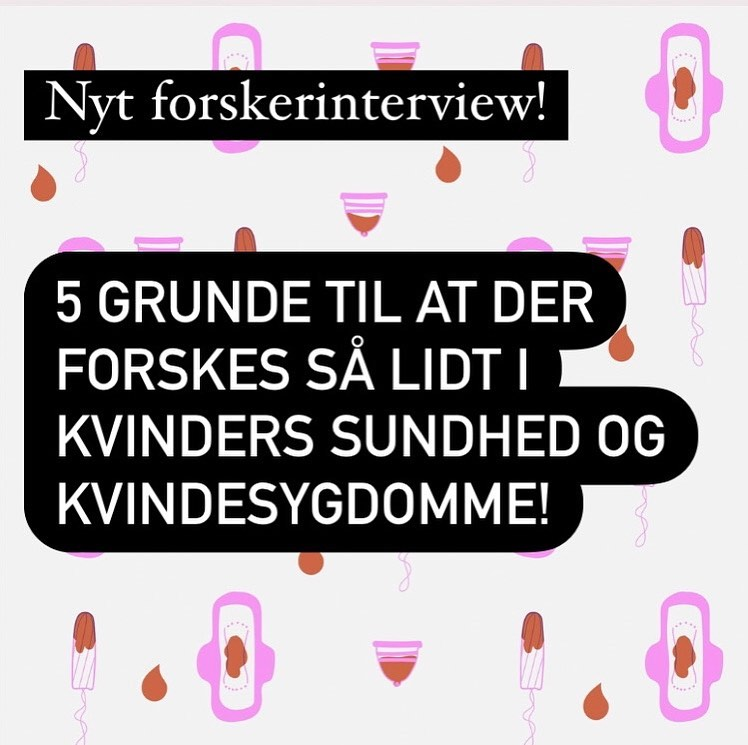
Hedvig Nordeng, som er norsk professor i samfundsfarmaci, giver i et interview til forskning.no 5 grunde til, hvorfor der stadigvæk forskes alt for lidt i kvinders sundhed.
Ifølge hende skyldes det:
1) at kvinder i den fertile alder ikke indgår i test af nye lægemidler, fordi man er bange for, at de kan blive gravide undervejs og at fosteret kan tage skade!
2) at kvinders cyklus og deres skiftende kønshormonniveauer gør testning af lægemidler vanskeligere end hvis man nøjes med at teste dem på mænd!
3) at forskning i kvindesygdomme ikke er så prestigefyldt
4) at det først er blevet klart, at kvinder får andre symptomer end mænd indenfor de seneste år.
5) at der er afsat meget få eller ingen forskningsmidler til forskning i kvindesygdomme.
Du kan læse hele interviewet med Hedvig Nordeng i artiklen ” Fem grunner til at kvinner er vanskelige å forske på”, 11.12.2022 på forskning.no. Jeg har lagt et link i bio.
#kvindesygdomme #kvinderssundhed #forskning #kvinderscyklus #kønsforskelle

Det viser et kæmpestort statistisk studie, som bl.a. professor Isabelle Augenstein fra Datalogisk Institut på Københavns Universitet har lavet. Forskerne har undersøgt 10 mill. engelsksprogede kommentarer i samtaler om mandlige og kvindelige politikere på det sociale medie ”Reddit”.
Studiet viser bl.a. at kvindelige politikere ofte kun omtales ved fornavn, mens mandlige politikere omtales med deres efternavn. Og at de kvindelige politikere bliver beskrevet med ord, der knytter sig til deres udseende, tøj eller familieforhold i modsætning til de mandlige politikere, der bliver beskrevet med ord, der knytter sig til deres profession.
Og ifølge Isabelle Augenstein kommer disse forskelle, pga. algoritmerne på nettet, til at virke forstærkende på vores generelle opfattelse af de to køn. Hun forklarer:
”Der er et feedback-loop, hvor kønsstereotyper og fordomme, som lever ude i samfundet, indgår i den digitaliserede litteratur på nettet, i webartikler og folks kommentarer på sociale medier osv. De her digitale aftryk er så med til at forme de automatiserede modeller og algoritmer, som prioriterer internettets indhold for os. Og på den måde bliver cirklen sluttet”
Selvom hovedparten af kommentarerne handler om amerikanske og engelske politikere er der også 81 danske politikere, som er nævnt i materialet. 56 mænd og 25 kvinder.
Jeg har lagt et link i bio til interviewet med Isabelle Augenstein på Københavns Universitets hjemmeside. I interviewet finder du et link til den videnskabelige artikel.
#kønsforskelle #Reddit #kvinderipolitik #kønbias

Tekla Griebel Wandall (1866 – 1940) var den første kvindelige komponist, som fik en opera opført på Det Kgl. Teater. Det skete i 1899 med operaen ”Skøn Karen”. Det fortæller musikhistoriker Thomas Husted Kirkegaard i bogen ”Tekla Griebel Wandall”, 2022, som er den første videnskabelige biografi om hende.
Selvom Tekla Griebel Wandall i sin samtid blev betragtet som en dygtig komponist, lykkedes det hende aldrig at få et egentlig gennembrud. Forklaringerne er flere. Dels var tidens musikmiljø måske ikke helt klar til at indoptage kvindelige komponister, dels havde hun ikke økonomisk mulighed for at hellige sig kompositionen på fuld tid.
Blandt datidens feminister derimod var Tekla Griebel Wandall et kendt navn. Hun stod nemlig i en årrække for at levere soundtracket til kvindebevægelsens arrangementer. Første gang i 1895 ved den store kvindeudstilling i København, hvor hun stod for at komponere musikken til balletten ”I Rosentiden”. Senere leverede hun den ene kantate efter den anden til bl.a. Kvindernes Fredsmøde i 1899, Det 2. nordiske Kvindesagsmøde i 1914 og til mødet med de sønderjyske kvinder i København i genforeningsåret 1920.
Tekla Griebel Wandall er bare en af flere ”glemte” kvinder i den danske musikhistorie. Men forskellen på hende og en del andre er, at hun selv gjorde en stor indsats for ikke at blive glemt. Ved sin død havde hun sikret sig, at alle hendes 103 kompositioner + en masse andet materiale blev afleveret til bl.a. Det Kgl. Bibliotek. Og det er dette materiale, der har gjort det muligt at skrive en større biografi om hende ligesom det vil være muligt, hvis nogen skulle få lyst, at genopføre hendes værker i dag.
Du kan låne biografien ”Tekla Griebel Wandall”, 2022 på biblioteket.
#kvindelige komponister #pionerer #teklagriebelwandall #biografier

I 1942 lavede den amerikanske hær et joboplag, hvor den efterlyste kvindelige matematikere. Det var aldrig sket før! Årsagen var, at den havde brug for personer til at udvikle og forbedre våbenproduktionen. Og da mange af de mænd, som den plejede at kunne rekruttere befandt sig på krigens slagmarker, var man nødt til at henvende sig direkte til kvinderne.
Det blev starten på et tophemmeligt eventyr for de 6 kvindelige matematikere, der blev ansat. I løbet af de følgende år udviklede de det første programmeringssprog og den første moderne supercomputer ENIAC.
Efterfølgende gik kvindernes indsats totalt i glemmebogen, og på wikipedia tilskrives opfindelsen af ENIAC en række mænd.
Det har historikeren Kathy Kleiman nu med sin bog ”Proving Ground: The Untold Story of the Six Women Who Programmed the World’s First Modern Computer”, 2022 sat sig for at ændre på. Gennem bl.a. interviews med 4 af de 6 kvinder fortælles nu for første gang den egentlige historie om frembringelsen af verdens første computer.
Jeg har lagt et link i bio til en anmeldelse af bogen i avisen The Guardian d. 7. august 2022. Og så kan bogen selvfølgelig lånes på biblioteket.
#kvindeligeforskere #USA #programmering #førstecomputer
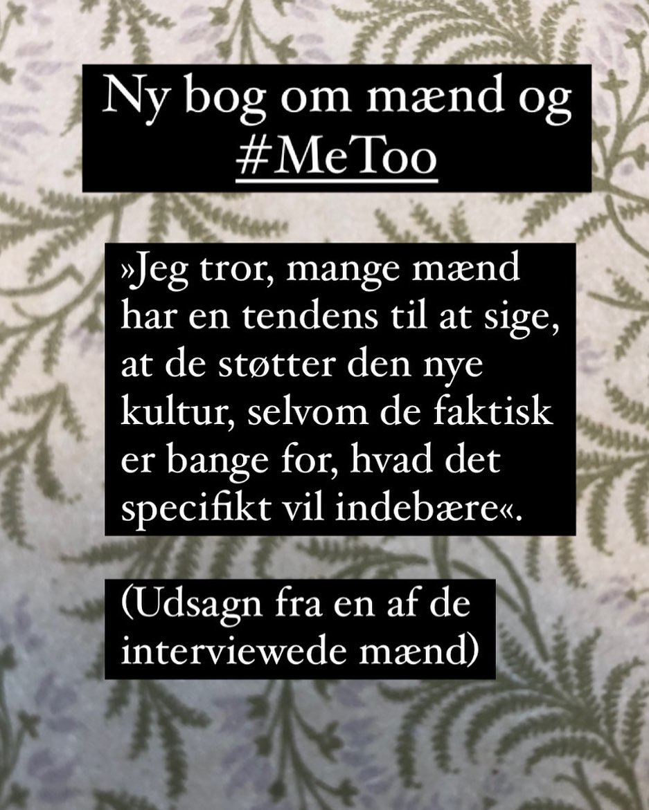
Sådan siger en af de mænd, som maskulinitetsforsker Kenneth Reinicke har interviewet til sin seneste bog ”Men after MeToo. Being an ally in the fight against sexual harassment”, 2022
I bogen, der er udkommet på engelsk, undersøger Reinicke bl.a. hvordan danske mænd egentlig oplevede debatten om #MeToo fra 2017 og frem. Ændrede kvindernes beretninger på deres opfattelse af, hvad seksuel chikane er og hvor udbredt det er? Og var de efterfølgende begyndt at gribe ind over for andre mænd, der sexchikanerer kvinder?
Det var nogle af de spørgsmål, som Reinicke stillede til 25 mandlige studerende mellem 21 og 30 år i efteråret 2020.
Ifølge de interviewede mænd blev #MeToo en øjenåbner for dem. Mest fordi de fleste af dem slet ikke var klar over, hvor stort omfanget af mænds chikane af kvinder var og hvor meget det påvirkede kvinders liv. Og rigtig mange af mændene udtrykker da også et ønske om at bidrage til at ændre den sexistiske kultur. Problemet er bare, at det er svært. For der findes ikke lige en kulturel praksis, man som mand kan læne sig op ad, når man ønsker at kritisere andre mænd for at have en grænseoverskridende adfærd over for kvinder.
Du kan låne bogen på biblioteket eller du kan læse Kenneth Reinickes kronik i Politiken i forbindelse med udgivelsen af bogen. Jeg har lagt et link til kronikken i bio.
#MeToo #Mænd #Interviews #Seksuelchikane

Kvinder fik stemmeret ved grundlovsændringen i 1915. Og ved det første valg til Folketinget i 1918, hvor kvinder kunne stemme og stille op, blev der valgt 4 kvinder ind. Det var Helga Larsen, Elna Munch, Karen Ankersted og Mathilde Malling Hauschultz. De to første fra henholdsvis Socialdemokratiet og Det radikale venstre og de to sidste fra Det konservative folkeparti.
I datidens Folketing med 140 medlemmer svarede det til knap 3 % af de valgte. Skuffelsen i kvindebevægelsen var stor. For på stemmesedlen var 10 % af de opstillede, kvinder. Forklaringen på, hvorfor så få kvinder blev valgt var, at partierne havde opstillet dem så langt nede på valglisterne, at de ikke kunne blive valgt. Det var før det blev muligt at stemme personligt!
Ved de efterfølgende valg – helt frem til 1945 – forblev kvinderepræsentationen under 3 %. I 1966 sneg den sig op på over 10 %, i 1979 kom den over 20 % for så i 1984 at nå de 30 %.
Ved det seneste valg i 2019 blev der valgt 38,9 % kvinder ind i Folketinget. Det hidtil højeste antal!
Du kan finde flere tal på opstillede og valgte kvinder til Folketinget hos Danmarks Statistik. Link i bio.
#kvinderepræsentation #kvinderipolitik #ligestilling #Folketinget

Og hvis ikke arbejdsgiverne gør det, kan de blive dømt til at betale erstatning. Det konkluderer Maria Reimer Rasmussen i sin afhandling ”Seksuel chikane på arbejdspladsen: en retlig analyse” fra 2022. Her har hun bl.a. gennemgået den eksisterende lovgivning og den retlige praksis på området. Altså hvordan domstolene har fortolket ligebehandlingsloven og dømt i sager om seksuel chikane inden for de seneste år. De sager Maria Reimer Rasmussen har kigget på stammer fra byretter og landsretten, fordi der hverken er ført retssager for højesteret eller EU-domstolen om seksuel chikane endnu.
I sin analyse når hun bl.a. frem til, at arbejdsgiveren ikke kun har ansvar for at der gribes hurtigt og korrekt ind, når medarbejdere udsættes for seksuel chikane, men faktisk også har pligt til at sørge for, at seksuel chikane overhovedet ikke kan finde sted!
I afhandlingen kan man også læse mere om selve definitionen af begrebet ”seksuel chikane” og erstatningernes størrelser.
Du kan låne afhandlingen på biblioteket.
#seksuelchikane #love #retspraksis #arbejdsmarkedet

Det feministiske tidsskrift ”Ms. Magazine” (som blev startet af Gloria Steinem i 1971) dækker abortsituationen i USA helt tæt. På sitet msmagazine.com kan du læse masser af artikler om abortspørgsmålet og følge nærmest på daglig basis, hvilke ændringer af lovgivningen, der foregår i de enkelte stater. Jeg har lagt et link i bio til Phoebe Kolberts artikel ”Status of Abortion Laws, State by State”, som hele tiden bliver opdateret.
For det er ikke længere muligt at sige noget generelt om kvinders abortrettigheder i USA. Siden den amerikanske højesteret i foråret 2022 besluttede, at abortlovgivningen fremover skal være et enkeltstats anliggende i stedet for et nationalt anliggende, er der nemlig sket ting og sager ude i de enkelte stater.
For de fleste staters vedkommende er der nu sat forskellige processer i gang for enten at gøre det sværere at få en abort, fastholde status quo eller indføre ny lovgivning, som skal beskytte (eller det modsatte) sundhedspersonalet, som udfører aborterne.
Samtidig er abortspørgsmålet blevet et væsentligt tema til midtvejsvalget her i efteråret og kvindebevægelsen opruster med underskriftindsamlinger og demonstrationer.
#abort #USA #reproduktiverettigheder

Det er en af konklusionerne i bogen ”The No Club: Putting a Stop to Women’s Dead-End Work”, 2022. Bogen er skrevet af fire kvinder – alle med jobs i den akademiske verden i England. Med udgangspunkt i deres egne karrierer og deres oplevelse af stress undersøger de fordelingen og værdisættelsen af arbejdsopgaver i organisationer ud fra et kønnet blik.
Og deres analyse viser, at det generelt set er kvinderne i en organisation, som bliver pålagt/påtager sig de arbejdsopgaver, som ikke opfattes som karrierefremmende, men som sikrer det sociale kit i organisationen. Det er opgaver, som tager tid fra de karrierefremmende opgaver og som efterlader kvinderne med alt for meget arbejde og udsigten til aldrig at blive forfremmet.
Løsningen er, ifølge forfatterne, ikke at kvinderne så må ”lære” at sige NEJ, men at organisationerne bliver opmærksomme på de kønnede strukturer og ændrer dem!
Bogen kan lånes på biblioteket. Og Emma Holten har skrevet en anmeldelse af bogen på Altinget.dk. Link i bio.
#ligestilling #arbejdsmarkedet #kønsarbejdsdeling #karriere

Frem til 2014 var det helt almindeligt, at danske læger udførte de såkaldte kønsnormaliserende operationer på spædbørn. Det drejede sig om de babyer, som var født med ”atypiske” kønsudtryk mellem benene. Hvis lægerne ikke entydigt kunne afgøre om der var tale om en dreng eller pige, besluttede de barnets køn og tilpassede kønsorganerne derefter.
Fænomenet ”interkøn” er et biologisk fænomen, som altid har eksisteret. Men som i den grad også har og stadigvæk er tabuiseret og meget lidt udforsket. Det skriver professor emeritus Bente Rosenbeck i oversigtsartiklen ”Dreng, pige eller midt i mellem? Så lidt ved vi om interkøn”, 2022.
Artiklen giver et overblik over den eksisterende viden om interkøn og linker til en lang række af gode digitale kilder.
Link til artiklen i bio.
#interkøn #kønsnormaliserendekirurgi
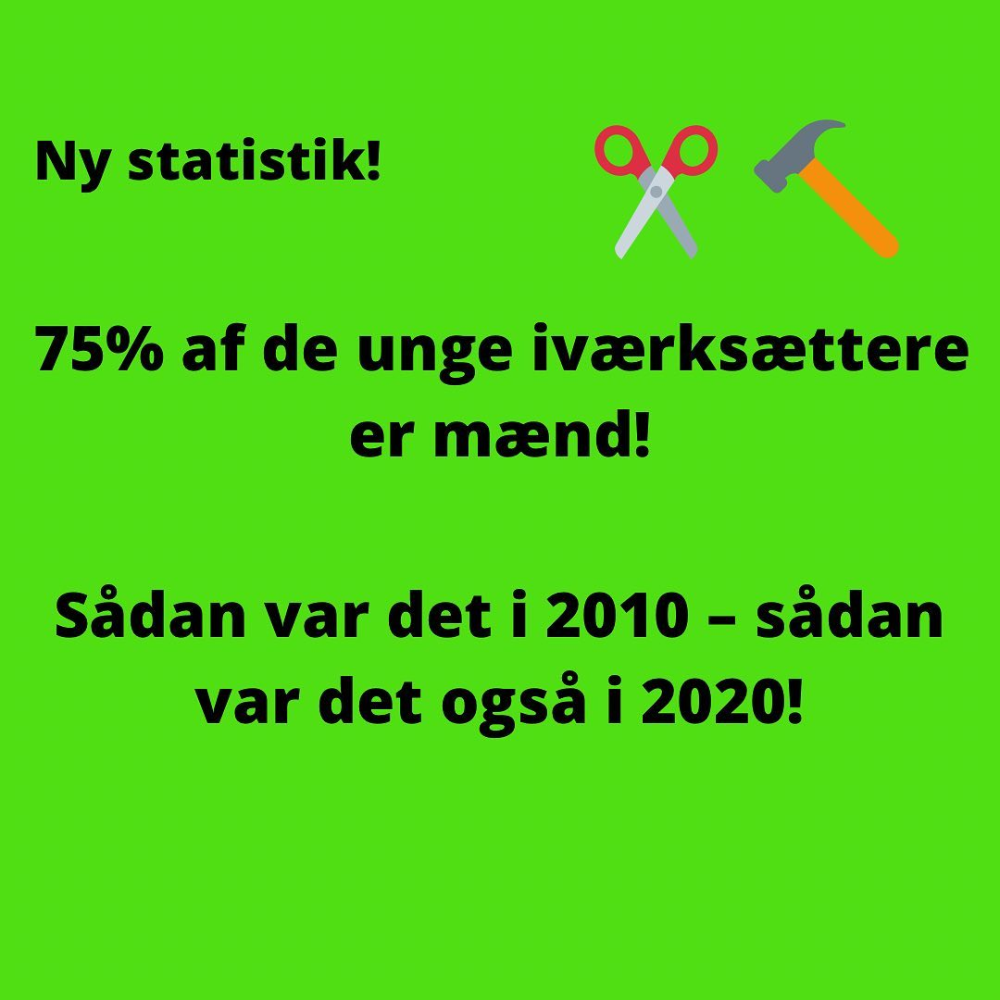
Flere unge vælger at blive iværksættere, men kønsfordelingen har ikke ændret sig en tøddel i de sidste 10 år. Det dokumenterer en særkørsel fra Danmarks Statistik. I perioden 2010-2020 har andelen af unge kvindelige iværksættere ligget på mellem 22% - 26% og for de mandlige iværksætteres vedkommende mellem 75 % - 78 %.
Det til trods for ihærdige forsøg fra både politikere og erhvervslivets organisationer på at få flere kvinder til at blive iværksættere.
Hvorfor flere unge mænd end kvinder starter som iværksættere, siger artiklen ingenting om. Men den peger på, at der er stor forskel på, hvilke brancher de to køn bliver iværksættere inden for. Unge mænd starter typisk virksomhed inden for tømrer- og snedkerfaget, kombinerede serviceydelser (fx både rengøring og håndværk) og restaurationsbranchen. Unge kvinder starter typisk virksomhed inden for skønhedsbranchen, frisørfaget og fysio- og ergoterapeutfaget.
Du kan læse hele artiklen ”Flere unge iværksættere – men hvem er de?” i publikationen Statistisk Tiårsoversigt 2022, Danmarks statistik, 2022. Publikationen er, ud over den indledende temaartikel om iværksættere, fyldt med statistik fra de seneste 10 år og meget velegnet til at give et billede af forandringer over tid.
#iværksættere #kønsforskelle #statistik

Det er en af konklusionerne i Ea Høg Utofts ph.d.-afhandling “Motivation, organisational gender equality work and the postfeminist gender regime: A feminist approach”, 2020
Afhandlingen sætter fokus på ligestillingsarbejdet og dets udfoldelsesmuligheder i store danske organisationer. Hvad får organisationer, trods den udbredte forestilling i Danmark om at ligestilling er noget vi allerede har, til at bruge ressourcer og energi på at opnå en bedre kønsbalance på fx ledergangene? Og hvordan fastholder de enkelte ligestillingspraktikere deres indre motivation, når de møder udbredt modstand mod deres arbejde?
Ea Høg Utoft konkluderer bl.a. at ligestillingspraktikkerne arbejder i et meget snævert handlerum, der bl.a. kan forklares via begrebet det postfeministiske kønsregime. Begrebet søger at indfange og forstå den dobbelthed, som knytter sig til ligestilling i Danmark. På den ene side opfattes ligestilling som en kerneværdi i vores samfund og som noget vi for længst har opnået og på den anden side eksisterer en enorm passivitet og manglende handlekraft i forhold til at rette op på det faktum at Danmark på en række ligestillingsparametre er begyndt at performe dårligere end mange af de lande, vi plejer at sammenligne os med.
Ea Høg Utoft fik forleden KRAKA-prisen for sin ph.d-afhandling. KRAKA-prisen gives til en studerende, forsker eller formidler, der har bidraget med noget nyskabende til dansk kønsforskning og uddeles via Foreningen for Kønsforskning i Danmark.
Du finder et link til phd.-afhandlingen i bio.
#ligestilling #organisationer #motivation #postfeministiskkønsregime

Rigtig god sommer til jer alle! Jeg holder lidt orlov og ferie og er tilbage på profilen igen til august.

Vi håber, at vi har vakt jeres interesse, og at mange af jer har lyst til at komme til Kønskonferencen d. 18. og 19. august.
Deltagelse i konferencen er inkl. frokost, snacks og kaffe begge dage. Alt dét koster for personer med job og/eller institution 600 kr., for studerende 300 kr. og specifikt for studerende, der på dette semester (forår 2022) har taget kurserne Følelsernes politik og/eller Køn, racialisering og identitet koster det kun 50 kr.
Link til tilmeldingen ligger i bio, og den lukker d. 15. juni.
Vi glæder os til at se mange af jer! Tak fordi I har fulgt med og ha’ en dejlig weekend. I er altid velkomne til at skrive med eventuelle spørgsmål på koenskonference2022@hum.ku.dk.
De bedste hilsner Sarah-Sofie og Sarah 🌈

Hej! Vi hedder Sarah-Sofie og Sarah, og vi er takeover her på profilen i denne uge.
Det er vi for at fortælle om årets Kønskonference, som afholdes på KU Søndre Campus d. 18. og 19. august, og som har titlen Dansk Kønsforsknings Indre og Ydre Rammer. Vi er begge praktikanter på Center for Køn, Seksualitet og Forskellighed på KU, som er vært for årets konference, og vi har derfor stået for en stor del af planlægningen. I løbet af ugen vil vi præsentere programmet for konferencen, keynotes og meget mere, så vi håber, at I vil følge med i de kommende dage.
Vi har lagt tilmeldingslink til konferencen i bio, hvor man kan tilmelde sig indtil d. 15. juni.
Hvis I har spørgsmål til konferencen, er I meget velkomne til at skrive til os på koenskonference2022@hum.ku.dk. Ha’ en dejlig mandag! 🌞
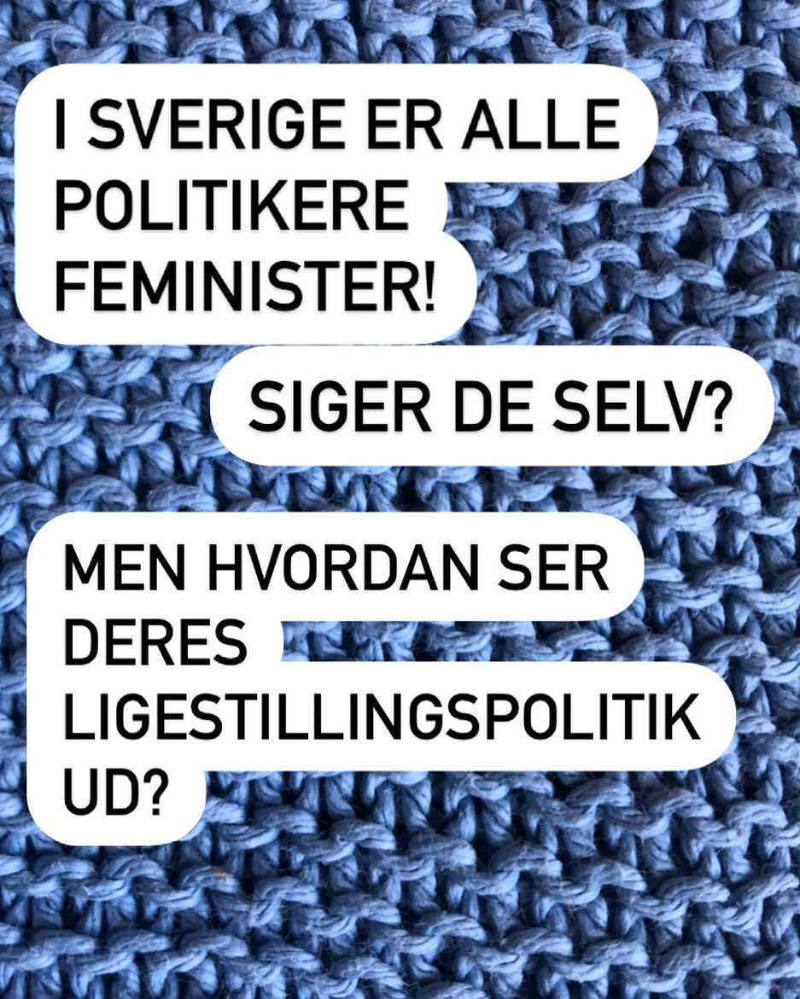
Danske feminister har ofte Sverige som forbillede. For her kalder alle politikere sig for feminister, og alle partier har en ligestillingspolitik! Men hvad er det egentlig for en feministisk forandring de forskellige partier ønsker, og er det en ligestillingspolitik der tilgodeser alle kvinder – også de svageste og dårligst lønnede? Det undersøger Lina Stenberg i bogen ”Feminism på riktigt” (2022), hvor hun gennemgår de svenske partiers ligestillingspolitik. Her stiller hun 3 overordnede spørgsmål:
Hvordan vil partierne sikre at kvinder:
- Kan leve af deres egen indkomst?
- Kan holde til at arbejde et helt liv?
- Kan få arbejdsliv og familieliv til at hænge sammen?
Og hun når (måske ikke så overraskende) frem til, at partierne vægter de ligestillingspolitiske tiltag og indsatser alt efter hvilken type af feminisme de abonnerer på. Og at det er de færreste (hvis nogen) partier som har konkrete politiske bud på et ligestillet samfund på tværs af køn og klasse.
Gad vide hvordan et ligestillingstjek af de danske politiske partier vil falde ud?
Bogen ”Feminism på riktigt: En granskning af Riksdagspartiernes jämställdthetspolitik” (2022) kan læses på forlagets hjemmeside. Link i bio.
#ligestillingspolitik #sverige #feminisme #politiskepartier

Siden Emma Holten i 2014 fortalte sin historie er både den offentlige samtale og ny viden om digitale sexkrænkelser vokset eksplosivt. Et af de emner, som igen og igen har være genstand for diskussioner er ofrene for krænkelserne. Er de rigtige ofre? Har de selv været ude om det? Og er deres liv ødelagt for evigt?
Men meget få eller ingen har ifølge Signe Uldbjerg Mortensen interesseret sig for og forsket i digitale sexkrænkelser ud fra ofrenes egne perspektiver og oplevelser.
Derfor har hun i sin nyligt forsvarede phd.-afhandling ”Rewriting Victimhood” arbejdet med en særlig eksperimental terapeutisk tilgang for bl.a. at få mere viden om, hvad det vil sige at være offergjort. Gennem skriveværksteder med ofre for sexkrænkelser og brug af bl.a. metoden ”creative writing” får deltagerne mulighed for selv at tage ejerskab over deres egne oplevelser og dermed skabe nye og andre fortællinger om det at være offer.
Signe Uldbjerg Mortensens ph.d.-afhandling ”Rewriting Victimhood. Stories of digital sexual assault”, 2021 kan endnu ikke lånes på biblioteket, men mens du venter på den, kan du læse en af de artikler som indgår i afhandlingen. Nemlig: ”Writing Victimhood: A methodological manifesto for researching digital sexual assault”, Kvinder, køn og forskning, nr. 1, 2021. Link i bio.
#digitalesexkrænkelser #offergørelse #creativewriting #aktivisme #phdafhandlinger

Har du brug for hjælp til at finde litteratur eller kildemateriale til din opgave eller til dit petitum – nu hvor eksamenstiden nærmer sig? Og arbejder du med et emne, der har noget med køn eller ligestilling at gøre? Så skriv til mig på jyni@kb.dk
Tilbuddet gælder alle uanset hvilket fag du studerer og hvilken uddannelsesinstitution du læser på.

Hvordan har småbørnsmødre, der er tilbage på arbejdsmarkedet efter endt barselsorlov, det egentligt? Det har en gruppe norske forskere undersøgt nærmere. I en række dybdeinterviews med norske småbørnsmødre fokuserer forskerne på, hvordan erhvervsaktive mødre oplever/erfarer deres kroppe i den daglige omsorg for deres børn. Ved at tage udgangspunkt i en kropsfænomenologisk tilgang kommer interviewene i høj grad til at handle om, hvad moderkroppen gør og hvad den føler. Og hvordan de forskellige krav, der stilles til den fra børnene, arbejdet og fra moderen selv, får konsekvenser i form af stress, træthed osv.
Forskerne kalder den erfaring, som mødrene beretter om for en ”sensitivert kroppslighet”, dvs. en sensibiliseret kropslighed. Det er et nyt begreb, som forsøger at beskrive, hvordan moderkroppen opfanger børnenes behov automatisk og registrerer dem på ”en ekstra sensitiv radar”. En evne, som er utrolig empatisk over for børnenes behov, men som også ofte ifølge mødrene er med til at skabe en følelse af utilstrækkelighed og stress, når det ikke er muligt at tilfredsstille børnenes behov. Derudover kommer denne særlige sensibiliserede kropslighed til at modarbejde et ligestillet forældreskab, fordi fædrene typisk ikke har udviklet en tilsvarende ”sensitiv radar”.
Artiklen ”Den sensitiverte kroppen: en fenomenologisk studie af småbarnsmødres omsorgserfaringer og helse” er skrevet af forskerne Sunniva Rivedal, Hilde Bondevik, Lisbeth Thoresen og Gunvor Aasbø og publiceret i Tidsskrift for kjønnsforskning, nr. 1, 2022. Link i bio.
#moderskab #kroppen #småbørnsmødreshverdag

Kritikken af den eksisterende gymnasiekanon for kun at have én kvindelig forfatter med, bliver indimellem forsøgt imødegået af deltagere i debatten ved at påpege, at mandlige forfattere sagtens kan levere gode kvindeportrætter i deres digtning. Det er givetvis helt rigtig. Men hvilke opfattelser af kvinder, er det så de leverer?
Det har Katrine Ohlendorff kigget nærmere på i sit universitetsspeciale fra 2016. Her analyserer hun noveller skrevet af bl.a. Steen Steensen Blicher, H.C. Andersen og Karen Blixen, som alle 3 optræder i gymnasiekanonen. Og en af hendes konklusioner er, at de kvindelige fiktionspersoner alle er defineret ud fra deres tilhørsforhold til mændene i deres liv. Og at alle forfatterne opstiller et særligt kønskodeks, som stiller store moralske krav til kvinden og som tildeler hende 3 mulige roller: jomfruen, hustruen eller skøgen.
Specialets titel er: Jomfruen, Hustruen og Skøgen: Et studie af kvinderoller hos danskfagets kanonforfattere, 2016 og du kan låne det på Det Kgl. Bibliotek.
#gymnasiekanon #mandlige forfattere #kønsroller

Tusind tak for alle jeres forslag til, hvilke forfattere, der burde komme med, hvis og når den litterære gymnasiekanon udvides fra 15 til 30 forfattere.
I alt foreslog I 65 forfatternavne. Af dem var de 54 kvindelige forfattere, de 11 mandlige forfattere. 15 af forfatterne har fået 3 stemmer eller flere. De er listet her:
1. Tove Ditlevsen: 42 stemmer
2. Inger Christensen: 27 stemmer
3. Helle Helle: 11 stemmer
4. Amalie Skram: 9 stemmer
5. Naja Marie Aidt: 8 stemmer
6. Suzanne Brøgger: 8 stemmer
7. Karin Michaëlis: 8 stemmer
8. Olga Ravn: 8 stemmer
9. Vita Andersen: 7 stemmer
10. Thit Jensen: 6 stemmer
11. Agnes Henningsen: 6 stemmer
12. Dea Trier Mørch: 6 stemmer
13. Leonora Christina Ulfeldt: 4 stemmer
14. Mathilde Fibiger: 3 stemmer
15. Michael Strunge: 3 stemmer
Hvis du er nysgerrig efter at vide, hvem de resterende forfatternavne er, kan du se dem i højdepunktet Gymnasiekanon på min profil.

Det blev drøftet af en række forskere og undervisere i går på en høring på Christiansborg om danskfagets litteraturkanon i gymnasieskolen. Anledningen var Dansklærerforeningens forslag om dels at evaluere den eksisterende kanon, dels at udvide den fra 15 værker til 30 værker. Og derudover indføre en solnedgangsklausul, der vil betyde at kanonen skal genbesøges hvert 10. år for en evt. revision.
Den nuværende kanon, som er fra 2004, er ifølge Dansklærerforeningen for snæver og lever ikke op til det, de mener en kanonliste skal signalere, nemlig demokrati, åndsfrihed og flerstemmighed. Således rummer den nuværende kanonliste ud over en folkevise, 13 mandlige forfattere og 1 kvindelig.
På høringen var der opbakning til Dansklærerforeningens forslag fra et flertal af oplægsholderne. Men hvis der skal ske ændringer af kanonlisten, kræver det opbakning fra politikerne. Og indtil nu har undervisningsministeren sagt nej.
Du kan se høringen på Folketingets tv-kanal. Link i bio.
#gymnasiekanon #kvindeligeforfattere #dansklærerforeningen

I 1899 blev der vedtaget en lov, som betød at kvinder ikke længere blev umyndiggjort, når de blev gift. Men der skulle gå godt 70 år mere, før gifte kvinder fik mulighed for at betale skat af egen indtægt. Frem til 1970 var det ægtemanden, der betalte skat af sin egen og af hustruens indtægt. Den såkaldte sambeskatning fungerede på den måde, at hustruens indtægt blev lagt oven i ægtemandens indtægt og så betalte han skat for dem begge.
Hovedindvendingerne mod sambeskatningen havde både et ligestillings- og økonomisk perspektiv. Økonomisk fordi de ægteskaber, hvor begge havde erhvervsarbejde blev beskattet hårdere pga. proportionalskatten, end hvis parrene ikke var gift. Ligestillingsmæssigt, fordi skattelovgivningen ikke definerede gifte kvinder som selvstændige borgere.
Dansk Kvindesamfund havde allerede adresseret problemet i 1915 med en henvendelse til Folketinget. Og siden fulgte de op igen og igen både med henvendelser til Folketinget og ved at skrive indlæg og udgive pjecer. I 1960’erne hvor flere og flere gifte kvinder kom på arbejdsmarkedet steg presset på politikerne.
I 1963 stod Dansk Kvindesamfund fx for en underskriftindsamling mod sambeskatningen med 70.000 underskrivere. Og 5 år senere lavede de kvindelige politikere i Folketinget en happening under sloganet ”Væk med skatten på vielsesattesten. Staten skal ikke tjene på, at en mand og en kvinde forelsker sig og gifter sig”.
Læs mere i temaet om ”Kvinders kamp for medborgerskab”, som jeg har lavet på kb.dk.
#ligestilling #skat #skattelovgivning #medborgerskab #kvindehistorie

LGBT-området er igen ved at blive et værdipolitisk spørgsmål. Og den politiske enighed om at LGBT-personer har krav på et ligestillet medborgerskab, er udfordret. Det hævder lektorerne Michael Nebeling Petersen og Mons Bissenbakker i et debatindlæg i Uniavisen.
I debatindlægget beskriver de, hvordan synet på homoseksuelle som unaturlige og deres familier som en sørgelig afglans af kernefamilieidealet ændrede sig i løbet af 1980’erne. I første omgang med loven i 1989 om registreret partnerskab og senere med placering af LGBT-området som en del den øvrige ligestillingspolitik. En tilgang, som betød en lang række juridiske landvindinger, der mere eller mindre stiller personer uanset kønsidentitet eller seksuel præference, lige for loven. Og at denne tilgang nu udfordres fra forskellig kant.
Debatindlægget ”Gammel mistænkeliggørelse af LGBT-personer på nye flasker”, blev publiceret i Uniavisen d. 9. marts 2022.
Indlægget var en del af et større tema om køn på uni.
Link i bio.
#medborgerskab #ligestilling #LGBT

52 % af alle kvinder i Danmark kender nogen, der er i eller har været i et voldeligt parforhold. For mænds vedkommende er det 39 %. Det viser en ny undersøgelse, som er lavet af Vive – det nationale forsknings- og analysecenter for velfærd.
Undersøgelsen kigger også nærmere på, hvilken relation vidnerne har til den voldsramte og hvordan vidnerne til volden reagerer. Her fremgår det, at det især er familiemedlemmer og nære venner, der vidste besked og at den typiske reaktion var, at de selv talte med den voldsramte eller med andre om det. En del tilbød praktisk hjælp til børnepasning og husly. Nogle – særligt mænd – havde taget kontakt til voldsudøveren. Kun meget få tog kontakt til offentlige myndigheder som fx politi, krisecentre mv. Og også værd at bemærke 21 % af dem, der kendte til volden, reagerede slet ikke.
Undersøgelsen peger på at nogle af de faktorer, som er afgørende for om man griber ind, bl.a. handler om hvorvidt man selv har været udsat for vold enten af en partner eller af sine forældre som barn og om man har en kritisk holdning til de traditionelle kønsroller og sexisme.
Undersøgelsen “Danskernes kendskab til partnervold” er udført af bl.a. seniorforsker Mai Heide Ottosen og baserer sig på en større spørgeskemaundersøgelse og en række kvalitative interviews. Den kan læses på VIVEs hjemmeside.
Link i bio.
#partnervold #spørgeskemaundersøgelser #vidner #kønsforskelle

Få styr på nogle af de store og vigtige ligestillingskampe siden 1870’erne! På Det Kgl. Biblioteks hjemmeside har vi netop publiceret temaet ”Kvinders kamp for medborgerskab”. Her kan du bl.a. læse om stemmeretskampen og kvindetoget i 1915, om kvindebevægelsens mangeårige arbejde for at få sit eget hus, om at gifte kvinder først fik lov til at betale skat af egen indtægt i 1970’erne og om kampen for kvindelige præster i folkekirken.
Du kan også se en oversigt over nogle af de vigtigste milepæle i vores ligestillingspolitiske historie og som noget helt nyt få adgang til vigtigt nydigitaliseret kildemateriale om den danske kvindebevægelse.
Rigtig god fornøjelse!
Link i bio.
#ligestillingshistorie #kvindebevægelse #danskkvindesamfund

Hej. Jeg hedder Amalie @amaliehestbaek og er denne uges takeover på profilen. Jeg er lige startet på kandidaten i dansk, og jeg vil i løbet af ugen fortælle om mit bachelorprojekt i dansk, som jeg skrev i efteråret 2021. Mit bachelorprojekt handler om højskoleromanen som en ny genre inden for dansk litteratur. Jeg har selv gået på højskole, og idéen til projektet kom, da jeg lagde mærke til, at højskolerne begyndte at dukke op i ny dansk litteratur. I morgen vil jeg fortælle om, hvad jeg fandt ud af i min undersøgelse.
Hvis I har spørgsmål til mig eller mit projekt, er I velkommen til at skrive til denne profil, til mig på @amaliehestbaek eller min mail amaliehestbk@yahoo.dk, ligesom I også kan få tilsendt bachelorprojektet.

Nu behøver avisredaktører og journalister ikke længere at fravælge kvindelige eksperter, fordi de tror at læserne hellere vil have mandlige. For læserne vurderer ikke mandlige og kvindelige ekspertudsagn forskelligt. Det er konklusionen på et dansk forskningsprojekt, som har undersøgt om eksperternes køn har betydning for læsernes vurdering af artiklernes faglige indhold og troværdighed. I undersøgelsen, som er udført af forskere fra VIVE, Københavns Universitet og Syddansk Universitet, deltog mere end 2000 avislæsere.
Der er link til artiklen i bio.
Katrine Greve-Poulsen, Frederik K. Larsen, Rasmus T. Pedersen og Erik Albæk: “No Gender Bias in Audience Perceptions of Male and Female Experts in the News: Equally Competent and Persuasive” in: The International Journal of Press/Politics, 2021
#repræsentation #kvindeligeeksperter #medier #kønsstereoptypier

Jeg hedder Martin Andersen. I denne uge er jeg takeover her på profilen. Som nogle af jer måske husker, var min kæreste @astridhelenenielsen og jeg takeovers for lidt over et halvt år siden. I mellemtiden har jeg skrevet mit speciale færdigt, som jeg også løftede lidt af sløret for den gang. I grove træk handler det om Dansk Kvindesamfunds fremstilling af arbejderkvinderne i perioden 1885-1910 ud fra et affektteoretisk blik. I løbet af ugen vil jeg dele ud af mit speciale og de erfaringer, jeg gjorde under processen med at skrive det.
Jeg håber meget, at I vil følge med, og hvis I har spørgsmål, er I meget velkomne til at skrive en kommentar eller direkte til mig. I kan ligeledes få tilsendt specialet, hvis det skulle have jeres interesse.

I dag er det lige præcis et år siden, jeg lavede det første opslag på koensforskning_detkglbibliotek. Og modtagelsen af profilen har været helt fantastisk. Tak til alle jer, der har valgt at følge mig, like og kommentere på mine historier. Det er jeg meget taknemmelig over. I det kommende år vil I få mere nyt fra kønsforskningen, mere kønsstatistik og flere historier fra kvindebevægelsens barndom. Og så er jeg allerede gået i gang med forberedelsen af en ny julekalender!
Jeg vil også rigtig gerne stille min profil til rådighed for studerende og andre, som har forsket i/skrevet opgave om kønsrelevante emner. Så send mig en mail på jyni@kb.dk, hvis du har lyst til at formidle din viden på profilen eller hvis du har forslag til historier eller emner, som du synes jeg skal tage op.
#kønsforskning #instagram

Kønsneutral rekruttering af nye medarbejdere er efterhånden ved at blive en del af mange større virksomheders og organisationers ansættelsespraksis. Og i den forbindelse er det blevet populært at lave kurser for de ansatte i, hvordan de bliver opmærksomme på de både bevidste og ubevidste forestillinger om kønsstereotypier, de selv bærer rundt på.
Men det er faktisk en rigtig dårlig måde at bruge ressourcerne på! For det at vi som enkeltindivider bliver bevidste om kønsbias, er ikke det samme som at det får konsekvenser for vores handlinger. Måske snarere tværtimod!
Det er en af hovedkonklusionerne i artiklen ”Gender Bias in Recruiting: Developing a Social Practice Perspective”. Artiklen peger på, at hvis man vil udvikle en kønsneutral rekrutteringspraksis, skal man flytte fokus fra individet til organisationen og den sociale praksis, der udspiller sig inden for den. Og her er det ikke individet, men de normer, magtrelationer, strukturer og kønsbias, der er indlejret i organisationen, som skal i fokus.
Artiklen, der er skrevet af Julia C. Nentwich, Miriam K. Baumgärtner, Nilima Chowdhury og Verena Witzig indgår i tidsskriftet ”Kvinder, køn og forskning”s seneste temanummer ”Unconscious Bias in Organizations”, 2021.
Link til hele temanummeret i bio.
#kønsbias #kønsneutralrekruttering #køniorganisationer #ligestilling
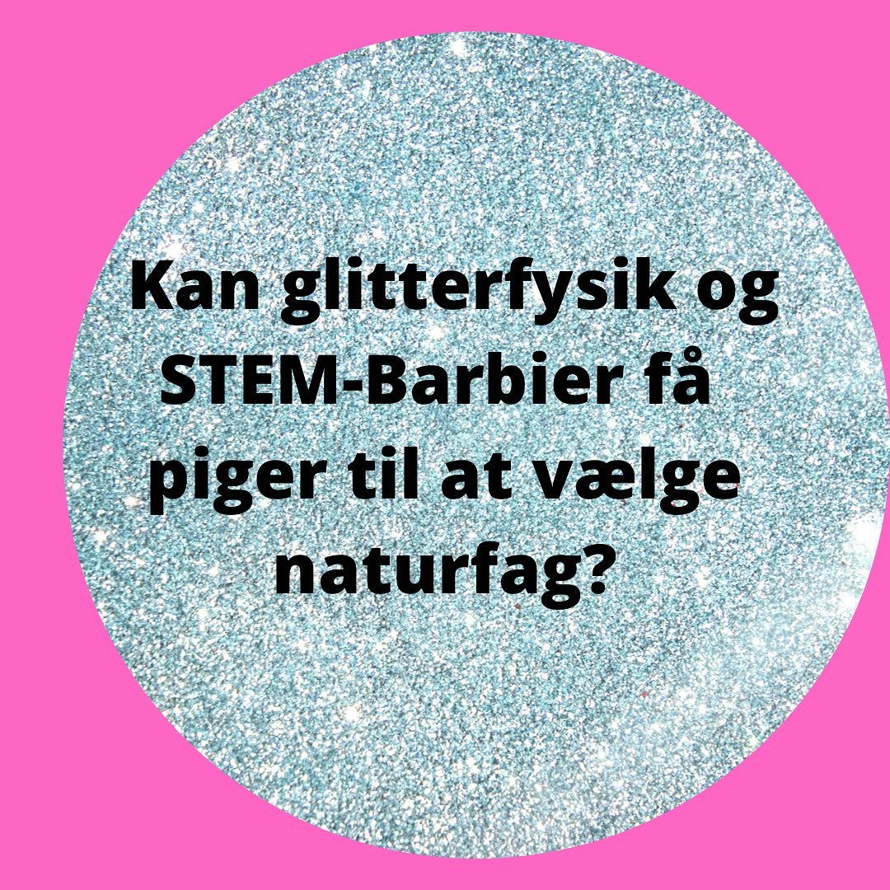
Ny digital udstilling sætter fokus på fysikfagets kønshistorie og nutidens ønske om at få skabt en kønsbalance i faget. Engang var fysik noget kun for drenge. Det var i hvert fald den udbredte opfattelse i fysikundervisningen langt op i 1900-tallet. Men nu er noget ved at ændre sig. Nu skal piger også inviteres ind i fysikkens verden og en række aktører – fra EU-kommissionen over undervisningssektoren til internationale legetøjsproducenter – arbejder målrettet på at få en bedre kønsbalance i de såkaldte STEM-fag (Science, Technology, Engineering and Mathematics). Og der eksperimenteres på livet løs med, hvordan man får gjort piger og kvinder interesserede i de naturvidenskabelige fag. En af strategierne er udviklingen af den såkaldte ”glitterfysik”, hvor reklamer for fysikfaget bl.a. pakkes ind i lyserøde og lyse lilla farver og benævnes som ”en pigeting”. Matels STEM Barbie, der bygger vaskemaskiner og roterende tøjstativer er et eksempel på dette. Spørgsmålet er så om ”feminiseringen” af fysikfaget får flere piger til at vælge faget?
Du kan læse meget mere om køn og fysik i den digitale udstilling ”Et kønt fag: En udstilling om pigernes entré i fysikfaget”, Aarhus Universitet. Link i bio.
#fysikfaget #kønshistorie #STEM #kønssteotypier #kønsbalance

Godt nytår!
Har du brug for lidt hjælp til litteratursøgning i køn til en opgave eller til en artikel? Så giver jeg gerne en hånd. Og det er uanset om du er gymnasieelev, universitetsstuderende, forsker, journalist eller andet.
Jeg hjælper også gerne med at finde tilgængeligt kildemateriale om dansk kvinde- og kvindebevægelseshistorie.
Skriv til mig på jyni@kb.dk.

I 1970 blev gifte kvinder for første gang i Danmarkshistorien skatteborgere. Det skete da loven om kildeskat blev indført. Før da blev gifte kvinder ikke beskattet af deres egen indtægt. Det gjorde deres ægtemænd! I praksis foregik det ved at hustruens indtægt blev lagt oven i ægtemandens indtægt og så betalte han skat for dem begge.
Hovedindvendingerne mod sambeskatningen (som man kaldte det) havde både et ligestillings- og et økonomisk perspektiv. Økonomisk fordi de ægteskaber, hvor begge havde erhvervsarbejde, blev beskattet hårdere pga. af proportionalskatten, end hvis parrene ikke var gift. Ligestillingsmæssigt, fordi skattelovgivningen ikke definerede gifte kvinder som selvstændige borgere.
Dansk Kvindesamfund havde allerede adresseret problemet med en henvendelse til Folketinget tilbage i 1915, og ved valget i 1918, som var det første valg, hvor kvinder kunne stemme og stille op, indgik ophævelsen af sambeskatningen i deres spørgsmål til politikerne. Og siden fulgte de op igen og igen både med henvendelser til Folketinget og ved at skrive indlæg og udgive pjecer. Alt sammen uden resultat!
Ved valget i 1960 kunne man finde annoncer i Dansk Kvindesamfunds blad ”Kvinden og Samfundet” fra de forskellige partier, hvor de alle lovede at ophæve sambeskatningen. Men intet skete. Og selv om Dansk Kvindesamfund iværksatte en underskriftskampagne i 1963 med 70.000 underskrifter for at understøtte kravet, og de kvindelige folketingsmedlemmer 5 år senere lavede en happening i Folketinget, var det først med loven om kildeskat i 1970, at gifte kvinder endelig kunne få lov til at betale skat af egen indtægt.
#danskkvindesamfund150 #skat #giftekvinder #sambeskatning #ligestilling

D. 10. marts 1974 om aftenen mødes mere end hundrede kvinder på værtshuset ”Den gyldne Hane” i København. Det bliver starten på en ny bevægelse. Lesbisk Bevægelse!
Bare nogle måneder senere får Lesbisk Bevægelse sin debut i offentligheden på Kvindefestivalen i Fælledparken, hvor 30.000 mennesker deltager. Og det er her – fra den store scene - at Lesbisk Bevægelse holder den ofte citerede tale, hvor det bl.a. lyder:
”I dag vil vi gerne benytte lejligheden til at dementere, at vi er nogle ulykkelige stakler. Vi er ikke ulykkelige – vi er rasende”.
Og herefter går det slag i slag med teater, demonstrationer, Kvindekaravanen, kvindelejre, Kvindehøjskolen og meget mere.
Alt det og mere til kan du læse om i bogen: ”Lesbisk kraft er pedalkraft: - en historie om Lesbisk Bevægelse 1974-1996”, som er skrevet af Katrine Manfred Swets. Bogen er den første, der kortlægger og fortæller historien om Lesbisk Bevægelse.
Bogen er udgivet af LGBT+ DANMARKS bibliotek og kan downloades gratis på deres hjemmeside. Link i bio.
#Lesbiskbevægelse #kønshistorie

66 % af kandidaterne til kommunalvalget i dag er mænd. 34 % er kvinder. Det er det højeste antal opstillede kvinder nogensinde. Ved sidste valg i 2017 var 68 % af kandidaterne mænd, 32 % kvinder. Den gang i 2017 blev resultatet, at der blev valgt 33 % kvinder ind i byrådene. Så mon ikke vi kan se frem til endnu en lille stigning i kvinderepræsentationen?
Men selv hvis kvinderepræsentationen i dag igen skulle få et lille nøk opad, så halter Danmark fortsat langt bag ved samtlige øvrige nordiske lande, som alle har over 40 % kvinder i kommunalpolitik.
Du kan se hvor mange kvinder/mænd, der stiller op i din kommune på Institut for Menneskerettigheders hjemmeside. Link i bio.
#kommunalvalg 2021 #kvinderepræsentation

Med Astrid Stampe Feddersen i spidsen gik Dansk Kvindesamfund i 1905 til angreb på dele af ordlyden i det eksisterende vielsesritual. Anstødsstenen var især sætningen ”I kvinder! Være eders Ægtemand underdanige”. Den konkrete anledning til netop at tage fat i det i 1905 var, at der var forslag i Folketinget om at gøre borgerlig vielse tvungen for alle og blev det forslag vedtaget, ville det betyde, at der skulle udarbejdes et nyt vielsesritual.
Dansk Kvindesamfund indsendte derfor et andragende til Kirkeministeriet, hvor der bl.a. stod:
”…udtaler vi Kvinder overfor den kirkelige Styrelse, at det er os meget magtpaaliggende, at Ordet til Kvinderne om at være deres Mænd underdanige udgaar af Ritualet, idet det let vil kunne forstaaes paa en Måde, som er i Strid med Nutidens Opfattelse af, hvorledes Forholdet mellem Mand og Hustru bør være”.
Da der ikke kom noget ud af dét, besluttede Dansk Kvindesamfund i 1908 at nedsætte et udvalg bestående af kvindesagskvinder og progressive præster, som fik til opgave at udarbejde et nyt vielsesritual. Udvalgets forslag indgik i og fik en stor betydning for kirkens ændring af vielsesritualet i 1912. Her var sætningen om at kvinderne skulle være deres mænd underdanige fjernet. I stedet hed det bl.a. ”Bær hverandres Byrder og opfyld saaledes Kristi lov”.
Du kan få mere at vide om Dansk Kvindesamfund og vielsesritualet i bl.a. Gyrithe Lemches bog ”Dansk Kvindesamfunds historie gennem 40 Aar”, 1939. Den er netop blevet digitaliseret og du finder hendes omtale s. 201-203. Jeg har lagt et link i bio.
#danskkvindesamfund150 #ægteskab #ligestilling #vielsesritualer

Efter 8 ugers virksomhedspraktik er min tid ved kønsforskningsservice og denne profil desværre forbi ✨
Jeg har virkelig nydt at lave insta-magi til jer alle sammen, og skrevet om alt fra kvindelige værnepligtige til vogueing 🪖💃
Jeg vil også gerne sige tak til Jytte og de andre medarbejdere på Det Kgl.Bibliotek, som har været de bedste kollegaer man kunne ønske sig ✨
Tak for denne gang og rigtig god weekend 💃✨
#virksomhedspraktik #detkglbibliotek #jobsøgende

”Strike a pose!”. Du kender sikkert Madonnas hit ”Vogue” fra 1990, der handler om dansestilen vogue. Sangen fik dansestilen på landkortet efter at have levet over 20 år i undergrunden. Men hvor stammer dansestilen egentlig fra? 💃
”Vogueing” opstod i 1960’erne og 1970’erne i Harlem, New York, som havde en stærk danse-og drag-scene kaldet ballroom. Ballroom tiltrak særligt folk fra homo-og transmiljøet med afroamerikanske eller latinamerikanske rødder. Vogueing er inspireret af modemagasinet Vogue, hvor man i lighed med modellerne skal danse og posere på forskellige måder, der minder om modemagasinet. Klarer man sig godt, vinder man både prestige for sig selv og sin vogue-familie. 👑
Vogue-familierne er et alternativ til den heteronormative kernefamilie og en reaktion mod den marginalisering, man ofte oplever hvis man er homoseksuel, transkønnet, farvet og af lav klasse. Denne marginalisering kommer både fra ens biologiske familie i hensyn til seksualitet og det omgivende samfund med hensyn til race og/eller klasse. En familie er ofte ledet af en erfaren person i vogue-miljøet, enten kaldet mor eller far, som både kan guide sine børn i alt fra hvordan man praktiserer sikker sex, til hvordan man vinder konkurrencerne i ballroom. Ophav og alder spiller ingen rolle i denne familiekonstruktion, og man kan som mor i et vogue-hus sagtens have børn der er ældre end en selv. 💃🕺💃🕺
Vogue-familierne er udover at være et alternativ til den heteronormative kernefamilie også et modsvar til den voldelige bandekultur, og forskeren Marlon M. Bailey ser endda vogue-familierne som ”gay gangs”. I vogue-kulturen slås man ikke på gaden med knytnæver, man slås på dansegulvet med fede dansetrin, smukt tøj og attitude.💃💃
Hvis du vil lære mere om vogue-og dragkulturen, er filmen Paris is Burning og tv-serien Pose ganske anbefalelsesværdige. Og hvis du er en læsehest, er forskningsartiklen ”Time gone awry: Vogue houses and queer repro-generationality at the intersection(s) of race and sexuality” af Mathias Klitgård fra 2019 et godt sted at starte. 💃🕺
Og husk, reading is fundamental, og biblioteket er altid åbent på kb.dk. 🕶️
#vogue #pose #parisisburning #queer

Forfatteren Karen Blixen er i skrivende stund den eneste kvinde i gymnasiekanonen fra 2004. Fællesskabet for Kritiske litterater bakker i en happening op om Dansklærerforeningens seneste politiske udspil, der foreslår at kanonen udvides til en bruttoliste på 30 forfatterskaber. På denne bruttoliste ville der så kunne blive plads til forfattere som fx Amalie Skram, Inger Christensen, Tove Ditlevsen, Suzanne Brøgger og Agnes Henningsen. 📚📚📚
Men undervisningsministeren siger indtil videre blankt nej! Kanonen skal ikke revideres!📚
Hvis du er interesseret i at lytte til nogle af de kvindelige forfattere, som burde have en plads i en ny gymnasiekanon, skal du møde op til Fællesskab for Kritiske Litteraters maratonoplæsning i dag. 🏃♀️
Maratonoplæsningen vil foregå i dag fra 11-16 i aulaen på KUA 2, Søndre Campus, Københavns Universitet, hvor der vil blive læst op af hele 28 forskellige forfatteres værker.
Eventet er gratis og alle kan deltage.
Har du lyst til at læse mere om Dansklærerforeningens politiske udspil, da kan du følge linket i bio.
#dansklærerforeniningen #toveditlevsen #suzannebrøgger #ingerchristesen #gymnasiekanon #agneshenningsen

”En kvinde skal lade sig belære i stilhed og underordne sig i alt; men at optræde som lærer tillader jeg ikke en kvinde, heller ikke at bestemme over sin mand; hun skal leve i stilhed. For Adam blev skabt først, derefter Eva”. Sådan skriver Paulus i 1.Timotheusbrev 2;11-13, og udtrykker derved sin holdning til kvindens status i menigheden. 🤐
Da jeg (Linette) studerede, valgte jeg at skrive en eksamensopgave om Paulus’ syn på kvinder som værende utroværdige i netop 1.Timotheusbrev, og hvorfor han fandt det bydende nødvendigt at gøre kvinder stille eller nedgøre det de siger. Paulus lufter sine holdninger til dette i både kap 2;11-13 og kap 5;13-14, og advarer endda menigheden mod at tage enkers ”sludder” for gode varer. Måske fordi enker ikke er underordnet en mand, og derfor har frihed til at tale med andre kvinder, måske for meget frihed endda. Paulus’ løsning på problemet: Gift alle enker under 60 år væk, og henvis da til kap 2;11-13 i selvsamme brev. ⚠️👵🗯️
Hvis du er interesseret i at læse mere om Paulus’ største frygt, kan bogen ‘Gossip and Gender: Othering of Speech in the Pastoral Epistles’ af Marianne Bjelland Kartzow anbefales. 📚
#gossip #feminisme #retorik #metoo

D. 1. marts 1950 var aktivister fra de forskellige kvindeorganisationer på gaden. Ikke for at demonstrere, men for at sælge små hvide margueritter til fordel for kvindeorganisationernes arbejde. Indsamlingsdagen blev kaldt for ”Blomsterdagen” og var en jubilæumsgave fra Folketinget til paraplyorganisationen Danske Kvinders Nationalraad (DKN), der havde fejret sit 50-års jubilæum i 1949. 🌼
Fremover måtte kvindeorganisationerne hvert år samle ind til deres arbejde på denne dag. Hvorfor det lige blev et margueritte-mærke til at sætte på tøjet, som blev valgt som emblem, er jeg ikke helt klar over. Men sandsynligvis skyldes det, at både DKN og Dansk Kvindesamfund var meget optaget af at få indført kvindelig tronfølge på det her tidspunkt og kronprinsesse Margrethes kælenavn ”Daisy” er jo det engelske navn for margueritte. 🌼
Der blev i alt solgt 250.000 mærker for i alt 63.000 kr. d. 1. marts 1950. Det svarer til over 1. mill. kr. i 2020 kr. Pengene blev bl.a. brugt til at støtte klubber for gravide kvinder, husholdningskursus for blinde husmødre, fritidshjem for unge piger i Flensborg, uddannelse af husmorafløsere med meget mere.🌼
Dansk Kvindesamfunds aktivister var også på gaden og i København lykkedes det en af dem at sælge et mærke til selveste dronning Ingrid! Dansk Kvindesamfunds udbytte blev på i alt 5.214 kr. hvilket i 2020 kr. svarer til ca. 100.000 kr. 🌼
Blomsterdagen var en årlig tilbagevendende begivenhed frem til i hvert fald 1988. 🌼
#blomsterdagen #danskkvindesamfund150 #danskkvindesamfund #margueritter #kronprinsessemargrethe #dronningingrid

Er du interesseret i at læse studenteropgaver, der handler om køn? Og få indsigt i den feedback de har fået fra underviser eller anden forsker? Så er muligheden her nu! Gender Brigade er et nyt studenterdrevet tidsskrift, hvor studerende fra RUC har mulighed for at dele deres opgaver inden for køns- og mangfoldighedsforskning med deres medstuderende og andre interesserede. 👩🎓
I det første nummer kan man bl.a. læse opgaver, som handler om intersektionalitet og gatekeeping i den nydanske kvindekamp, ligestillet forældreskab, samt hvilke forestillinger 1920’ernes folketingspolitikere havde om det gode ægteskab. 💍
Hvis du er interesseret i at læse første nummer af Gender Brigade, kan du finde link i bio. God læselyst. 📚
#genderbrigade #kønsforskning #mangfoldighed #studenteropgaver #roskildeuniversitet

Det konstaterede Dansk Kvindesamfunds formand Eva Hemmer Hansen i dit festskrift til Dansk Kvindesamfunds 100 års jubilæum i 1971. Hun argumenterede for, at vedtagelsen af "Verdenserklæringen om Menneskerettighederne" i FN i 1948 var en kvindehistorisk milepæl og at feminismen grundlæggende var intersektionel.
Ifølge hende gik der en lige linje fra 1800-tallets internationale kvindebevægelse, som havde sit udspring i antislavebevægelsen og i arbejderbevægelsen til den koalition af koloniserede, kvinder og socialister, som stemte menneskerettighedserklæringen igennem i FN i 1948.
Kilde: Eva Hemmer Hansen: "Blåstrømper Rødstrømper Uldstrømper", 1971 🧦
#danskkvindesamfund150 #intersektionalitet #ligestilling #FN #menneskerettigheder

Nej faktisk ikke! Som vi skrev i tirsdags ligger i år nr. 29 på Global Gender Gap Indexet, som måler ligestillingen mellem mænd og kvinder i hele verden. Og selvom Danmark er rykket fra en 8. plads i 2006 til en 29. plads i år, har vi faktisk ifølge rapporten ”The Global Gender Gap Report” forbedret os i samme periode.
I 2006 scorede Danmark nemlig 0.7462 point, i 2021 0.768 point.
Når Danmark ryger ned ad ranglisten, er det altså ikke nødvendigvis fordi det går dårligere med ligestillingen i Danmark, blot at andre lande er blevet bedre til at lukke ligestillings-hullet mellem mænd og kvinder.
Link til ”The Global Gender Gap Report” i bio
#ligestilling #globalgendergapreport #statistik #danmark

Igen i år rykker Danmark ned af listen i det internationale ligestillingsindex, som udarbejdes af World Economic Forum. Det kan man læse i deres årlige ”Global Gender Gap Report”.
Siden 2006, hvor GGG rapporten første gang blev udgivet, er Danmark raslet ned af ranglisten over verdens mest ligestillede lande, fra en 8.plads i 2006 til nr. 29 i 2021.
GGG indexet måler forskellen mellem ligestilling mellem mænd og kvinder (gap), men ikke niveauet af ligestilling (levels). Derfor kan lande, som normalt ikke er kendt for deres arbejde med ligestilling, såsom Rwanda og Nicaragua, være højdespringere i GGG indexet, og derfor blande sig i toppen med lande som Island, Norge, Sverige og Finland, som er kendt som ligestillingsdukse.
I 2006 bestod GGG indexets top 10 af samtlige nordiske lande, Tyskland, Filippinerne, New Zealand, Storbritannien og Irland, men siden da er Danmark som det eneste Nordiske land røget ud af det gode selskab, og må nu se sig slået af lande som Namibia (6), Rwanda (7), Litauen (8) og Schweiz (10).
Du kan se den samlede liste over alle verdens lande s. 10 i rapporten. Link til rapporten finder du i bio.
#ligestilling #Globalgendergapreport #statistik #Danmark
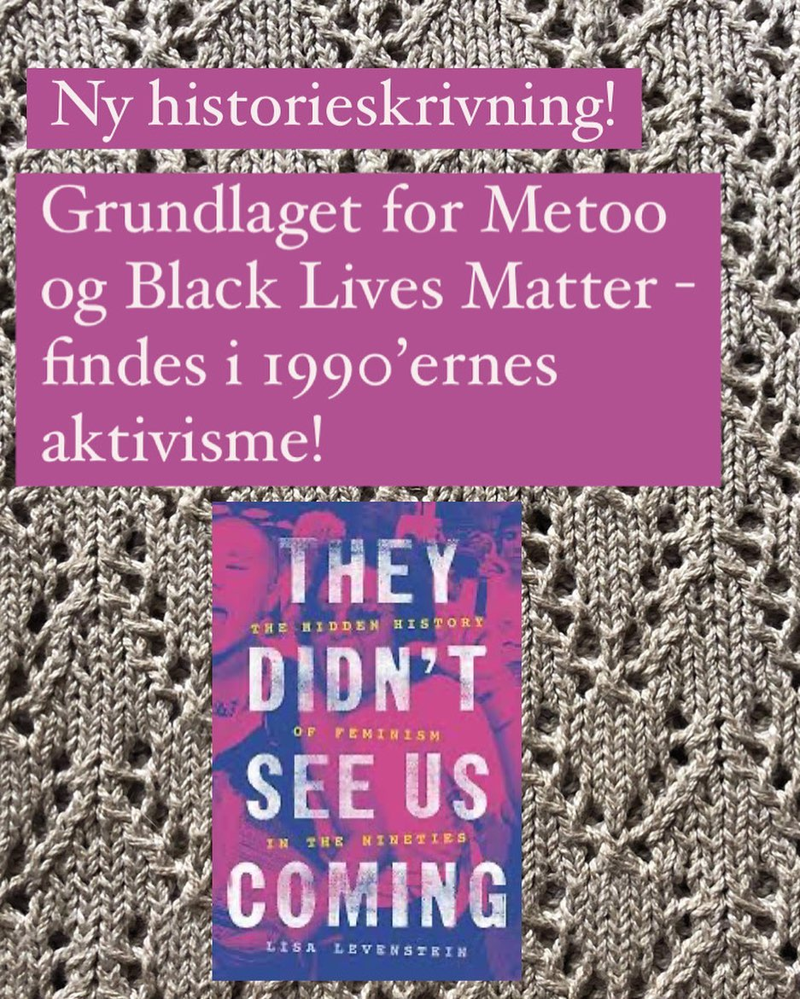
Feminisme og 1990’erne rimer normalt ikke på hinanden. I 1998 erklærede Time Magazine feminismen for død og 1990’erne er gået over i historien som det årti, hvor feminismen efter kvindebevægelsens anden bølge var udsat for et kæmpe backlash!
Men den historie anfægtes nu af den amerikanske historiker Lisa Levenstein, som har skrevet bogen ”They didn’t see us coming: The hidden history of feminism in the nineties”, 2020. Ifølge hende er det korrekt at den hvide heteroseksuelle middelklassefeminisme var i krise i 1990’erne, men ved siden af den blomstrede en ny intersektionel feminisme frem, som bl.a. var drevet af aktivister fra det globale syd, af aktivister med minoritetsetnisk baggrund og af aktivister fra LGBTI+ miljøerne. En international intersektionel feminisme som lagde grunden til og var forudsætningen for 2010’ernes Metoo-bevægelse, Black lives matters osv.
I bogen fortæller Lisa Levenstein bl.a. om, hvordan FNs kvindekonference i Beijing 1995 var med til at bane vejen for de nye bevægelser og hvordan de nye digitale muligheder som emails, listservere mv. blev helt essentielle for bevægelsernes succes.
Bogen kan lånes på Det Kgl. Bibliotek.
#feminisme #1990erne #bøger #lisalevenstein

I sidste uge ønskede jeg Regensen tillykke med 50-året for de første kvindelige beboere. I dag får I lige en historie mere om kvindelige studerendes boligforhold.
D. 1. marts 1932 åbnede Danmarks første kvindekollegium – Kvinderegensen - på Amager Boulevard 101 i København. Og dermed fik kvindelige universitetsstuderende – 56 af slagsen – nu mulighed for at bo sammen under gode og billige vilkår. Ligesom de mandlige studerende på bl.a. Regensen!
Bygherren på Kvinderegensen var foreningen Kvindelige Akademikere. Foreningen, hvis medlemmer bestod af de første kvindelige akademikere, tog i 1929 initiativ til en landsindsamling for at skaffe penge til byggeriet. Efter indvielsen af bygningen, der havde Dronning Alexandrine som protektor, forærede Kvindelige Akademikere Kvinderegensen til Københavns Universitet.
Før 1932 var der ingen bolighjælp til kvindelige studerende. De var henvist til at indlogere sig på lejede værelser, på pensionater eller hos familiemedlemmer. En undtagelse var det meget progressive Hagemanns Kollegium, der blev bygget i 1908. Her havde man fra start gjort plads til 6 kvindelige studerende.
#kvindeligestuderende #Kvinderegensen #ligestilling #universitetet

Mens København er vært for verdens største LGBTI+ begivenhed, Copenhagen 2021, er vi på Det Kgl. Bibliotek dykket ned i den del af kulturarven, hvor LGBTI+ personer har sat deres aftryk.
I temaets 9 artikler kan du bl.a. læse om forfatteren Herman Bang, transpioneren Christine Jorgensen og den lesbiske aktivist fra 1950'erne, Doris Pollas. Du kan også få et overblik over LGBTI+ kampen i et historisk perspektiv og en guide til, hvordan du finder materialer om LGBTI+-emner i vores samling. God fornøjelse!
#pride #temaside #detkglbibliotek

Den norske sociolog Kristine Warhuus Smeby opererer med tre skift i den moderne kernefamilies hverdag. Det første handler om, at begge forældre i dag er på arbejdsmarkedet, det andet om udførelsen af opgaverne i hjemmet og det tredje om ansvaret for planlægning og koordination af aktiviteterne i familien. Og det er især i forhold til sidstnævnte at skævheden indfinder sig. Det er nemlig mor, som typisk er hjemmets ukronede projektleder. Hun er den, der organiserer legeaftaler, fødselsdage og har overblikket over stort og småt i familiens dagligdag. Alt det, som hverken handler om det daglige arbejdsliv eller det konkrete husarbejde, men som er helt afgørende for, at hverdagslivet fungerer. Og med mor som projektleder indtager far typisk rollen som projektlederens lille hjælper! Det fortæller Kristine Warhuus Smeby i et interview i magasinet ”Asterisk”, som netop er udkommet med et tema om familien. Kristine Warhuus Smeby interviewede en række forældrepar om ligestilling i familien i forbindelse med sit ph.d.-projekt og her opdagede hun, at mødrenes ansvar som projektleder ikke var noget, som blev italesat eksplicit og derfor ikke indgik i familiens ligestillingsregnskab. Også selvom det måske er den mest krævende arbejdsopgave i familien overhovedet! Begrebet det tredje skift er Smebys eget og er en udbygning af den amerikanske sociolog Arlie Hochchilds arbejde om den moderne families ligestillingsmæssige udfordringer.
Du kan læse mere i Kristine Warhuus Smeby ph.d.-afhandling ”Likestilling i det tredje skiftet? Heltidsarbeidende småbarnsforeldres praktisering av familieansvar etter 10 uker med fedrekvote”, 2017
Link i bio.
#kønsarbejdsdeling #familien #ligestilling #dettredjeskift

I år er det 50 år siden den første femølejr fandt sted i 1971. Den unge filmstuderende Vibeke Pedersen var med og med sig havde hun et lille filmkamera. Det kom der en lille dokumentarfilm ud af, som består af samtaler mellem kvinderne om bl.a. parforhold, identitet og søsterskab. Den er ret fantastisk og gør os, der ikke var unge i 1970’erne klogere på, hvilke bevidsthedsskred Rødstrømpebevægelsen satte i gang hos den enkelte kvinde.
Filmen hedder ”Femø 1971” og du kan se den på filmcentralen.dk.
Link i bio.
#femølejr #film #jubilæer

Debatten om hvorvidt der bliver bedrevet ”identitetspolitisk” forskning eller ej på de danske universiteter, kører lige nu både i de danske medier og på Christiansborg. Hvis du er interesseret i at følge med i debatten, kan du evt. starte med at læse en spritny kommentarartikel af Mathias Danbolt og Cecilie Ullerup Schmidt, hvor ovenstående citat er hentet fra. Artiklen gennemgår den hidtidige danske debat og spørger til, hvad den får af konsekvenser for forskningspolitikken. Og debatten er tilsyneladende langt fra slut. I fredags d. 28. maj var der indkaldt til en forespørgselsdebat i Folketinget. Her vedtog et flertal ”F49 om overdreven aktivisme i visse forskningsmiljøer”. Du kan se debatten på ft.dk.
Link i bio til artiklen ”Kampen mot ”identitetspolitikk” og angrep på forskningsfriheten: Rapport fra Danmark” i det norske tidsskrift ”Tidsskrift for kjønnsforskning, nr. 1, 2021.
#identitetspolitik #forskningspolitik

Grethe Fenger Møller mødte sin første shitstorm på sin 36 års fødselsdag i Tivolis Koncertsal , hvor hun deltog i Det konservative Folkepartis årsmøde som nybagt folketingsmedlem:
Hun fortæller i bogen ”Blomster og spark”, 1985: ”(…) pludselig sidder der nogle i salen , der tramper i gulvet og forsøger at pibe mig ud. Der var stillet et spørgsmål til mig om noget med ligestilling, og så hujede de, da jeg svarede.”
Det havde ellers hidtil kørt på skinner for hende, både kvinde- og partipolitisk. Som nyuddannet cand.jur. i 1969 blev hun fuldmægtig i socialministeriet, og i 1975 udlånt som leder af det internationale kvindeårssekretatiat. Hun meldte sig ind i Dansk Kvindesamfunds ungdomskreds i 1965 og blev landsformand i 1974. I 1970 meldte hun sig ind i Det konservative Folkeparti og blev valgt til Folketinget i 1977.
Men det skulle blive endnu værre, da Dansk Kvindesamfund i 1979 op til FNs Verdenskvindekonference i København i 1980 med henvisning til den netop vedtagne Ligebehandlingslov argumenterede for, hvad de kaldte en:
” (…) frikvote-ordning på 50% til fordel alene for kvinder. Overalt hvor vi i det følgende foreslår kønskvotering skal det forstås som kvinders ret til 50% af det samlede antal pladser på alle niveauer.”
Kritikken haglede ned over hende på partiets sommergruppemøde og igen på årsmødet:
”Jeg fik at vide, at jeg krænkede kvindernes menneskerettigheder, og at der ikke var grænser for, hvad jeg gik og lavede… og der kom opfordringer til, at jeg skulle vælge mellem partiet og Dansk Kvindesamfund”.
Det gjorde hun så, men først i 1981, da hun forlod landsformandsposten i Dansk Kvindesamfund for at blive arbejdsminister i 1982.
Dermed endte en epoke i Dansk Kvindesamfunds historie, hvor formandsposten efter en ikke formaliseret kvoteringsregel gik på omgang mellen de regeringsbærende partier. Det begyndte med den radikale Julie Arenholdt i 1918, og talte, foruden Grethe Fenger Møller, bl.a. ministrene, socialdemokraten Lis Groes og Venstres Natalie Lind.
#Danskkvindesamfund150 #ligestilling #kønskvotering #folketingsmedlemmer

Kvindelige ledere performer generelt bedre end mandlige ledere! I hvert fald, når man spørger dem, der er udsat for deres ledelse! Det viste en såkaldt 360 grader vurdering af 60.000 ledere fra hele verden foretaget af konsulentfirmaet Zenger|Folkman i 2019. Kvinderne scorede bedst på 13 ud af 19 forskellige ledelseskompetencer. I 2020 blev undersøgelsen gentaget – bare med færre deltagere. Og resultatet viste at forskellen på vurderingerne er vokset under covid-19 i de kvindelige lederes favør!
En præsentation af undersøgelsen kan læse i tidsskriftet Harvard Business Review, december 2020.
Link i bio.
#kvindeligeledere #covid-19 #krisestyring

“Med megen Overvindelse tvang hun sig de to sidste Gange til med bankende Hjærte at bestige Talerstolen og oplæse Regnskabet; men hun har aldrig turdet eller kunnet besvare Forespørgsler rettede til Kassereren.”
Scenen er generalforsamlinger i Dansk Kvindesamfunds Københavnskreds først i 1880’erne. ”Hun” er det organisatoriske stortalent Astrid Stampe Feddersen (1852-1930), som var kasserer i kredsen fra 1882. Senere blev hun kredsformand i Ringkøbing og Nykøbing Falster for at ende som landsformand i kvindevalgretskampens afgørende fase i 1912. Og det er hende selv, der med kritisk distance og i tredje person beskriver sin kamp med den indlejrede stigmatisering af ’offentlige kvinder’, der gjorde vejen op på talerstolen umådelig lang for Dansk Kvindesamfunds pionergeneration.
I Ringkøbingårene nåede hun ikke stort længere. Op mod 50 år gammel måtte hun ved medlemsmøder i sin egen DK-kreds stadig driste sig til at oplæse manuskripter siddende. Og selvom det gik bedre i Nykøbing F og senere i København som formand, blev hun aldrig den store taler.
Men skrive kunne hun. I åbningsnummeret af Dansk Kvindesamfunds medlemsblad ”Kvinden og Samfundet” i 1885 finder man det første af hendes mange bidrag, nemlig en artikel om hendes hjertesag, ligestilling i ægteskabet. Bladet imødekom et presserende behov for en kvindesaglig offentlighed. Det gav bogstavelig talt kvinder en stemme! I sin erindringsbog ”Minder”, 1929 beskriver hun kvindernes opstemmede behov for at præge den offentlige debat under 1880’ernes tilspidsede forfatningskamp:
”Der var en Trang og en Længsel i Kvinderne efter at ”tale frit ud fra Leveren”, og det kaldte mange Penne frem, som aldrig havde vovet sig frem i Dagspressen og heller ikke vilde være blevet optagne i den.”
#danskkvindesamfund150 #kvindepolitiskoffentlighed #angstenfortalerstolen

For at få sin udenlandske kæreste eller ægtefælle til Danmark skal man ifølge lovgivningen søge om familiesammenføring. Og her er omdrejningspunktet det såkaldte tilknytningskrav, hvor parret skal kunne godtgøre at deres samlede tilknytning til Danmark er større end deres samlede tilknytning til et andet land.
Men hvordan bliver tilknytningskravet administreret og fortolket i praksis af de danske myndigheder? Hvilke ansøgere ses som ”elskværdige” og dermed som mulige kommende danske statsborgere? Og hvilke gør ikke?
Det undersøger Sofie Jeholm i sin ph.d. afhandling ”Justify My Love: The affective governing of the attachment requirement”, 2020 ved hjælp af tekstnære analyser af administrative dokumenter som fx ansøgningspakker, afgørelser og praksisnotater.
Link i bio!
#kærlighed #familiesammenføring #tilknytningskrav #ph.d.afhandling

Hej! Vi hedder Astrid og Martin, og vi er takeover her på profilen i denne uge.
Til dagligt studerer vi begge Historie på Københavns Universitet, hvor vi indenfor det seneste år især har interesseret os for at inkorporere kønsforskning og feministisk teori i vores studier.
Astrid er på 6. semester på sin bachelor. I efteråret skrev hun bacheloropgave om den amerikanske konservative kvindebevægelses ligestillingssyn i 1970’erne, og derudover fulgte hun kurset ”Kønsforskningens teori og praksis” på Center for Kønsforskning. Dette semester følger Astrid kurset ”Følelsernes politik”, der handler om affektteori, samt kurset ”Køn, racialisering og identitet”. Begge fag udbydes på Center for Køn, Seksualitet og Forskellighed.
Martin er på 4. semester på sin kandidat. I efteråret skrev han sin specialeforberedende opgave, der handlede om de to organisationer Københavns Tjenestepigeforening og Dansk Kvindesamfunds arbejde for tjenestepigernes vilkår i perioden omkring år 1900. Dette semester følger han ligesom Astrid kurset ”Følelsernes politik”. Derudover forbereder han sig til specialeskrivningen til efteråret ved at læse kilder og forskning om Dansk Kvindesamfunds klassesyn med særligt henblik på arbejderklassens kvinder.
I løbet af ugen vil vi forsøge at give et indblik i, hvordan vi som to historiestuderende bruger kønsforskning. Vi håber, at I har lyst til at følge med!

D. 21. januar 1890 var der valg til Folketinget. Kun en minoritet af den danske befolkning var indbudt til at deltage, nemlig mænd over 30 år med egen husstand.
På dagen samledes de stemmeberettigede mænd ved opstillede valgtribuner landet over, for ved håndsoprækning at give deres stemme til kende. Alt var som det plejede. Indtil en eller flere kvinder bad om ordet. Det var aldrig sket før!
Kvindernes ærinde var at udspørge (eller interpellere, som man kaldte det) folketingskandidaterne om deres holdning til bl.a. stemmeret til kvinder.
Aktionen var tilrettelagt af Dansk Kvindesamfund og Kvindevalgretsforeningen og forløb de fleste steder i god ro og orden. Generelt blev interpellanterne godt modtaget og kandidaterne svarede høfligt på deres spørgsmål. Undtagen i Odense og Præstø, hvor kvinderne blev nægtet at få lov til at tage ordet, og i Fredericia, hvor de slet ikke fik lov til at være tilstede på valgmøderne.
Da dagen var omme, kunne resultatet gøres op. Højres kandidater havde overvejende været imod både kommunal og politisk stemmeret til kvinder, mens Venstre og Socialdemokraterne i det store hele havde udtalt sig positivt om den kommunale stemmeret. Den politiske stemmeret mente man ikke, at tiden var inde til at tale om.
Trods kandidaternes svar havde aktionen været en succes. Den havde vist, at stemmeretskvinderne ville og skulle tages seriøst.
Ved en fest for oppositionen, der blev holdt om aftenen d. 21. januar i Fønix, holdt en af interpellanterne, Frk. Eskesen, en tale, hvor hun bl.a. sagde: ”De har i Dag set Kvinderne dukke op hist og her paa Valgtribunerne for at interpellere d'Hrr. Valgkandidater. Men det bliver ikke i Dag alene, at Kvinderne træde frem, de vil træde frem stedse tættere og tættere og spørge saa længe, indtil den danske Vælgerbefolkning bliver paa det rene med, at det er uforsvarligt, at den ene Halvdel af det danske Folk er uden Borgerrettigheder”.
Billedet er fra den amerikanske stemmeretskamp.
#danskkvindesamfund150 #stemmeret #interpellationer

Eller sagt med andre ord: Vi får aldrig ligestilling, hvis vejen derhen skal foregå på det eksisterende systems præmisser. Citatet stammer fra Audre Lordes berømte tekst ”The Master’s Tools Will Never Dismantle the Master’s House” fra 1979. Den og andre af hendes essays kan nu læses i dansk oversættelse i bogen: ”Din tavshed kan ikke beskytte dig: Udvalgte essays fra Sister Outsider”, 2020.
Audre Lorde (1934-1992) var en amerikansk digter og aktivist. Selv kaldte hun sig ”sort, kvinde, lesbisk, mor, kriger, digter”.
#audrelorde #ligestilling

En af Dansk Kvindesamfunds mærkesager var at få indført kvindelig arveret til tronen. Siden 1857 havde kvinder nemlig haft lige arveret med mænd – undtagen i kongehuset. Dansk Kvindesamfund stillede derfor allerede forslag om ændring af tronfølgeloven i forbindelse med forhandlingerne om 1915-grundloven, hvor bl.a. kvinder fik politisk valgret. Men uden held!
I 1946, da arbejdet med en ny revision af grundloven gik i gang, så det anderledes lovende ud. Tiden var en anden. Ny ligestillingslovgivning i 1920’erne og kvinders enorme bidrag til at holde landet kørende under Anden Verdenskrig fik Dansk Kvindesamfund til igen at fremsætte kravet om kvindelig tronfølge.
Samme år fyldtes aviserne med reportager af den hollandske kronprinsesse Julianas besøg og Dronning Ingrids fødsel af endnu en prinsesse. Og kongehusets popularitet bare steg og steg. Så Dansk Kvindesamfunds timing kunne ikke være bedre.
Pressedækningen af forhandlingerne om tronfølgeloven var stor og primært positiv og indeholdt både portrætter af fremragende kvindelige regenter op gennem de europæiske monarkiers historie og artikler om kvinder på vej mod topposter i samtidens Danmark.
Selv den konservative avis ”Berlingske Tidende” anbefalede en kønsneutral lovgivning. ”Skal der ske en Ændring hos os, var det vel derfor bedst at tage Skridtet fuldt ud”. Ifølge avisen burde Danmark gå hele vejen og ikke vælge den hollandske og engelske model, der med betinget kvindelig arvefølge gav yngre sønner og brødre en fortrinsstilling for ældre døtre og søstre.
Sådan blev det dog ikke. Da det kom til stykket besluttede politikerne kun at tage skridtet halvt. Dvs. at den nye tronfølgelov kun sikrede kvindelig arvefølge, hvis der ikke var nogen brødre. Og som dronningen selv senere har fortalt, blev hun kun kronprinsesse, ”fordi man stod og ingen drenge havde”.
Dansk Kvindesamfunds krav om en kønsneutral tronfølgelov blev først indfriet i 2009, hvor det endeligt blev lovfæstet at førstefødte, uanset køn, fremover arver kronen.
#danskkvindesamfund150 #tronfølgeloven

Bøssernes Befrielses Front blev stiftet i 1971 og deres første aktioner bestod bl.a. af danseaktioner på Rådhuspladsen og på danserestauranterne i København. Målet var at få ændret den § i lovgivningen, som forbød, at mænd dansede sammen på offentlige steder.
Danserestauranterne var mildest talt ikke begejstrede og smed straks bøsserne på porten. Fx mindes en af deltagerne ved en aktion i ”Palmehaven”, at ”… så snart vi rejste os og gik på dansegulvet, blev vi smidt ud. Vi modsatte os ikke, så der blev ingen optøjer, men det var to meget bestemte udsmidere, der ikke ville have sådan nogen til at forstyrre småborgerligheden”.
Citatet er hentet fra bogen ”Erindringer om Bøssernes Befrielses Front: et aktivistliv”, 2020, hvor 2 af de centrale aktivister Kristian Tofte Petersen og Ole Kongsdal Jensen, fortæller historien om bevægelsen. Bogen er den første, der i detaljer dokumenterer bevægelsens historie.
Bøssernes Befrielses Front eksisterede fra 1971-1983 og lovparagraffen, der forbød herredans blev ophævet i 1973.
#Bøssernesbefrielsesfront #homosekualitet #seksualitetshistorie

Unge flytter senere hjemmefra end tidligere. Men ifølge nye tal fra Danmarks Statistik er det især de unge mænd, som tøver med at rykke teltpælene op. 64 % af de 20-årige mænd boede stadig hjemme i 2019, mens det kun gjaldt for 53 % af kvinderne. Og i 23-årsalderen boede 20 % af mændene fortsat hjemme, mens det kun var 10 % af kvinderne.
Og mønsteret er det samme i de andre EU-lande. Blot med den forskel, at unge i de fleste lande venter meget længere tid med at flytte hjemmefra. Ja faktisk er det kun i Sverige og Luxembourg at unge flytter tidligere hjemmefra end i Danmark. Højdespringerne i EU er lande som Kroatien, Slovakiet og Italien, hvor gennemsnitsalderen for hvornår unge mænd flytter hjemmefra ligger over eller lige omkring de 30 år. For de unge kvinders vedkommende ligger det omkring eller lidt under de 30 år.
Gennemsnittet for hele EU ligger på 27 år for unge mænd og 25 år for unge kvinder.
#kønsstatistik #unge #hjemmeboende
Link i bio.

Sosuassistent, sygeplejerske, pædagog, jordemor er nogle af de kvindefag, som ved hver overenskomstforhandling stiller krav om et generelt lønløft under henvisning til, at de er dårligere lønnet end andre sammenlignelige faggrupper. Og hver gang sker det samme. De får den samme procentvise lønstigning som alle andre – og vedbliver at være lavtlønsområder. Hvorfor er det så svært for lavtlønsfagene at få ændret deres status i forhandlingerne?
Ny forskning viser, at forklaringen bl.a. skal findes i det lønhierarki, som blev indført med tjenestemandsreformen af 1969 – altså for ca. 50 år siden.
Her blev alle fag sat ind i et hierarki, der bestemte, hvordan et fag skulle aflønnes. Og dette hierarki har ikke rokket sig ud af stedet, selv om uddannelseskravet til de forskellige kvindefag er vokset over tid. Ja faktisk ser det ud til, at øgede uddannelseskrav slet ikke eller næsten ikke har fået nogen effekt på placeringen i lønhierarkiet.
Det kalder ifølge rapporten ”Kvindefag i historisk skruetvinge”, 2020 på en ændring og omdefinering af lønstrukturen i den offentlige sektor. Konkret foreslås det, at der sættes en evaluering af tjenestemandsreformen i gang og at der laves en langsigtet plan for, hvordan der kan ske en udligning af lønforskellen mellem de kvinde- og mandsdominerede fag i den offentlige sektor.
Astrid Elkjær Sørensen m.fl.: ”Kvindefag i en historisk skruetvinge: En analyse af tjenestemandsreformens betydning for hierarkiet i offentlige lønninger fra 1969-2019”, Institut for Menneskerettigheder, 2020. Link i bio.
#kvindefag #ligeløn #ligestilling #denoffentligesektor

Matilde og Fredrik Bajer er Dansk Kvindesamfunds første Power Couple. De var vokset op på samme sydsjællandske egn og giftede sig i 1867, da han havde etableret sig som kulturskribent.
Kort før brylluppet landede nordens første nordiske kvindesagsblad ”Tidskrift för Hemmet” til anmeldelse på hans skrivebord – og udløste en veritabel feministisk vækkelse:
”Længe lå de røde hæfter – en hel årgang – på mit bord, uden at jeg gad røre dem. Men det var jo min pligt at løse opgaven. Endelig tog jeg fat på dem. Og jo mere jeg læste, des mere åbnedes mine øjne for det retfærdige i kvindesagen.”
Til Mathilde på vej på ferie skrev han:
”Jeg beder og bønfalder dig at tage Tidskrift för Hemmet med … du må ikke sige nej til denne bøn, og jeg skal sige hvorfor! Dette virklig fortrinlige tidskrift (tillegnad den svenska kvinnan) drøfter på en livlig og åndrig måde nogle af tidens mest brændende spørgsmål om kvindens stilling i samfundet. Ved mange sider har jeg sat mærke og vilde nu gerne høre dine meninger og domme.”
Hun blev lige så begejstret. Han blev dansk agent for Tidskrift för Hemmet. Og bryllupsrejsen gik til Sverige, hvor de hos rigsdagsmand og kvindesagsven F.T. Borg hentede en vognladning blade, som de på hjemturen delte ud til kvindepolitiske nøglepersoner i Danmark, bl.a. Mathilde Fibiger, der 1850 havde vakt furore med romanen Clara Raphaels Breve.
Således var det fra et netværk omkring et svensk tidsskrift initiativet til den danske kvindebevægelse udgik. Den umiddelbare anledning var imidlertid parrets kontakt til en schweizisk baseret international organisation. Dansk Kvindesamfund blev oprettet som Comité local de l’association internationale des femmes i februar 1871 og fik først sit danske navn i december 1871, da lokalkomiteen meldte sig ud af moderorganisationen og konstituerede sig som en selvstændig forening.
Fredrik Bajer nedskrev systematisk sin rolle til fordel for Matilde Bajer, foreningens første formand.
”Min egen rolle ved Samfundets Stiftelse var ikke så stor, som mange vist tror. Jeg var min Hustrus rådgiver og undertiden sekretær, ligesom hun en halv snes år senere var for mig ved stiftelsen af det internationale Fredsbureau.
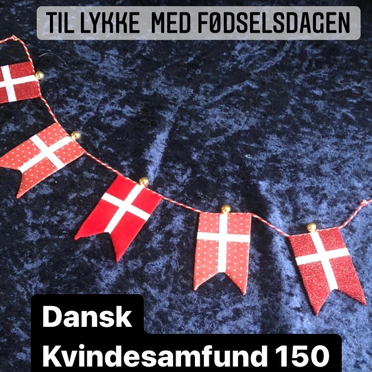
Kæmpe tillykke til Danmarks ældste kvindeorganisation Dansk Kvindesamfund med de 150 år!
Dansk Kvindesamfund har siden stiftelsen i 1871 været den gennemgående kvindeorganisation i den danske feministiske bevægelse, som utrætteligt har arbejdet for at skabe lige rettigheder og muligheder til kvinder. Der har både været op- og nedture, men DK har været der hele tiden og har i perioder haft både meget stor gennemslagskraft og medlemstilslutning. MEN dens historie er aldrig rigtig blevet fortalt! Trods diverse jubilæumsskrifter har vi endnu til gode at få bogen (bøgerne) der fortæller hele historien fra starten til i dag. Og gerne en eller flere videnskabelige af slagsen!
Imens vi venter på, at det sker, vil jeg og kønshistoriker Jytte Larsen resten af året underholde jer med små historier om Dansk Kvindesamfunds meritter gennem 150 år.
Håber I har lyst til at læse med.
#Danskkvindesamfund150 #Danskkvindesamfund #Feminisme #Ligestilling

Har du brug for lidt hjælp til litteratursøgning i køn til en opgave eller til en artikel? Så giver jeg gerne en hånd. Og det er uanset om du er gymnasieelev, universitetsstuderende, forsker, journalist eller andet.
Jeg hjælper også gerne med at finde tilgængeligt kildemateriale om dansk kvinde- og kvindebevægelseshistorie.
Skriv til mig på jyni@kb.dk.

Ligestillingen er i disse år under angreb fra konservative og højrepopulistiske kræfter verden over. Og især feministiske aktivister er meget udsat. Og det gælder uanset om de vil ændre et billede på en pengeseddel, synliggøre kønssteotypierne i spilindustrien eller italesætte vold mod kvinder.
Det norske tidsskrift ”Tidsskrift for kjønnsforskning” sætter med en række forskningsartikler fokus på netop dette backlash.
Her kan du bl.a. læse Sofia Strids artikel: ”Jämställdhet under angrepp: En feministisk analys av våldsamt motstånd online”. Artiklen er en analyse af tre tilfælde af onlinevold mod feministiske aktivister og journalister i England, USA og Sverige. Det drejer sig om den britiske aktivist Caroline Criado-Perez, som lavede en kampagne for at få en kvindes ansigt på en britisk pengeseddel i England, om den canadisk-amerikanske mediekritiker og gamer Anita Sarkeesian, som startede en indsamling til fordel for en videoproduktion om kønsstereotypier i spilleindustrien og endelig om den svenske forfatter og journalist Maria Sweland, som bl.a. skriver klummer i aviserne om vold mod kvinder.
Du kan læse alle artiklerne her:
http://kjonnsforskning.no/nb/tidsskriftet/2020/4/likestilling-under-angrep
#kønsforskning #feministiskteori #onlinevold #voldinærerelationer #kønspolitik #antifeminisme

Den britisk-australske affektteoretiker og queeraktivist Sara Ahmed blev for alvor kendt i Danmark, da hendes essay ”Killjoy-manifest” blev oversat til dansk i 2018 og figuren ”den feministiske killjoy” eller ”den feministiske glædesdræber” er på vej til at blive en del af det danske sprog.
Nu foreligger der igen en bog fra hendes hånd i en dansk oversættelse. Denne gang er det en række af hendes essays fra 2004 og frem, som beskæftiger sig med bl.a. hvidhed, følelser, den fremmede og klagen som feministisk metode. Bogen ”Et ulydigt arkiv”, 2020 er udstyret med et forord af kønsforskerne Mons Bissenbakker og Michael Nebeling. Uddrag af forordet kan læses her: http://peculiar.dk/viflytterikke-et-ulydigt-arkiv/
Citatet i dette opslags billede er taget fra essayet: ”Hvidhedserklæringer: Antiracismens ikke-performativitet” fra 2004, som indgår i bogen.
#kønsforskning #feministiskteori #SaraAhmed

Jeg hedder Jytte Nielsen. Jeg er informationsspecialist i kønsforskning på Det Kgl. Bibliotek. På min profil vil jeg poste nyheder fra kønsforskningen. Det kan være nye bøger, nye artikler, rapporter og kønsstatistik, men også gode historier om kvindebevægelser, feminisme og om kvinder, som har gjort en forskel. Håber du vil læse med.
Har du brug for hjælp til litteratursøgning til din opgave eller andet? Skriv til mig på jyni@kb.dk
#nytomkønsforskning #kvindehistorie #Detkglbibliotek #informationsspecialist

Myten om at kvindelige forskere er mindre produktive end mandlige forskere er nu aflivet. Nyt stort internationalt studie viser nemlig at kvindelige forskere er lige så produktive som mænd, men har kortere karrierer. Undersøgelsen omfatter 1,5 mill. kvindelige og mandlige forskere inden for natur- og samfundsvidenskab, som afsluttede deres karrierer i perioden fra 1955-2010. I perioden producerede de kvindelige og de mandlige forskere i gennemsnit det samme antal artikler om året og blev citeret lige meget. Men når de kvindelige forskere alligevel samlet set producerede færre artikler end deres mandlige kollegaer, skyldtes det at de kvindelige forskeres karrierer i gennemsnit var ca. 1½ år kortere end de mandlige forskeres. Studiet baserer sig på tal fra 83 lande, herunder Danmark.
Artiklen “Historical comparison of gender inequality in scientific careers across countries and disciplines” er skrevet af Junming Huang, Alexander J. Gates, Roberta Sinatra, and Albert-László Barabási og publiceret I tidsskriftet Proceedings of the National Academy of Sciences of the United States of America, 2020.
Link til forskningsartiklen: https://www.itu.dk/om-itu/presse/nyheder/2020/kvindelige-forskere-er-lige-saa-produktive-som-maend
#kvindeligeforskere #produktivitet #mytedræber

Antifeminisme bygger på kvindehad og er et angreb på feminister. Men hvad er det for nogle forestillinger om kønsforskelle, ulighed og samfundsmodeller, der ligger bag? Det giver idehistoriker Mikkel Torup nogle bud på i bogen ”Antifeminisme: Kvindehad i lighedens tidsalder”, 2020. Med brug af bl.a. danske eksempler på antifeministiske læserbreve tydeliggør han, at det især af angsten for tab af privilegier og ønsket om at beherske kvinders adfærd (læs: seksuelle), der driver modstanden mod feminismen. Et helt kapitel er viet til en analyse af den canadiske psykolog Jordan Petersons bog ”12 regler for livet: en modvægt til kaos”, der blev oversat til dansk i 2018.